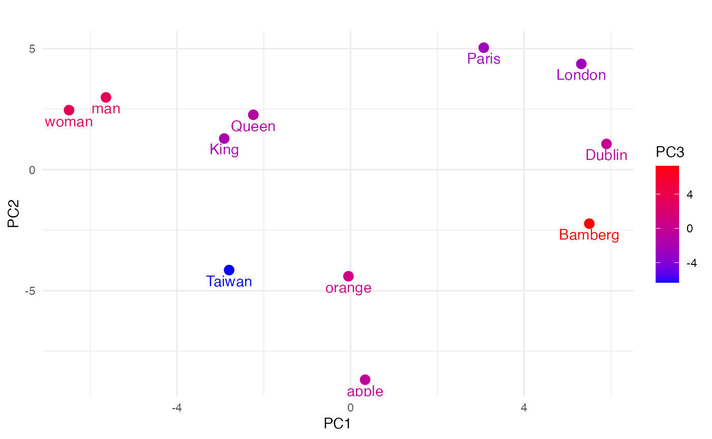
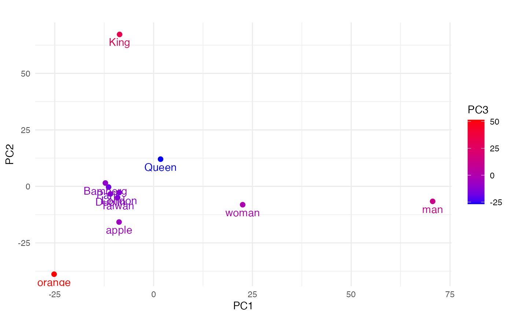

Tutorial
Yen-Chieh Liao | Sohini Timbadia | Stefan Müller
University of Birmingham & University College DublinSource:
vignettes/tutorial.Rmd
tutorial.RmdFlair NLP and flaiR for Social Science
Flair NLP is an open-source Natural Language Processing (NLP) library developed by Zalando Research. Known for its state-of-the-art solutions, it excels in contextual string embeddings, Named Entity Recognition (NER), and Part-of-Speech tagging (POS). Flair offers robust text analysis tools through multiple embedding approaches, including Flair contextual string embeddings, transformer-based embeddings from Hugging Face, and traditional models like GloVe and fasttext. Additionally, it provides pre-trained models for various languages and seamless integration with fine-tuned transformers hosted on Hugging Face.
flaiR bridges these powerful NLP features from Python to the R environment, making advanced text analysis accessible for social science researcher by combining Flair’s ease of use with R’s familiar interface for integration with popular R packages such as quanteda and more.
Sentence and Token
Sentence and Token are fundamental classes.
Sentence
A Sentence in Flair is an object that contains a sequence of Token objects, and it can be annotated with labels, such as named entities, part-of-speech tags, and more. It also can store embeddings for the sentence as a whole and different kinds of linguistic annotations.
Here’s a simple example of how you create a Sentence:
# Creating a Sentence object
library(flaiR)
string <- "What I see in UCD today, what I have seen of UCD in its impact on my own life and the life of Ireland."
Sentence <- flair_data()$Sentence
sentence <- Sentence(string)Sentence[26] means that there are a total of 26 tokens
in the sentence.
print(sentence)
#> Sentence[26]: "What I see in UCD today, what I have seen of UCD in its impact on my own life and the life of Ireland."Token
When you use Flair to handle text data,1 Sentence
and Token objects often play central roles in many use
cases. When you create a Sentence object, it automatically tokenizes the
text, removing the need to create the Token object manually.
Unlike R, which indexes from 1, Python indexes from 0. Therefore,
when using a for loop, I use seq_along(sentence) - 1. The
output should be something like:
# The Sentence object has automatically created and contains multiple Token objects
# We can iterate through the Sentence object to view each Token
for (i in seq_along(sentence)-1) {
print(sentence[[i]])
}
#> Token[0]: "What"
#> Token[1]: "I"
#> Token[2]: "see"
#> Token[3]: "in"
#> Token[4]: "UCD"
#> Token[5]: "today"
#> Token[6]: ","
#> Token[7]: "what"
#> Token[8]: "I"
#> Token[9]: "have"
#> Token[10]: "seen"
#> Token[11]: "of"
#> Token[12]: "UCD"
#> Token[13]: "in"
#> Token[14]: "its"
#> Token[15]: "impact"
#> Token[16]: "on"
#> Token[17]: "my"
#> Token[18]: "own"
#> Token[19]: "life"
#> Token[20]: "and"
#> Token[21]: "the"
#> Token[22]: "life"
#> Token[23]: "of"
#> Token[24]: "Ireland"
#> Token[25]: "."Or you can directly use $tokens method to print all
tokens.
print(sentence$tokens)
#> [[1]]
#> Token[0]: "What"
#>
#> [[2]]
#> Token[1]: "I"
#>
#> [[3]]
#> Token[2]: "see"
#>
#> [[4]]
#> Token[3]: "in"
#>
#> [[5]]
#> Token[4]: "UCD"
#>
#> [[6]]
#> Token[5]: "today"
#>
#> [[7]]
#> Token[6]: ","
#>
#> [[8]]
#> Token[7]: "what"
#>
#> [[9]]
#> Token[8]: "I"
#>
#> [[10]]
#> Token[9]: "have"
#>
#> [[11]]
#> Token[10]: "seen"
#>
#> [[12]]
#> Token[11]: "of"
#>
#> [[13]]
#> Token[12]: "UCD"
#>
#> [[14]]
#> Token[13]: "in"
#>
#> [[15]]
#> Token[14]: "its"
#>
#> [[16]]
#> Token[15]: "impact"
#>
#> [[17]]
#> Token[16]: "on"
#>
#> [[18]]
#> Token[17]: "my"
#>
#> [[19]]
#> Token[18]: "own"
#>
#> [[20]]
#> Token[19]: "life"
#>
#> [[21]]
#> Token[20]: "and"
#>
#> [[22]]
#> Token[21]: "the"
#>
#> [[23]]
#> Token[22]: "life"
#>
#> [[24]]
#> Token[23]: "of"
#>
#> [[25]]
#> Token[24]: "Ireland"
#>
#> [[26]]
#> Token[25]: "."Retrieve the Token
To comprehend the string representation format of the Sentence
object, tagging at least one token is adequate. Python’s
get_token(n) method allows us to retrieve the Token object
for a particular token. Additionally, we can use
[] to index a specific token.
# method in Python
sentence$get_token(5)
#> Token[4]: "UCD"
# indexing in R
sentence[6]
#> Token[6]: ","Each word (and punctuation) in the text is treated as an individual Token object. These Token objects store text information and other possible linguistic information (such as part-of-speech tags or named entity tags) and embedding (if you used a model to generate them).
While you do not need to create Token objects manually, understanding how to manage them is useful in situations where you might want to fine-tune the tokenization process. For example, you can control the exactness of tokenization by manually creating Token objects from a Sentence object.
This makes Flair very flexible when handling text data since the automatic tokenization feature can be used for rapid development, while also allowing users to fine-tune their tokenization.
Annotate POS tag and NER tag
The add_label(label_type, value) method can be employed
to assign a label to the token. In Universal POS tags, if
sentence[10] is ‘see’, ‘seen’ might be tagged as
VERB, indicating it is a past participle form of a
verb.
sentence[10]$add_label('manual-pos', 'VERB')
print(sentence[10])
#> Token[10]: "seen" → VERB (1.0000)We can also add a NER (Named Entity Recognition) tag to
sentence[4], “UCD”, identifying it as a university in
Dublin.
sentence[4]$add_label('ner', 'ORG')
print(sentence[4])
#> Token[4]: "UCD" → ORG (1.0000)If we print the sentence object, Sentence[50] provides
information for 50 tokens → [‘in’/ORG, ‘seen’/VERB], thus displaying two
tagging pieces of information.
print(sentence)
#> Sentence[26]: "What I see in UCD today, what I have seen of UCD in its impact on my own life and the life of Ireland." → ["UCD"/ORG, "seen"/VERB]Corpus
The Corpus object in Flair is a fundamental data structure that represents a dataset containing text samples, usually comprising of a training set, a development set (or validation set), and a test set. It’s designed to work smoothly with Flair’s models for tasks like named entity recognition, text classification, and more.
Attributes:
-
train: A list of sentences (ListSentence) that form the training dataset. -
dev(or development): A list of sentences (ListSentence) that form the development (or validation) dataset. -
test: A list of sentences (ListSentence) that form the test dataset.
Important Methods:
-
downsample: This method allows you to downsample (reduce) the number of sentences in the train, dev, and test splits. -
obtain_statistics: This method gives a quick overview of the statistics of the corpus, including the number of sentences and the distribution of labels. -
make_vocab_dictionary: Used to create a vocabulary dictionary from the corpus.
library(flaiR)
Corpus <- flair_data()$Corpus
Sentence <- flair_data()$Sentence
# Create some example sentences
train <- list(Sentence('This is a training example.'))
dev <- list(Sentence('This is a validation example.'))
test <- list(Sentence('This is a test example.'))
# Create a corpus using the custom data splits
corp <- Corpus(train = train, dev = dev, test = test)$obtain_statistics() method of the Corpus object in the
Flair library provides an overview of the dataset statistics. The method
returns a Python
dictionary with details about the training, validation
(development), and test datasets that make up the corpus. In R, you can
use the jsonlite package to format JSON.
library(jsonlite)
data <- fromJSON(corp$obtain_statistics())
formatted_str <- toJSON(data, pretty=TRUE)
print(formatted_str)
#> {
#> "TRAIN": {
#> "dataset": ["TRAIN"],
#> "total_number_of_documents": [1],
#> "number_of_documents_per_class": {},
#> "number_of_tokens_per_tag": {},
#> "number_of_tokens": {
#> "total": [6],
#> "min": [6],
#> "max": [6],
#> "avg": [6]
#> }
#> },
#> "TEST": {
#> "dataset": ["TEST"],
#> "total_number_of_documents": [1],
#> "number_of_documents_per_class": {},
#> "number_of_tokens_per_tag": {},
#> "number_of_tokens": {
#> "total": [6],
#> "min": [6],
#> "max": [6],
#> "avg": [6]
#> }
#> },
#> "DEV": {
#> "dataset": ["DEV"],
#> "total_number_of_documents": [1],
#> "number_of_documents_per_class": {},
#> "number_of_tokens_per_tag": {},
#> "number_of_tokens": {
#> "total": [6],
#> "min": [6],
#> "max": [6],
#> "avg": [6]
#> }
#> }
#> }In R
Below, we use data from the article The Temporal Focus of Campaign Communication by Stefan Muller, published in the Journal of Politics in 2020, as an example.
First, we vectorize the cc_muller$text using the
Sentence function to transform it into a list object. Then, we reformat
cc_muller$class_pro_retro as a factor. It’s essential to
note that R handles numerical values differently than Python. In R,
numerical values are represented with a floating point, so it’s
advisable to convert them into factors or strings. Lastly, we employ the
map function from the purrr package to assign labels to each sentence
corpus using the $add_label method.
library(purrr)
#>
#> Attaching package: 'purrr'
#> The following object is masked from 'package:jsonlite':
#>
#> flatten
data(cc_muller)
# The `Sentence` object tokenizes text
text <- lapply( cc_muller$text, Sentence)
# split sentence object to train and test.
labels <- as.factor(cc_muller$class_pro_retro)
# `$add_label` method assigns the corresponding coded type to each Sentence corpus.
text <- map2(text, labels, ~ .x$add_label("classification", .y), .progress = TRUE)To perform a train-test split using base R, we can follow these steps:
set.seed(2046)
sample <- sample(c(TRUE, FALSE), length(text), replace=TRUE, prob=c(0.8, 0.2))
train <- text[sample]
test <- text[!sample]
sprintf("Corpus object sizes - Train: %d | Test: %d", length(train), length(test))
#> [1] "Corpus object sizes - Train: 4710 | Test: 1148"If you don’t provide a dev set, flaiR will not force you to carve out a portion of your test set to serve as a dev set. However, in some cases when only the train and test sets are provided without a dev set, flaiR might automatically take a fraction of the train set (e.g., 10%) to use as a dev set (#2259). This is to offer a mechanism for model selection and to prevent the model from overfitting on the train set.
In the “Corpus” function, there is a random selection of the
"dev" dataset. To ensure reproducibility, we need to set
the seed in the flaiR framework. We can accomplish this by calling the
top-level module “flair” from flaiR and using
$set_seed(1964L) to set the seed.
flair <- import_flair()
flair$set_seed(1964L)
corp <- Corpus(train=train,
# dev=test,
test=test)
#> 2025-01-19 02:01:07,747 No dev split found. Using 10% (i.e. 471 samples) of the train split as dev data
sprintf("Corpus object sizes - Train: %d | Test: %d | Dev: %d",
length(corp$train),
length(corp$test),
length(corp$dev))
#> [1] "Corpus object sizes - Train: 4239 | Test: 1148 | Dev: 471"In the later sections, there will be more similar processing using
the Corpus. Following that, we will focus on advanced NLP
applications.
Sequence Taggings
Tag Entities in Text
Let’s run named entity recognition over the following example sentence: “I love Berlin and New York”. To do this, all you need to do is make a Sentence object for this text, load a pre-trained model and use it to predict tags for the object.
NER Models
| ID | Task | Language | Training Dataset | Accuracy | Contributor / Notes |
|---|---|---|---|---|---|
| ‘ner’ | NER (4-class) | English | Conll-03 | 93.03 (F1) | |
| ‘ner-fast’ | NER (4-class) | English | Conll-03 | 92.75 (F1) | (fast model) |
| ‘ner-large’ | NER (4-class) | English / Multilingual | Conll-03 | 94.09 (F1) | (large model) |
| ‘ner-pooled’ | NER (4-class) | English | Conll-03 | 93.24 (F1) | (memory inefficient) |
| ‘ner-ontonotes’ | NER (18-class) | English | Ontonotes | 89.06 (F1) | |
| ‘ner-ontonotes-fast’ | NER (18-class) | English | Ontonotes | 89.27 (F1) | (fast model) |
| ‘ner-ontonotes-large’ | NER (18-class) | English / Multilingual | Ontonotes | 90.93 (F1) | (large model) |
| ‘ar-ner’ | NER (4-class) | Arabic | AQMAR & ANERcorp (curated) | 86.66 (F1) | |
| ‘da-ner’ | NER (4-class) | Danish | Danish NER dataset | AmaliePauli | |
| ‘de-ner’ | NER (4-class) | German | Conll-03 | 87.94 (F1) | |
| ‘de-ner-large’ | NER (4-class) | German / Multilingual | Conll-03 | 92.31 (F1) | |
| ‘de-ner-germeval’ | NER (4-class) | German | Germeval | 84.90 (F1) | |
| ‘de-ner-legal’ | NER (legal text) | German | LER dataset | 96.35 (F1) | |
| ‘fr-ner’ | NER (4-class) | French | WikiNER (aij-wikiner-fr-wp3) | 95.57 (F1) | mhham |
| ‘es-ner-large’ | NER (4-class) | Spanish | CoNLL-03 | 90.54 (F1) | mhham |
| ‘nl-ner’ | NER (4-class) | Dutch | CoNLL 2002 | 92.58 (F1) | |
| ‘nl-ner-large’ | NER (4-class) | Dutch | Conll-03 | 95.25 (F1) | |
| ‘nl-ner-rnn’ | NER (4-class) | Dutch | CoNLL 2002 | 90.79 (F1) | |
| ‘ner-ukrainian’ | NER (4-class) | Ukrainian | NER-UK dataset | 86.05 (F1) | dchaplinsky |
Source: https://flairnlp.github.io/docs/tutorial-basics/tagging-entities
POS Models
| ID | Task | Language | Training Dataset | Accuracy | Contributor / Notes |
|---|---|---|---|---|---|
| ‘pos’ | POS-tagging | English | Ontonotes | 98.19 (Accuracy) | |
| ‘pos-fast’ | POS-tagging | English | Ontonotes | 98.1 (Accuracy) | (fast model) |
| ‘upos’ | POS-tagging (universal) | English | Ontonotes | 98.6 (Accuracy) | |
| ‘upos-fast’ | POS-tagging (universal) | English | Ontonotes | 98.47 (Accuracy) | (fast model) |
| ‘pos-multi’ | POS-tagging | Multilingual | UD Treebanks | 96.41 (average acc.) | (12 languages) |
| ‘pos-multi-fast’ | POS-tagging | Multilingual | UD Treebanks | 92.88 (average acc.) | (12 languages) |
| ‘ar-pos’ | POS-tagging | Arabic (+dialects) | combination of corpora | ||
| ‘de-pos’ | POS-tagging | German | UD German - HDT | 98.50 (Accuracy) | |
| ‘de-pos-tweets’ | POS-tagging | German | German Tweets | 93.06 (Accuracy) | stefan-it |
| ‘da-pos’ | POS-tagging | Danish | Danish Dependency Treebank | AmaliePauli | |
| ‘ml-pos’ | POS-tagging | Malayalam | 30000 Malayalam sentences | 83 | sabiqueqb |
| ‘ml-upos’ | POS-tagging | Malayalam | 30000 Malayalam sentences | 87 | sabiqueqb |
| ‘pt-pos-clinical’ | POS-tagging | Portuguese | PUCPR | 92.39 | LucasFerroHAILab for clinical texts |
| ‘pos-ukrainian’ | POS-tagging | Ukrainian | Ukrainian UD | 97.93 (F1) | dchaplinsky |
Source: https://flairnlp.github.io/docs/tutorial-basics/part-of-speech-tagging
# attach flaiR in R
library(flaiR)
# make a sentence
Sentence <- flair_data()$Sentence
sentence <- Sentence('I love Berlin and New York.')
# load the NER tagger
SequenceTagger <- flair_models()$SequenceTagger
tagger <- SequenceTagger$load('flair/ner-english')
#> 2025-01-19 02:01:09,156 SequenceTagger predicts: Dictionary with 20 tags: <unk>, O, S-ORG, S-MISC, B-PER, E-PER, S-LOC, B-ORG, E-ORG, I-PER, S-PER, B-MISC, I-MISC, E-MISC, I-ORG, B-LOC, E-LOC, I-LOC, <START>, <STOP>
# run NER over sentence
tagger$predict(sentence)To print all annotations:
# print the sentence with all annotations
print(sentence)
#> Sentence[7]: "I love Berlin and New York." → ["Berlin"/LOC, "New York"/LOC]Use a for loop to print out each POS tag. It’s important to note that
Python is indexed from 0. Therefore, in an R environment, we must use
seq_along(sentence$get_labels()) - 1.
Tag Part-of-Speech
We use flaiR/POS-english for POS tagging in the standard
models on Hugging Face.
# attach flaiR in R
library(flaiR)
# make a sentence
Sentence <- flair_data()$Sentence
sentence <- Sentence('I love Berlin and New York.')
# load the NER tagger
Classifier <- flair_nn()$Classifier
tagger <- Classifier$load('pos')
#> 2025-01-19 02:01:10,276 SequenceTagger predicts: Dictionary with 53 tags: <unk>, O, UH, ,, VBD, PRP, VB, PRP$, NN, RB, ., DT, JJ, VBP, VBG, IN, CD, NNS, NNP, WRB, VBZ, WDT, CC, TO, MD, VBN, WP, :, RP, EX, JJR, FW, XX, HYPH, POS, RBR, JJS, PDT, NNPS, RBS, AFX, WP$, -LRB-, -RRB-, ``, '', LS, $, SYM, ADDPenn Treebank POS Tags Reference
| Tag | Description | Example |
|---|---|---|
| DT | Determiner | the, a, these |
| NN | Noun, singular | cat, tree |
| NNS | Noun, plural | cats, trees |
| NNP | Proper noun, singular | John, London |
| NNPS | Proper noun, plural | Americans |
| VB | Verb, base form | take |
| VBD | Verb, past tense | took |
| VBG | Verb, gerund/present participle | taking |
| VBN | Verb, past participle | taken |
| VBP | Verb, non-3rd person singular present | take |
| VBZ | Verb, 3rd person singular present | takes |
| JJ | Adjective | big |
| RB | Adverb | quickly |
| O | Other | - |
| , | Comma | , |
| . | Period | . |
| : | Colon | : |
| -LRB- | Left bracket | ( |
| -RRB- | Right bracket | ) |
| `` | Opening quotation | ” |
| ’’ | Closing quotation | ” |
| HYPH | Hyphen | - |
| CD | Cardinal number | 1, 2, 3 |
| IN | Preposition | in, on, at |
| PRP | Personal pronoun | I, you, he |
| PRP$ | Possessive pronoun | my, your |
| UH | Interjection | oh, wow |
| FW | Foreign word | café |
| SYM | Symbol | +, % |
# run NER over sentence
tagger$predict(sentence)
# print the sentence with all annotations
print(sentence)
#> Sentence[7]: "I love Berlin and New York." → ["I"/PRP, "love"/VBP, "Berlin"/NNP, "and"/CC, "New"/NNP, "York"/NNP, "."/.]Use a for loop to print out each POS tag.
for (i in seq_along(sentence$get_labels())) {
print(sentence$get_labels()[[i]])
}
#> 'Token[0]: "I"'/'PRP' (1.0)
#> 'Token[1]: "love"'/'VBP' (1.0)
#> 'Token[2]: "Berlin"'/'NNP' (0.9999)
#> 'Token[3]: "and"'/'CC' (1.0)
#> 'Token[4]: "New"'/'NNP' (1.0)
#> 'Token[5]: "York"'/'NNP' (1.0)
#> 'Token[6]: "."'/'.' (1.0)Detect Sentiment
Let’s run sentiment analysis over the same sentence to determine whether it is POSITIVE or NEGATIVE.
You can do this with essentially the same code as above. Instead of
loading the ‘ner’ model, you now load the 'sentiment'
model:
# attach flaiR in R
library(flaiR)
# make a sentence
Sentence <- flair_data()$Sentence
sentence <- Sentence('I love Berlin and New York.')
# load the Classifier tagger from flair.nn module
Classifier <- flair_nn()$Classifier
tagger <- Classifier$load('sentiment')
# run sentiment analysis over sentence
tagger$predict(sentence)
# print the sentence with all annotations
print(sentence)
#> Sentence[7]: "I love Berlin and New York." → POSITIVE (0.9982)Dealing with Dataframe
Parts-of-Speech Tagging Across Full DataFrame
You can apply Part-of-Speech (POS) tagging across an entire DataFrame using Flair’s pre-trained models. Let’s walk through an example using the pos-fast model. You can apply Part-of-Speech (POS) tagging across an entire DataFrame using Flair’s pre-trained models. Let’s walk through an example using the pos-fast model. First, let’s load our required packages and sample data:
For POS tagging, we’ll use Flair’s pre-trained model. The pos-fast model offers a good balance between speed and accuracy. For more pre-trained models, check out Flair’s documentation at Flair POS Tagging Documentation. There are two ways to load the POS tagger:
- Load with tag dictionary display (default):
tagger_pos <- load_tagger_pos("pos-fast")
#> Loading POS tagger model: pos-fast
#> 2025-01-19 02:01:13,909 SequenceTagger predicts: Dictionary with 53 tags: <unk>, O, UH, ,, VBD, PRP, VB, PRP$, NN, RB, ., DT, JJ, VBP, VBG, IN, CD, NNS, NNP, WRB, VBZ, WDT, CC, TO, MD, VBN, WP, :, RP, EX, JJR, FW, XX, HYPH, POS, RBR, JJS, PDT, NNPS, RBS, AFX, WP$, -LRB-, -RRB-, ``, '', LS, $, SYM, ADD
#>
#> POS Tagger Dictionary:
#> ========================================
#> Total tags: 53
#> ----------------------------------------
#> Special: <unk>, O, <START>, <STOP>
#> Nouns: PRP, PRP$, NN, NNS, NNP, WP, EX, NNPS, WP$
#> Verbs: VBD, VB, VBP, VBG, VBZ, MD, VBN
#> Adjectives: JJ, JJR, POS, JJS
#> Adverbs: RB, WRB, RBR, RBS
#> Determiners: DT, WDT, PDT
#> Prepositions: IN, TO
#> Conjunctions: CC
#> Numbers: CD
#> Punctuation: <unk>, ,, ., :, HYPH, -LRB-, -RRB-, ``, '', $, NFP, <START>, <STOP>
#> Others: UH, FW, XX, LS, $, SYM, ADD
#> ----------------------------------------
#> Common POS Tag Meanings:
#> NN*: Nouns (NNP: Proper, NNS: Plural)
#> VB*: Verbs (VBD: Past, VBG: Gerund)
#> JJ*: Adjectives (JJR: Comparative)
#> RB*: Adverbs
#> PRP: Pronouns, DT: Determiners
#> IN: Prepositions, CC: Conjunctions
#> ========================================This will show you all available POS tags grouped by categories (nouns, verbs, adjectives, etc.).
- Load without tag display for a cleaner output:
pos_tagger <- load_tagger_pos("pos-fast", show_tags = FALSE)
#> Loading POS tagger model: pos-fast
#> 2025-01-19 02:01:14,279 SequenceTagger predicts: Dictionary with 53 tags: <unk>, O, UH, ,, VBD, PRP, VB, PRP$, NN, RB, ., DT, JJ, VBP, VBG, IN, CD, NNS, NNP, WRB, VBZ, WDT, CC, TO, MD, VBN, WP, :, RP, EX, JJR, FW, XX, HYPH, POS, RBR, JJS, PDT, NNPS, RBS, AFX, WP$, -LRB-, -RRB-, ``, '', LS, $, SYM, ADDNow we can process our texts:
results <- get_pos(texts = uk_immigration$text,
doc_ids = uk_immigration$speaker,
show.text_id = TRUE,
tagger = pos_tagger)
head(results, n = 10)
#> doc_id token_id
#> <char> <num>
#> 1: Philip Hollobone 0
#> 2: Philip Hollobone 1
#> 3: Philip Hollobone 2
#> 4: Philip Hollobone 3
#> 5: Philip Hollobone 4
#> 6: Philip Hollobone 5
#> 7: Philip Hollobone 6
#> 8: Philip Hollobone 7
#> 9: Philip Hollobone 8
#> 10: Philip Hollobone 9
#> text_id
#> <char>
#> 1: I thank Mr. Speaker for giving me permission to hold this debate today. I welcome the Minister-I very much appreciate the contact from his office prior to today-and the Conservative and Liberal Democrat Front Benchers to the debate. I also welcome my hon. Friends on the Back Benches. Immigration is the most important issue for my constituents. I get more complaints, comments and suggestions about immigration than about anything else. In the Kettering constituency, the number of immigrants is actually very low. There is a well-settled Sikh community in the middle of Kettering town itself, which has been in Kettering for some 40 or 50 years and is very much part of the local community and of the fabric of local life. There are other very small migrant groups in my constituency, but it is predominantly made up of indigenous British people. However, there is huge concern among my constituents about the level of immigration into our country. I believe that I am right in saying that, in recent years, net immigration into the United Kingdom is the largest wave of immigration that our country has ever known and, proportionately, is probably the biggest wave of immigration since the Norman conquest. My contention is that our country simply cannot cope with immigration on that scale-to coin a phrase, we simply cannot go on like this. It is about time that mainstream politicians started airing the views of their constituents, because for too long people have muttered under their breath that they are concerned about immigration. They have been frightened to speak out about it because they are frightened of being accused of being racist. My contention is that immigration is not a racist issue; it is a question of numbers. I personally could not care tuppence about the ethnicity of the immigrants concerned, the colour of their skin or the language that they speak. What I am concerned about is the very large numbers of new arrivals to our country. My contention is that the United Kingdom simply cannot cope with them.
#> 2: I thank Mr. Speaker for giving me permission to hold this debate today. I welcome the Minister-I very much appreciate the contact from his office prior to today-and the Conservative and Liberal Democrat Front Benchers to the debate. I also welcome my hon. Friends on the Back Benches. Immigration is the most important issue for my constituents. I get more complaints, comments and suggestions about immigration than about anything else. In the Kettering constituency, the number of immigrants is actually very low. There is a well-settled Sikh community in the middle of Kettering town itself, which has been in Kettering for some 40 or 50 years and is very much part of the local community and of the fabric of local life. There are other very small migrant groups in my constituency, but it is predominantly made up of indigenous British people. However, there is huge concern among my constituents about the level of immigration into our country. I believe that I am right in saying that, in recent years, net immigration into the United Kingdom is the largest wave of immigration that our country has ever known and, proportionately, is probably the biggest wave of immigration since the Norman conquest. My contention is that our country simply cannot cope with immigration on that scale-to coin a phrase, we simply cannot go on like this. It is about time that mainstream politicians started airing the views of their constituents, because for too long people have muttered under their breath that they are concerned about immigration. They have been frightened to speak out about it because they are frightened of being accused of being racist. My contention is that immigration is not a racist issue; it is a question of numbers. I personally could not care tuppence about the ethnicity of the immigrants concerned, the colour of their skin or the language that they speak. What I am concerned about is the very large numbers of new arrivals to our country. My contention is that the United Kingdom simply cannot cope with them.
#> 3: I thank Mr. Speaker for giving me permission to hold this debate today. I welcome the Minister-I very much appreciate the contact from his office prior to today-and the Conservative and Liberal Democrat Front Benchers to the debate. I also welcome my hon. Friends on the Back Benches. Immigration is the most important issue for my constituents. I get more complaints, comments and suggestions about immigration than about anything else. In the Kettering constituency, the number of immigrants is actually very low. There is a well-settled Sikh community in the middle of Kettering town itself, which has been in Kettering for some 40 or 50 years and is very much part of the local community and of the fabric of local life. There are other very small migrant groups in my constituency, but it is predominantly made up of indigenous British people. However, there is huge concern among my constituents about the level of immigration into our country. I believe that I am right in saying that, in recent years, net immigration into the United Kingdom is the largest wave of immigration that our country has ever known and, proportionately, is probably the biggest wave of immigration since the Norman conquest. My contention is that our country simply cannot cope with immigration on that scale-to coin a phrase, we simply cannot go on like this. It is about time that mainstream politicians started airing the views of their constituents, because for too long people have muttered under their breath that they are concerned about immigration. They have been frightened to speak out about it because they are frightened of being accused of being racist. My contention is that immigration is not a racist issue; it is a question of numbers. I personally could not care tuppence about the ethnicity of the immigrants concerned, the colour of their skin or the language that they speak. What I am concerned about is the very large numbers of new arrivals to our country. My contention is that the United Kingdom simply cannot cope with them.
#> 4: I thank Mr. Speaker for giving me permission to hold this debate today. I welcome the Minister-I very much appreciate the contact from his office prior to today-and the Conservative and Liberal Democrat Front Benchers to the debate. I also welcome my hon. Friends on the Back Benches. Immigration is the most important issue for my constituents. I get more complaints, comments and suggestions about immigration than about anything else. In the Kettering constituency, the number of immigrants is actually very low. There is a well-settled Sikh community in the middle of Kettering town itself, which has been in Kettering for some 40 or 50 years and is very much part of the local community and of the fabric of local life. There are other very small migrant groups in my constituency, but it is predominantly made up of indigenous British people. However, there is huge concern among my constituents about the level of immigration into our country. I believe that I am right in saying that, in recent years, net immigration into the United Kingdom is the largest wave of immigration that our country has ever known and, proportionately, is probably the biggest wave of immigration since the Norman conquest. My contention is that our country simply cannot cope with immigration on that scale-to coin a phrase, we simply cannot go on like this. It is about time that mainstream politicians started airing the views of their constituents, because for too long people have muttered under their breath that they are concerned about immigration. They have been frightened to speak out about it because they are frightened of being accused of being racist. My contention is that immigration is not a racist issue; it is a question of numbers. I personally could not care tuppence about the ethnicity of the immigrants concerned, the colour of their skin or the language that they speak. What I am concerned about is the very large numbers of new arrivals to our country. My contention is that the United Kingdom simply cannot cope with them.
#> 5: I thank Mr. Speaker for giving me permission to hold this debate today. I welcome the Minister-I very much appreciate the contact from his office prior to today-and the Conservative and Liberal Democrat Front Benchers to the debate. I also welcome my hon. Friends on the Back Benches. Immigration is the most important issue for my constituents. I get more complaints, comments and suggestions about immigration than about anything else. In the Kettering constituency, the number of immigrants is actually very low. There is a well-settled Sikh community in the middle of Kettering town itself, which has been in Kettering for some 40 or 50 years and is very much part of the local community and of the fabric of local life. There are other very small migrant groups in my constituency, but it is predominantly made up of indigenous British people. However, there is huge concern among my constituents about the level of immigration into our country. I believe that I am right in saying that, in recent years, net immigration into the United Kingdom is the largest wave of immigration that our country has ever known and, proportionately, is probably the biggest wave of immigration since the Norman conquest. My contention is that our country simply cannot cope with immigration on that scale-to coin a phrase, we simply cannot go on like this. It is about time that mainstream politicians started airing the views of their constituents, because for too long people have muttered under their breath that they are concerned about immigration. They have been frightened to speak out about it because they are frightened of being accused of being racist. My contention is that immigration is not a racist issue; it is a question of numbers. I personally could not care tuppence about the ethnicity of the immigrants concerned, the colour of their skin or the language that they speak. What I am concerned about is the very large numbers of new arrivals to our country. My contention is that the United Kingdom simply cannot cope with them.
#> 6: I thank Mr. Speaker for giving me permission to hold this debate today. I welcome the Minister-I very much appreciate the contact from his office prior to today-and the Conservative and Liberal Democrat Front Benchers to the debate. I also welcome my hon. Friends on the Back Benches. Immigration is the most important issue for my constituents. I get more complaints, comments and suggestions about immigration than about anything else. In the Kettering constituency, the number of immigrants is actually very low. There is a well-settled Sikh community in the middle of Kettering town itself, which has been in Kettering for some 40 or 50 years and is very much part of the local community and of the fabric of local life. There are other very small migrant groups in my constituency, but it is predominantly made up of indigenous British people. However, there is huge concern among my constituents about the level of immigration into our country. I believe that I am right in saying that, in recent years, net immigration into the United Kingdom is the largest wave of immigration that our country has ever known and, proportionately, is probably the biggest wave of immigration since the Norman conquest. My contention is that our country simply cannot cope with immigration on that scale-to coin a phrase, we simply cannot go on like this. It is about time that mainstream politicians started airing the views of their constituents, because for too long people have muttered under their breath that they are concerned about immigration. They have been frightened to speak out about it because they are frightened of being accused of being racist. My contention is that immigration is not a racist issue; it is a question of numbers. I personally could not care tuppence about the ethnicity of the immigrants concerned, the colour of their skin or the language that they speak. What I am concerned about is the very large numbers of new arrivals to our country. My contention is that the United Kingdom simply cannot cope with them.
#> 7: I thank Mr. Speaker for giving me permission to hold this debate today. I welcome the Minister-I very much appreciate the contact from his office prior to today-and the Conservative and Liberal Democrat Front Benchers to the debate. I also welcome my hon. Friends on the Back Benches. Immigration is the most important issue for my constituents. I get more complaints, comments and suggestions about immigration than about anything else. In the Kettering constituency, the number of immigrants is actually very low. There is a well-settled Sikh community in the middle of Kettering town itself, which has been in Kettering for some 40 or 50 years and is very much part of the local community and of the fabric of local life. There are other very small migrant groups in my constituency, but it is predominantly made up of indigenous British people. However, there is huge concern among my constituents about the level of immigration into our country. I believe that I am right in saying that, in recent years, net immigration into the United Kingdom is the largest wave of immigration that our country has ever known and, proportionately, is probably the biggest wave of immigration since the Norman conquest. My contention is that our country simply cannot cope with immigration on that scale-to coin a phrase, we simply cannot go on like this. It is about time that mainstream politicians started airing the views of their constituents, because for too long people have muttered under their breath that they are concerned about immigration. They have been frightened to speak out about it because they are frightened of being accused of being racist. My contention is that immigration is not a racist issue; it is a question of numbers. I personally could not care tuppence about the ethnicity of the immigrants concerned, the colour of their skin or the language that they speak. What I am concerned about is the very large numbers of new arrivals to our country. My contention is that the United Kingdom simply cannot cope with them.
#> 8: I thank Mr. Speaker for giving me permission to hold this debate today. I welcome the Minister-I very much appreciate the contact from his office prior to today-and the Conservative and Liberal Democrat Front Benchers to the debate. I also welcome my hon. Friends on the Back Benches. Immigration is the most important issue for my constituents. I get more complaints, comments and suggestions about immigration than about anything else. In the Kettering constituency, the number of immigrants is actually very low. There is a well-settled Sikh community in the middle of Kettering town itself, which has been in Kettering for some 40 or 50 years and is very much part of the local community and of the fabric of local life. There are other very small migrant groups in my constituency, but it is predominantly made up of indigenous British people. However, there is huge concern among my constituents about the level of immigration into our country. I believe that I am right in saying that, in recent years, net immigration into the United Kingdom is the largest wave of immigration that our country has ever known and, proportionately, is probably the biggest wave of immigration since the Norman conquest. My contention is that our country simply cannot cope with immigration on that scale-to coin a phrase, we simply cannot go on like this. It is about time that mainstream politicians started airing the views of their constituents, because for too long people have muttered under their breath that they are concerned about immigration. They have been frightened to speak out about it because they are frightened of being accused of being racist. My contention is that immigration is not a racist issue; it is a question of numbers. I personally could not care tuppence about the ethnicity of the immigrants concerned, the colour of their skin or the language that they speak. What I am concerned about is the very large numbers of new arrivals to our country. My contention is that the United Kingdom simply cannot cope with them.
#> 9: I thank Mr. Speaker for giving me permission to hold this debate today. I welcome the Minister-I very much appreciate the contact from his office prior to today-and the Conservative and Liberal Democrat Front Benchers to the debate. I also welcome my hon. Friends on the Back Benches. Immigration is the most important issue for my constituents. I get more complaints, comments and suggestions about immigration than about anything else. In the Kettering constituency, the number of immigrants is actually very low. There is a well-settled Sikh community in the middle of Kettering town itself, which has been in Kettering for some 40 or 50 years and is very much part of the local community and of the fabric of local life. There are other very small migrant groups in my constituency, but it is predominantly made up of indigenous British people. However, there is huge concern among my constituents about the level of immigration into our country. I believe that I am right in saying that, in recent years, net immigration into the United Kingdom is the largest wave of immigration that our country has ever known and, proportionately, is probably the biggest wave of immigration since the Norman conquest. My contention is that our country simply cannot cope with immigration on that scale-to coin a phrase, we simply cannot go on like this. It is about time that mainstream politicians started airing the views of their constituents, because for too long people have muttered under their breath that they are concerned about immigration. They have been frightened to speak out about it because they are frightened of being accused of being racist. My contention is that immigration is not a racist issue; it is a question of numbers. I personally could not care tuppence about the ethnicity of the immigrants concerned, the colour of their skin or the language that they speak. What I am concerned about is the very large numbers of new arrivals to our country. My contention is that the United Kingdom simply cannot cope with them.
#> 10: I thank Mr. Speaker for giving me permission to hold this debate today. I welcome the Minister-I very much appreciate the contact from his office prior to today-and the Conservative and Liberal Democrat Front Benchers to the debate. I also welcome my hon. Friends on the Back Benches. Immigration is the most important issue for my constituents. I get more complaints, comments and suggestions about immigration than about anything else. In the Kettering constituency, the number of immigrants is actually very low. There is a well-settled Sikh community in the middle of Kettering town itself, which has been in Kettering for some 40 or 50 years and is very much part of the local community and of the fabric of local life. There are other very small migrant groups in my constituency, but it is predominantly made up of indigenous British people. However, there is huge concern among my constituents about the level of immigration into our country. I believe that I am right in saying that, in recent years, net immigration into the United Kingdom is the largest wave of immigration that our country has ever known and, proportionately, is probably the biggest wave of immigration since the Norman conquest. My contention is that our country simply cannot cope with immigration on that scale-to coin a phrase, we simply cannot go on like this. It is about time that mainstream politicians started airing the views of their constituents, because for too long people have muttered under their breath that they are concerned about immigration. They have been frightened to speak out about it because they are frightened of being accused of being racist. My contention is that immigration is not a racist issue; it is a question of numbers. I personally could not care tuppence about the ethnicity of the immigrants concerned, the colour of their skin or the language that they speak. What I am concerned about is the very large numbers of new arrivals to our country. My contention is that the United Kingdom simply cannot cope with them.
#> token tag score
#> <char> <char> <num>
#> 1: I PRP 1.0000
#> 2: thank VBP 0.9992
#> 3: Mr. NNP 1.0000
#> 4: Speaker NNP 1.0000
#> 5: for IN 1.0000
#> 6: giving VBG 1.0000
#> 7: me PRP 1.0000
#> 8: permission NN 0.9999
#> 9: to TO 0.9999
#> 10: hold VB 1.0000Tagging Entities Across Full DataFrame
This section focuses on performing Named Entity Recognition (NER) on data stored in a dataframe format. My goal is to identify and tag named entities within text that is organized in a structured dataframe.
I load the flaiR package and use the built-in uk_immigration dataset. For demonstration purposes, I’m only taking the first two rows. This dataset contains discussions about immigration in the UK.
Load the pre-trained model ner. For more pre-trained
models, see https://flairnlp.github.io/docs/tutorial-basics/tagging-entities.
Next, I load the latest model hosted and maintained on Hugging Face by the Flair NLP team. For more Flair NER models, you can visit the official Flair NLP page on Hugging Face (https://huggingface.co/flair).
# Load model without displaying tags
# tagger <- load_tagger_ner("flair/ner-english-large", show_tags = FALSE)
library(flaiR)
tagger_ner <- load_tagger_ner("flair/ner-english-ontonotes")
#> 2025-01-19 02:01:20,307 SequenceTagger predicts: Dictionary with 75 tags: O, S-PERSON, B-PERSON, E-PERSON, I-PERSON, S-GPE, B-GPE, E-GPE, I-GPE, S-ORG, B-ORG, E-ORG, I-ORG, S-DATE, B-DATE, E-DATE, I-DATE, S-CARDINAL, B-CARDINAL, E-CARDINAL, I-CARDINAL, S-NORP, B-NORP, E-NORP, I-NORP, S-MONEY, B-MONEY, E-MONEY, I-MONEY, S-PERCENT, B-PERCENT, E-PERCENT, I-PERCENT, S-ORDINAL, B-ORDINAL, E-ORDINAL, I-ORDINAL, S-LOC, B-LOC, E-LOC, I-LOC, S-TIME, B-TIME, E-TIME, I-TIME, S-WORK_OF_ART, B-WORK_OF_ART, E-WORK_OF_ART, I-WORK_OF_ART, S-FAC
#>
#> NER Tagger Dictionary:
#> ========================================
#> Total tags: 75
#> Model: flair/ner-english-ontonotes
#> ----------------------------------------
#> Special : O, <START>, <STOP>
#> Person : S-PERSON, B-PERSON, E-PERSON, I-PERSON
#> Organization : S-ORG, B-ORG, E-ORG, I-ORG
#> Location : S-GPE, B-GPE, E-GPE, I-GPE, S-LOC, B-LOC, E-LOC, I-LOC
#> Time : S-DATE, B-DATE, E-DATE, I-DATE, S-TIME, B-TIME, E-TIME, I-TIME
#> Numbers : S-CARDINAL, B-CARDINAL, E-CARDINAL, I-CARDINAL, S-MONEY, B-MONEY, E-MONEY, I-MONEY, S-PERCENT, B-PERCENT, E-PERCENT, I-PERCENT, S-ORDINAL, B-ORDINAL, E-ORDINAL, I-ORDINAL
#> Groups : S-NORP, B-NORP, E-NORP, I-NORP
#> Facilities : S-FAC, B-FAC, E-FAC, I-FAC
#> Products : S-PRODUCT, B-PRODUCT, E-PRODUCT, I-PRODUCT
#> Events : S-EVENT, B-EVENT, E-EVENT, I-EVENT
#> Art : S-WORK_OF_ART, B-WORK_OF_ART, E-WORK_OF_ART, I-WORK_OF_ART
#> Languages : S-LANGUAGE, B-LANGUAGE, E-LANGUAGE, I-LANGUAGE
#> Laws : S-LAW, B-LAW, E-LAW, I-LAW
#> ----------------------------------------
#> Tag scheme: BIOES
#> B-: Beginning of multi-token entity
#> I-: Inside of multi-token entity
#> O: Outside (not part of any entity)
#> E-: End of multi-token entity
#> S-: Single token entity
#> ========================================I load a pre-trained NER model. Since I’m using a Mac M1/M2, I set the model to run on the MPS device for faster processing. If I want to use other pre-trained models, I can check the Flair documentation website for available options.
Now I’m ready to process the text:
results <- get_entities(texts = uk_immigration$text,
doc_ids = uk_immigration$speaker,
tagger = tagger_ner,
batch_size = 2,
verbose = FALSE)
#> CPU is used.
head(results, n = 10)
#> doc_id entity tag score
#> <char> <char> <char> <num>
#> 1: Philip Hollobone today DATE 0.9843613
#> 2: Philip Hollobone Conservative NORP 0.9976857
#> 3: Philip Hollobone Liberal Democrat Front Benchers ORG 0.7668477
#> 4: Philip Hollobone Kettering GPE 0.9885774
#> 5: Philip Hollobone Sikh NORP 0.9939976
#> 6: Philip Hollobone Kettering GPE 0.9955219
#> 7: Philip Hollobone Kettering GPE 0.9948049
#> 8: Philip Hollobone some 40 or 50 years DATE 0.8059650
#> 9: Philip Hollobone British NORP 0.9986913
#> 10: Philip Hollobone recent years DATE 0.8596769
Highlight Entities with Colors
This tutorial demonstrates how to use the flaiR package to identify and highlight named entities (such as names, locations, organizations) in text.
Step 1 Create Text with Named Entities
First, we load the flaiR package and work with a sample text:
library(flaiR)
data("uk_immigration")
uk_immigration <- uk_immigration[30,]
tagger_ner <- load_tagger_ner("flair/ner-english-fast")
#> 2025-01-19 02:01:28,453 SequenceTagger predicts: Dictionary with 20 tags: <unk>, O, S-ORG, S-MISC, B-PER, E-PER, S-LOC, B-ORG, E-ORG, I-PER, S-PER, B-MISC, I-MISC, E-MISC, I-ORG, B-LOC, E-LOC, I-LOC, <START>, <STOP>
#>
#> NER Tagger Dictionary:
#> ========================================
#> Total tags: 20
#> Model: flair/ner-english-fast
#> ----------------------------------------
#> Special : <unk>, O, <START>, <STOP>
#> Organization : S-ORG, B-ORG, E-ORG, I-ORG
#> Location : S-LOC, B-LOC, E-LOC, I-LOC
#> Misc : S-MISC, B-MISC, I-MISC, E-MISC
#> ----------------------------------------
#> Tag scheme: BIOES
#> B-: Beginning of multi-token entity
#> I-: Inside of multi-token entity
#> O: Outside (not part of any entity)
#> E-: End of multi-token entity
#> S-: Single token entity
#> ========================================
result <- get_entities(uk_immigration$text,
tagger = tagger_ner,
show.text_id = FALSE
)
#> CPU is used.
#> Warning in check_texts_and_ids(texts, doc_ids): doc_ids is NULL.
#> Auto-assigning doc_ids.Step 2 Highlight the Named Entities
Use the highlight_text function to color-code the
identified entities:
highlighted_text <- highlight_text(text = uk_immigration$text,
entities_mapping = map_entities(result))
highlighted_textExplanation:
-
load_tagger_ner("ner")loads the pre-trained NER model -
get_entities()identifies named entities in the text -
map_entities()maps the identified entities to colors -
highlight_text()marks the original text using these colors
Each type of entity (such as person names, locations, organization names) will be displayed in a different color, making the named entities in the text immediately visible.
The Overview of Embedding
All word embedding classes inherit from the
TokenEmbeddings class and call the embed()
method to embed the text. In most cases when using Flair, various and
complex embedding processes are hidden behind the interface. Users
simply need to instantiate the necessary embedding class and call
embed() to embed text.
Here are the types of embeddings currently supported in FlairNLP:
| Class | Type | Paper |
|---|---|---|
BytePairEmbeddings |
Subword-level word embeddings | Heinzerling and Strube (2018) |
CharacterEmbeddings |
Task-trained character-level embeddings of words | Lample et al. (2016) |
ELMoEmbeddings |
Contextualized word-level embeddings | Peters et al. (2018) |
FastTextEmbeddings |
Word embeddings with subword features | Bojanowski et al. (2017) |
FlairEmbeddings |
Contextualized character-level embeddings | Akbik et al. (2018) |
OneHotEmbeddings |
Standard one-hot embeddings of text or tags | - |
PooledFlairEmbeddings |
Pooled variant of FlairEmbeddings
|
Akbik et al. (2019) |
TransformerWordEmbeddings) |
Embeddings from pretrained transformers (BERT, XLM, GPT, RoBERTa, XLNet, DistilBERT etc.) | Devlin et al. (2018) Radford et al. (2018) Liu et al. (2019) Dai et al. (2019) Yang et al. (2019) Lample and Conneau (2019) |
WordEmbeddings |
Classic word embeddings |
Byte Pair Embeddings
Please note that ihis document for R is a conversion of the Flair NLP document implemented in Python.
BytePairEmbeddings are word embeddings that operate at
the subword level. They can embed any word by breaking it down into
subwords and looking up their corresponding embeddings. This technique
was introduced by Heinzerling and Strube
(2018) , who demonstrated that BytePairEmbeddings achieve comparable
accuracy to traditional word embeddings while requiring only a fraction
of the model size. This makes them an excellent choice for training
compact models.
To initialize BytePairEmbeddings, you need to specify:
- A language code (275 languages supported)
- Number of syllables
- Number of dimensions (options: 50, 100, 200, or 300)
library(flaiR)
# Initialize embedding
BytePairEmbeddings <- flair_embeddings()$BytePairEmbeddings
# Create BytePairEmbeddings with specified parameters
embedding <- BytePairEmbeddings(
language = "en", # Language code (e.g., "en" for English)
dim = 50L, # Embedding dimensions: options are 50L, 100L, 200L, or 300L
syllables = 100000L # Subword vocabulary size
)
# Create a sample sentence
Sentence <- flair_data()$Sentence
sentence = Sentence('The grass is green .')
# Embed words in the sentence
embedding$embed(sentence)
#> [[1]]
#> Sentence[5]: "The grass is green ."
# Print embeddings
for (i in 1:length(sentence$tokens)) {
token <- sentence$tokens[[i]]
cat("\nWord:", token$text, "\n")
# Convert embedding to R vector and print
# Python index starts from 0, so use i-1
embedding_vector <- sentence[i-1]$embedding$numpy()
cat("Embedding shape:", length(embedding_vector), "\n")
cat("First 5 values:", head(embedding_vector, 5), "\n")
cat("-------------------\n")
}
#>
#> Word: The
#> Embedding shape: 100
#> First 5 values: -0.585645 0.55233 -0.335385 -0.117119 -0.3433
#> -------------------
#>
#> Word: grass
#> Embedding shape: 100
#> First 5 values: 0.370427 -0.717806 -0.489089 0.384228 0.68443
#> -------------------
#>
#> Word: is
#> Embedding shape: 100
#> First 5 values: -0.186592 0.52804 -1.011618 0.416936 -0.166446
#> -------------------
#>
#> Word: green
#> Embedding shape: 100
#> First 5 values: -0.075467 -0.874228 0.20425 1.061623 -0.246111
#> -------------------
#>
#> Word: .
#> Embedding shape: 100
#> First 5 values: -0.214652 0.212236 -0.607079 0.512853 -0.325556
#> -------------------More information can be found on the byte pair embeddings web page.
BytePairEmbeddings also have a multilingual model capable
of embedding any word in any language. You can instantiate it with:
embedding <- BytePairEmbeddings('multi')You can also load custom BytePairEmbeddings by
specifying a path to model_file_path and embedding_file_path arguments.
They correspond respectively to a SentencePiece model file
and to an embedding file (Word2Vec plain text or GenSim binary).
Flair Embeddings
The following example manual is translated into R from Flair NLP by Zalando Research. In Flair, the use of embedding is very quite straightforward. Here’s an example code snippet of how to use Flair’s contextual string embeddings:
library(flaiR)
FlairEmbeddings <- flair_embeddings()$FlairEmbeddings
# init embedding
flair_embedding_forward <- FlairEmbeddings('news-forward')
# create a sentence
Sentence <- flair_data()$Sentence
sentence = Sentence('The grass is green .')
# embed words in sentence
flair_embedding_forward$embed(sentence)
#> [[1]]
#> Sentence[5]: "The grass is green ."| ID | Language | Embedding |
|---|---|---|
| ‘multi-X’ | 300+ | JW300 corpus, as proposed by Agić and Vulić (2019). The corpus is licensed under CC-BY-NC-SA |
| ‘multi-X-fast’ | English, German, French, Italian, Dutch, Polish | Mix of corpora (Web, Wikipedia, Subtitles, News), CPU-friendly |
| ‘news-X’ | English | Trained with 1 billion word corpus |
| ‘news-X-fast’ | English | Trained with 1 billion word corpus, CPU-friendly |
| ‘mix-X’ | English | Trained with mixed corpus (Web, Wikipedia, Subtitles) |
| ‘ar-X’ | Arabic | Added by @stefan-it: Trained with Wikipedia/OPUS |
| ‘bg-X’ | Bulgarian | Added by @stefan-it: Trained with Wikipedia/OPUS |
| ‘bg-X-fast’ | Bulgarian | Added by @stefan-it: Trained with various sources (Europarl, Wikipedia or SETimes) |
| ‘cs-X’ | Czech | Added by @stefan-it: Trained with Wikipedia/OPUS |
| ‘cs-v0-X’ | Czech | Added by @stefan-it: LM embeddings (earlier version) |
| ‘de-X’ | German | Trained with mixed corpus (Web, Wikipedia, Subtitles) |
| ‘de-historic-ha-X’ | German (historical) | Added by @stefan-it: Historical German trained over Hamburger Anzeiger |
| ‘de-historic-wz-X’ | German (historical) | Added by @stefan-it: Historical German trained over Wiener Zeitung |
| ‘de-historic-rw-X’ | German (historical) | Added by @redewiedergabe: Historical German trained over 100 million tokens |
| ‘es-X’ | Spanish | Added by @iamyihwa: Trained with Wikipedia |
| ‘es-X-fast’ | Spanish | Added by @iamyihwa: Trained with Wikipedia, CPU-friendly |
| ‘es-clinical-’ | Spanish (clinical) | Added by @matirojasg: Trained with Wikipedia |
| ‘eu-X’ | Basque | Added by @stefan-it: Trained with Wikipedia/OPUS |
| ‘eu-v0-X’ | Basque | Added by @stefan-it: LM embeddings (earlier version) |
| ‘fa-X’ | Persian | Added by @stefan-it: Trained with Wikipedia/OPUS |
| ‘fi-X’ | Finnish | Added by @stefan-it: Trained with Wikipedia/OPUS |
| ‘fr-X’ | French | Added by @mhham: Trained with French Wikipedia |
| ‘he-X’ | Hebrew | Added by @stefan-it: Trained with Wikipedia/OPUS |
| ‘hi-X’ | Hindi | Added by @stefan-it: Trained with Wikipedia/OPUS |
| ‘hr-X’ | Croatian | Added by @stefan-it: Trained with Wikipedia/OPUS |
| ‘id-X’ | Indonesian | Added by @stefan-it: Trained with Wikipedia/OPUS |
| ‘it-X’ | Italian | Added by @stefan-it: Trained with Wikipedia/OPUS |
| ‘ja-X’ | Japanese | Added by @frtacoa: Trained with 439M words of Japanese Web crawls (2048 hidden states, 2 layers) |
| ‘nl-X’ | Dutch | Added by @stefan-it: Trained with Wikipedia/OPUS |
| ‘nl-v0-X’ | Dutch | Added by @stefan-it: LM embeddings (earlier version) |
| ‘no-X’ | Norwegian | Added by @stefan-it: Trained with Wikipedia/OPUS |
| ‘pl-X’ | Polish | Added by @borchmann: Trained with web crawls (Polish part of CommonCrawl) |
| ‘pl-opus-X’ | Polish | Added by @stefan-it: Trained with Wikipedia/OPUS |
| ‘pt-X’ | Portuguese | Added by @ericlief: LM embeddings |
| ‘sl-X’ | Slovenian | Added by @stefan-it: Trained with Wikipedia/OPUS |
| ‘sl-v0-X’ | Slovenian | Added by @stefan-it: Trained with various sources (Europarl, Wikipedia and OpenSubtitles2018) |
| ‘sv-X’ | Swedish | Added by @stefan-it: Trained with Wikipedia/OPUS |
| ‘sv-v0-X’ | Swedish | Added by @stefan-it: Trained with various sources (Europarl, Wikipedia or OpenSubtitles2018) |
| ‘ta-X’ | Tamil | Added by @stefan-it |
| ‘pubmed-X’ | English | Added by @jessepeng: Trained with 5% of PubMed abstracts until 2015 (1150 hidden states, 3 layers) |
| ‘de-impresso-hipe-v1-X’ | German (historical) | In-domain data (Swiss and Luxembourgish newspapers) for CLEF HIPE Shared task. More information on the shared task can be found in this paper |
| ‘en-impresso-hipe-v1-X’ | English (historical) | In-domain data (Chronicling America material) for CLEF HIPE Shared task. More information on the shared task can be found in this paper |
| ‘fr-impresso-hipe-v1-X’ | French (historical) | In-domain data (Swiss and Luxembourgish newspapers) for CLEF HIPE Shared task. More information on the shared task can be found in this paper |
| ‘am-X’ | Amharic | Based on 6.5m Amharic text corpus crawled from different sources. See this paper and the official GitHub Repository for more information. |
| ‘uk-X’ | Ukrainian | Added by @dchaplinsky: Trained with UberText corpus. |
So, if you want to load embeddings from the German forward LM model, instantiate the method as follows:
flair_de_forward <- FlairEmbeddings('de-forward')And if you want to load embeddings from the Bulgarian backward LM model, instantiate the method as follows:
flair_bg_backward <- FlairEmbeddings('bg-backward')
Recommended Flair Usage in flaiR in R
We recommend combining both forward and backward Flair embeddings.
Depending on the task, we also recommend adding standard word embeddings
into the mix. So, our recommended StackedEmbedding for most
English tasks is:
FlairEmbeddings <- flair_embeddings()$FlairEmbeddings
WordEmbeddings <- flair_embeddings()$WordEmbeddings
StackedEmbeddings <- flair_embeddings()$StackedEmbeddings
# create a StackedEmbedding object that combines glove and forward/backward flair embeddings
stacked_embeddings <- StackedEmbeddings(list(WordEmbeddings("glove"),
FlairEmbeddings("news-forward"),
FlairEmbeddings("news-backward")))That’s it! Now just use this embedding like all the other embeddings,
i.e. call the embed() method over your sentences.
# create a sentence
Sentence <- flair_data()$Sentence
sentence = Sentence('The grass is green .')
# just embed a sentence using the StackedEmbedding as you would with any single embedding.
stacked_embeddings$embed(sentence)
# now check out the embedded tokens.
# Note that Python is indexing from 0. In an R for loop, using seq_along(sentence) - 1 achieves the same effect.
for (i in seq_along(sentence)-1) {
print(sentence[i])
print(sentence[i]$embedding)
}
#> Token[0]: "The"
#> tensor([-0.0382, -0.2449, 0.7281, ..., -0.0065, -0.0053, 0.0090])
#> Token[1]: "grass"
#> tensor([-0.8135, 0.9404, -0.2405, ..., 0.0354, -0.0255, -0.0143])
#> Token[2]: "is"
#> tensor([-5.4264e-01, 4.1476e-01, 1.0322e+00, ..., -5.3691e-04,
#> -9.6750e-03, -2.7541e-02])
#> Token[3]: "green"
#> tensor([-0.6791, 0.3491, -0.2398, ..., -0.0007, -0.1333, 0.0161])
#> Token[4]: "."
#> tensor([-0.3398, 0.2094, 0.4635, ..., 0.0005, -0.0177, 0.0032])Words are now embedded using a concatenation of three different embeddings. This combination often gives state-of-the-art accuracy.
Pooled Flair Embeddings
We also developed a pooled variant of the
FlairEmbeddings. These embeddings differ in that they
constantly evolve over time, even at prediction time
(i.e. after training is complete). This means that the same words in the
same sentence at two different points in time may have different
embeddings.
PooledFlairEmbeddings manage a ‘global’ representation
of each distinct word by using a pooling operation of all past
occurences. More details on how this works may be found in Akbik et
al. (2019).
You can instantiate and use PooledFlairEmbeddings like
any other embedding:
# initiate embedding from Flair NLP
PooledFlairEmbeddings <- flair_embeddings()$PooledFlairEmbeddings
flair_embedding_forward <- PooledFlairEmbeddings('news-forward')
# create a sentence object
sentence <- Sentence('The grass is green .')
# embed words in sentence
flair_embedding_forward$embed(sentence)
#> [[1]]
#> Sentence[5]: "The grass is green ."Note that while we get some of our best results with
PooledFlairEmbeddings they are very ineffective memory-wise
since they keep past embeddings of all words in memory. In many cases,
regular FlairEmbeddings will be nearly as good but with
much lower memory requirements.
Transformer Embeddings
Please note that content and examples in this section have been
extensively revised from the TransformerWordEmbeddings
official documentation. Flair supports various Transformer-based
architectures like BERT or XLNet from HuggingFace, with two classes
TransformerWordEmbeddings
(to embed words or tokens) and TransformerDocumentEmbeddings
(to embed documents).
Embeddings Words with Transformers
For instance, to load a standard BERT transformer model, do:
library(flaiR)
# initiate embedding and load BERT model from HugginFaces
TransformerWordEmbeddings <- flair_embeddings()$TransformerWordEmbeddings
embedding <- TransformerWordEmbeddings('bert-base-uncased')
# create a sentence
Sentence <- flair_data()$Sentence
sentence = Sentence('The grass is green .')
# embed words in sentence
embedding$embed(sentence)
#> [[1]]
#> Sentence[5]: "The grass is green ."If instead you want to use RoBERTa, do:
TransformerWordEmbeddings <- flair_embeddings()$TransformerWordEmbeddings
embedding <- TransformerWordEmbeddings('roberta-base')
sentence <- Sentence('The grass is green .')
embedding$embed(sentence)
#> [[1]]
#> Sentence[5]: "The grass is green ."{flaiR} interacts with Flair NLP (Zalando Research),
allowing you to use pre-trained models from HuggingFace , where you
can search for models to use.
Embedding Documents with Transformers
To embed a whole sentence as one (instead of each word in the
sentence), simply use the TransformerDocumentEmbeddings
instead:
TransformerDocumentEmbeddings <- flair_embeddings()$TransformerDocumentEmbeddings
embedding <- TransformerDocumentEmbeddings('roberta-base')
sentence <- Sentence('The grass is green .')
embedding$embed(sentence)
#> [[1]]
#> Sentence[5]: "The grass is green ."Arguments
There are several options that you can set when you init the TransformerWordEmbeddings
and TransformerDocumentEmbeddings
classes:
| Argument | Default | Description |
|---|---|---|
model |
bert-base-uncased |
The string identifier of the transformer model you want to use (see above) |
layers |
all |
Defines the layers of the Transformer-based model that produce the embedding |
subtoken_pooling |
first |
See Pooling operation section. |
layer_mean |
True |
See Layer mean section. |
fine_tune |
False |
Whether or not embeddings are fine-tuneable. |
allow_long_sentences |
True |
Whether or not texts longer than maximal sequence length are supported. |
use_context |
False |
Set to True to include context outside of sentences. This can greatly increase accuracy on some tasks, but slows down embedding generation. |
Layers
The layers argument controls which transformer layers
are used for the embedding. If you set this value to ‘-1,-2,-3,-4’, the
top 4 layers are used to make an embedding. If you set it to ‘-1’, only
the last layer is used. If you set it to “all”, then all layers are
used. This affects the length of an embedding, since layers are just
concatenated.
Sentence <- flair_data()$Sentence
TransformerWordEmbeddings <- flair_embeddings()$TransformerWordEmbeddings
sentence = Sentence('The grass is green.')
# use only last layers
embeddings <- TransformerWordEmbeddings('bert-base-uncased', layers='-1', layer_mean = FALSE)
embeddings$embed(sentence)
#> [[1]]
#> Sentence[5]: "The grass is green."
print(sentence[0]$embedding$size())
#> torch.Size([768])
sentence$clear_embeddings()
sentence <- Sentence('The grass is green.')
# use only last layers
embeddings <- TransformerWordEmbeddings('bert-base-uncased', layers = "-1", layer_mean = FALSE)
embeddings$embed(sentence)
#> [[1]]
#> Sentence[5]: "The grass is green."
print(sentence[0]$embedding$size())
#> torch.Size([768])
sentence$clear_embeddings()
# use last two layers
embeddings <- TransformerWordEmbeddings('bert-base-uncased', layers='-1,-2', layer_mean = FALSE)
embeddings$embed(sentence)
#> [[1]]
#> Sentence[5]: "The grass is green."
print(sentence[0]$embedding$size())
#> torch.Size([1536])
sentence$clear_embeddings()
# use ALL layers
embeddings = TransformerWordEmbeddings('bert-base-uncased', layers='all', layer_mean=FALSE)
embeddings$embed(sentence)
#> [[1]]
#> Sentence[5]: "The grass is green."
print(sentence[0]$embedding$size())
#> torch.Size([9984])Here’s an example of how it might be done:
You can directly import torch from reticulate since it has already been installed through the flair dependency when you installed flair in Python.
# You can directly import torch from reticulate since it has already been installed through the flair dependency when you installed flair in Python.
torch <- reticulate::import('torch')
# Attempting to create a tensor with integer dimensions
torch$Size(list(768L))
#> torch.Size([768])
torch$Size(list(1536L))
#> torch.Size([1536])
torch$Size(list(9984L))
#> torch.Size([9984])Notice the L after the numbers in the list? This ensures that R treats the numbers as integers. If you’re generating these numbers dynamically (e.g., through computation), you might want to ensure they are integers before attempting to create the tensor. I.e. the size of the embedding increases the mode layers we use (but ONLY if layer_mean is set to False, otherwise the length is always the same).
Pooling Operation
Most of the Transformer-based models use subword tokenization. E.g.
the following token puppeteer could be tokenized into the
subwords: pupp, ##ete and
##er.
We implement different pooling operations for these subwords to generate the final token representation:
-
first: only the embedding of the first subword is used -
last: only the embedding of the last subword is used -
first_last: embeddings of the first and last subwords are concatenated and used -
mean: atorch.meanover all subword embeddings is calculated and used
You can choose which one to use by passing this in the constructor:
# use first and last subtoken for each word
embeddings = TransformerWordEmbeddings('bert-base-uncased', subtoken_pooling='first_last')
embeddings$embed(sentence)
#> [[1]]
#> Sentence[5]: "The grass is green."
print(sentence[0]$embedding$size())
#> torch.Size([9984])Layer Mean
The Transformer-based models have a certain number of layers. By
default, all layers you select are concatenated as explained above.
Alternatively, you can set layer_mean=True to do a mean
over all selected layers. The resulting vector will then always have the
same dimensionality as a single layer:
# initiate embedding from transformer. This model will be downloaded from Flair NLP huggingface.
embeddings <- TransformerWordEmbeddings('bert-base-uncased', layers="all", layer_mean=TRUE)
# create a sentence object
sentence = Sentence("The Oktoberfest is the world's largest Volksfest .")
# embed words in sentence
embedding$embed(sentence)
#> [[1]]
#> Sentence[9]: "The Oktoberfest is the world's largest Volksfest ."Fine-tuneable or Not
Here’s an example of how it might be done: In some setups, you may
wish to fine-tune the transformer embeddings. In this case, set
fine_tune=True in the init method. When fine-tuning, you
should also only use the topmost layer, so best set
layers='-1'.
# use first and last subtoken for each word
TransformerWordEmbeddings <- flair_embeddings()$TransformerWordEmbeddings
embeddings <- TransformerWordEmbeddings('bert-base-uncased', fine_tune=TRUE, layers='-1')
embeddings$embed(sentence)
#> [[1]]
#> Sentence[9]: "The Oktoberfest is the world's largest Volksfest ."This will print a tensor that now has a gradient function and can be fine-tuned if you use it in a training routine.
print(sentence[0]$embedding)
#> tensor([-6.5871e-01, 1.0410e-01, 3.4632e-01, -3.3775e-01, -2.1013e-01,
#> -1.3036e-02, 5.1998e-01, 1.6574e+00, -5.2521e-02, -4.8632e-02,
#> -7.8968e-01, -9.5547e-01, -1.9723e-01, 9.4999e-01, -1.0337e+00,
#> 8.6668e-02, 9.8104e-02, 5.6511e-02, 3.1075e-02, 2.4157e-01,
#> -1.1427e-01, -2.3692e-01, -2.0700e-01, 7.7985e-01, 2.5460e-01,
#> -5.0831e-03, -2.4110e-01, 2.2436e-01, -7.3249e-02, -8.1094e-01,
#> -1.8778e-01, 2.1219e-01, -5.9514e-01, 6.3129e-02, -4.8880e-01,
#> -3.2300e-02, -1.9125e-02, -1.0991e-01, -1.5604e-02, 4.3068e-01,
#> -1.7968e-01, -5.4499e-01, 7.0608e-01, -4.0512e-01, 1.7761e-01,
#> -8.5820e-01, 2.3438e-02, -1.4981e-01, -9.0368e-01, -2.1097e-01,
#> -3.3535e-01, 1.4920e-01, -7.4529e-03, 1.0239e+00, -6.1777e-02,
#> 3.3913e-01, 8.5811e-02, 6.9401e-01, -7.7483e-02, 3.1484e-01,
#> -4.3921e-01, 1.2933e+00, 5.7995e-03, -7.0992e-01, 2.7525e-01,
#> 8.8792e-01, 2.6303e-03, 1.3640e+00, 5.6885e-01, -2.4904e-01,
#> -4.5158e-02, -1.7575e-01, -3.4730e-01, 5.8362e-02, -2.0346e-01,
#> -1.2505e+00, -3.0592e-01, -3.6105e-02, -2.4066e-01, -5.1250e-01,
#> 2.6930e-01, 1.4068e-01, 3.4056e-01, 7.3297e-01, 2.6848e-01,
#> 2.4303e-01, -9.4885e-01, -9.0367e-01, -1.3184e-01, 6.7348e-01,
#> -3.2994e-02, 4.7660e-01, -7.1617e-03, -3.4141e-01, 6.8473e-01,
#> -4.4869e-01, -4.9831e-01, -8.0143e-01, 1.4073e+00, 5.3251e-01,
#> 2.4643e-01, -4.2529e-01, 9.1615e-02, 6.4496e-01, 1.7931e-01,
#> -2.1473e-01, 1.5447e-01, -3.2978e-01, 1.0799e-01, -1.9402e+00,
#> -5.0380e-01, -2.7636e-01, -1.1227e-01, 1.1576e-01, 2.5885e-01,
#> -1.7916e-01, 6.6166e-01, -9.6098e-01, -5.1242e-01, -3.5424e-01,
#> 2.1383e-01, 6.6456e-01, 2.5498e-01, 3.7250e-01, -1.1821e+00,
#> -4.9551e-01, -2.0858e-01, 1.1511e+00, -1.0366e-02, -1.0682e+00,
#> 3.7277e-01, 6.4048e-01, 2.3308e-01, -9.3824e-01, 9.5015e-02,
#> 5.7904e-01, 6.3969e-01, 8.2359e-02, -1.4075e-01, 3.0107e-01,
#> 3.5827e-03, -4.4684e-01, -2.6913e+00, -3.3933e-01, 2.8731e-03,
#> -1.3639e-01, -7.1054e-01, -1.1048e+00, 2.2374e-01, 1.1830e-01,
#> 4.8416e-01, -2.9110e-01, -6.7650e-01, 2.3202e-01, -1.0123e-01,
#> -1.9174e-01, 4.9959e-02, 5.2067e-01, 1.3272e+00, 6.8250e-01,
#> 5.5332e-01, -1.0886e+00, 4.5160e-01, -1.5010e-01, -9.8074e-01,
#> 8.5110e-02, 1.6498e-01, 6.6032e-01, 1.0815e-02, 1.8952e-01,
#> -5.6607e-01, -1.3743e-02, 9.1171e-01, 2.7812e-01, 2.9551e-01,
#> -3.5637e-01, 3.2030e-01, 5.6738e-01, -1.5707e-01, 3.5326e-01,
#> -4.7747e-01, 7.8646e-01, 1.3765e-01, 2.2440e-01, 4.2422e-01,
#> -2.6504e-01, 2.2014e-02, -6.7154e-01, -8.7998e-02, 1.4284e-01,
#> 4.0983e-01, 1.0933e-02, -1.0704e+00, -1.9350e-01, 6.0051e-01,
#> 5.0545e-02, 1.1434e-02, -8.0243e-01, -6.6871e-01, 5.3953e-01,
#> -5.9856e-01, -1.6915e-01, -3.5307e-01, 4.4568e-01, -7.2761e-01,
#> 1.1629e+00, -3.1553e-01, -7.9747e-01, -2.0582e-01, 3.7320e-01,
#> 5.9379e-01, -3.1898e-01, -1.6932e-01, -6.2492e-01, 5.7047e-01,
#> -2.9779e-01, -5.9106e-01, 8.5436e-02, -2.1839e-01, -2.2214e-01,
#> 7.9233e-01, 8.0537e-01, -5.9785e-01, 4.0474e-01, 3.9266e-01,
#> 5.8169e-01, -5.2506e-01, 6.9786e-01, 1.1163e-01, 8.7435e-02,
#> 1.7549e-01, 9.1438e-02, 5.8816e-01, 6.4338e-01, -2.7138e-01,
#> -5.3449e-01, -1.0168e+00, -5.1338e-02, 3.0099e-01, -7.6696e-02,
#> -2.1126e-01, 5.8143e-01, 1.3599e-01, 6.2759e-01, -6.2810e-01,
#> 5.9966e-01, 3.5836e-01, -3.0706e-02, 1.5563e-01, -1.4016e-01,
#> -2.0155e-01, -1.3755e+00, -9.1876e-02, -6.9892e-01, 7.9438e-02,
#> -4.2926e-01, 3.7988e-01, 7.6741e-01, 5.3094e-01, 8.5981e-01,
#> 4.4185e-02, -6.3507e-01, 3.9587e-01, -3.6635e-01, -7.0770e-01,
#> 8.3675e-04, -3.0055e-01, 2.1360e-01, -4.1649e-01, 6.9457e-01,
#> -6.2715e-01, -5.1101e-01, 3.0331e-01, -2.3804e+00, -1.0566e-02,
#> -9.4488e-01, 4.3317e-02, 2.4188e-01, 1.9204e-02, 1.5718e-03,
#> -3.0374e-01, 3.1933e-01, -7.4432e-01, 1.4599e-01, -5.2102e-01,
#> -5.2269e-01, 1.3274e-01, -2.8936e-01, 4.1706e-02, 2.6143e-01,
#> -4.4796e-01, 7.3136e-01, 6.3893e-02, 4.7398e-01, -5.1062e-01,
#> -1.3705e-01, 2.0763e-01, -3.9115e-01, 2.8822e-01, -3.5283e-01,
#> 3.4881e-02, -3.3602e-01, 1.7210e-01, 1.3537e-02, -5.3036e-01,
#> 1.2847e-01, -4.5576e-01, -3.7251e-01, -3.2254e+00, -3.1650e-01,
#> -2.6144e-01, -9.4983e-02, 2.7651e-02, -2.3750e-01, 3.1001e-01,
#> 1.1428e-01, -1.2870e-01, -4.7496e-01, 4.4594e-01, -3.6138e-01,
#> -3.1009e-01, -9.9613e-02, 5.3968e-01, 1.2840e-02, 1.4507e-01,
#> -2.5181e-01, 1.9310e-01, 4.1073e-01, 5.9776e-01, -2.5585e-01,
#> 5.7184e-02, -5.1505e-01, -6.8708e-02, 4.7767e-01, -1.2078e-01,
#> -5.0894e-01, -9.2884e-01, 7.8471e-01, 2.0216e-01, 4.3243e-01,
#> 3.2803e-01, -1.0122e-01, 3.3529e-01, -1.2183e-01, -5.5060e-01,
#> 3.5427e-01, 7.4558e-02, -3.1411e-01, -1.7512e-01, 2.2485e-01,
#> 4.2295e-01, 7.7110e-02, 1.8063e+00, 7.6634e-03, -1.1083e-02,
#> -2.8603e-02, 7.7143e-02, 8.2345e-02, 8.0272e-02, -1.1858e+00,
#> 2.0523e-01, 3.4053e-01, 2.0424e-01, -2.0574e-02, 3.0466e-01,
#> -2.1858e-01, 6.3737e-01, -5.6264e-01, 1.4153e-01, 2.4319e-01,
#> -5.6688e-01, 7.2375e-02, -2.9329e-01, 4.6561e-02, 1.8977e-01,
#> 2.4977e-01, 9.1892e-01, 1.1346e-01, 3.8588e-01, -3.5543e-01,
#> -1.3380e+00, -8.5644e-01, -5.5443e-01, -7.2317e-01, -2.9225e-01,
#> -1.4389e-01, 6.9715e-01, -5.9852e-01, -6.8932e-01, -6.0952e-01,
#> 1.8234e-01, -7.5841e-02, 3.6445e-01, -3.8286e-01, 2.6545e-01,
#> -2.6569e-01, -4.9999e-01, -3.8354e-01, -2.2809e-01, 8.8314e-01,
#> 2.9041e-01, 5.4803e-01, -1.0668e+00, 4.7406e-01, 7.8804e-02,
#> -1.1559e+00, -3.0649e-01, 6.0479e-02, -7.1279e-01, -4.3335e-01,
#> -8.2428e-04, -1.0236e-01, 3.5497e-01, 1.8665e-01, 1.2045e-01,
#> 1.2071e-01, 6.2911e-01, 3.1421e-01, -2.1635e-01, -8.9416e-01,
#> 6.6361e-01, -9.2981e-01, 6.9193e-01, -2.5403e-01, -2.5835e-02,
#> 1.2342e+00, -6.5908e-01, 7.5741e-01, 2.9014e-01, 3.0760e-01,
#> -1.0249e+00, -2.7089e-01, 4.6132e-01, 6.1510e-02, 2.5385e-01,
#> -5.2075e-01, -3.5107e-01, 3.3694e-01, -2.5047e-01, -2.7855e-01,
#> 2.0280e-01, -1.5703e-01, 4.1619e-02, 1.4451e-01, -1.6666e-01,
#> -3.0519e-01, -9.4271e-02, -1.7083e-01, 5.2454e-01, 2.4524e-01,
#> 2.0731e-01, 3.7948e-01, 9.7358e-02, -3.2452e-02, 5.5792e-01,
#> -2.4703e-01, 5.2864e-01, 5.6343e-01, -1.9198e-01, -8.3369e-02,
#> -6.5377e-01, -5.4104e-01, 1.8289e-01, -4.9146e-01, 6.6422e-01,
#> -5.2808e-01, -1.4797e-01, -4.5527e-02, -3.9593e-01, 1.2841e-01,
#> -7.8591e-01, -3.7563e-02, 6.1912e-01, 3.2458e-01, 3.7858e-01,
#> 1.8744e-01, -5.0738e-01, 8.0223e-02, -3.1468e-02, -1.5145e-01,
#> 1.6657e-01, -5.2251e-01, -2.5940e-01, -3.8505e-01, -7.4941e-02,
#> 3.9530e-01, -2.1742e-01, -1.7113e-01, -5.2492e-01, -7.7780e-02,
#> -6.9759e-01, 2.2570e-01, -1.2935e-01, 3.0749e-01, -1.3554e-01,
#> 6.0182e-02, -1.1479e-01, 4.7263e-01, 3.7957e-01, 8.9523e-01,
#> -3.6411e-01, -6.6355e-01, -7.6647e-01, -1.4479e+00, -5.2238e-01,
#> 2.3336e-02, -4.5736e-01, 5.9981e-01, 6.8699e-01, 4.2190e-02,
#> 1.5894e-01, 2.0743e-02, 9.2333e-02, -7.2747e-01, 1.2388e-01,
#> -4.7257e-01, -2.9889e-01, 4.8955e-01, -9.1618e-01, -1.9497e-01,
#> -1.4157e-01, -1.7472e-01, 4.9251e-02, -2.2263e-01, 6.1700e-01,
#> -2.4691e-01, 6.0936e-01, 3.6134e-01, 4.3398e-01, -2.7615e-01,
#> -2.6582e-01, -1.3132e-01, -4.4156e-02, 5.3686e-01, 1.2956e-01,
#> -6.4218e-01, -1.5820e-01, -1.0249e+00, -9.3591e-03, -3.5060e-01,
#> 3.6650e-01, 4.9503e-01, 7.4325e-01, 9.6526e-02, 4.3141e-01,
#> 3.9511e-02, -7.0727e-02, 6.2696e-01, 1.3066e-01, 1.0243e-01,
#> 3.3839e-01, 1.9224e-01, 4.8800e-01, -2.1052e-01, 3.9523e-02,
#> 7.7568e-01, -1.2005e-01, -1.1262e-01, 8.7001e-02, 2.7273e-01,
#> -4.6830e-02, -2.4966e-01, -3.2083e-01, -2.6389e-01, 1.6225e-01,
#> 2.8800e-01, -1.0799e-01, -1.0841e-01, 6.6873e-01, 3.4369e-01,
#> 5.8675e-01, 9.2084e-01, -1.8131e-01, 5.6371e-02, -5.7125e-01,
#> 3.1048e-01, 3.1629e-02, 1.2097e+00, 4.4492e-01, -2.3792e-01,
#> -9.9342e-02, -5.0657e-01, -3.1333e-02, 1.5045e-01, 3.1493e-01,
#> -4.1287e-01, -1.8618e-01, -4.2639e-02, 1.8266e+00, 4.8565e-01,
#> 6.3892e-01, -2.9107e-01, -3.2557e-01, 1.1088e-01, -1.3213e+00,
#> 7.1113e-01, 2.3618e-01, 2.1473e-01, 1.6360e-01, -5.2535e-01,
#> 3.4322e-01, 9.0777e-01, 1.8697e-01, -3.0531e-01, 2.7574e-01,
#> 5.1452e-01, -2.6733e-01, 2.4208e-01, -3.3234e-01, 6.3520e-01,
#> 2.5884e-01, -5.7923e-01, 3.0204e-01, 4.1746e-02, 4.7538e-02,
#> -6.7038e-01, 4.6699e-01, -1.6951e-01, -1.5161e-01, -1.2805e-01,
#> -4.3990e-01, 1.0177e+00, -3.8138e-01, 4.3114e-01, -7.5444e-03,
#> 2.7385e-01, 4.6314e-01, -8.6565e-02, -7.9458e-01, 1.4370e-02,
#> 2.6016e-01, 9.2574e-03, 9.3968e-01, 7.9679e-01, 3.3147e-03,
#> -5.6733e-01, 2.9052e-01, -9.5894e-02, 1.8630e-01, 1.4475e-01,
#> 1.8935e-01, 5.1735e-01, -1.2187e+00, -1.3298e-01, -4.3538e-01,
#> -6.5398e-01, -2.9286e-01, 1.3199e-01, 3.9075e-01, 9.0172e-01,
#> 9.9439e-01, 6.2783e-01, -1.6103e-01, 1.4153e-03, -9.1476e-01,
#> 7.7760e-01, 1.2264e+00, 8.1482e-02, 6.6732e-01, -7.4576e-01,
#> -1.0470e-01, -6.7781e-01, 8.0405e-01, 3.6676e-02, 3.6362e-01,
#> 4.4962e-01, 8.9600e-01, -1.8275e+00, 6.7828e-01, -9.4118e-03,
#> 3.8665e-01, -2.2149e-02, 7.4756e-02, 3.7438e-01, -1.2696e-01,
#> -5.3397e-01, -3.5782e-01, 3.0400e-01, 7.7663e-01, -1.9122e-01,
#> -1.3041e-01, -2.1522e-01, 1.1086e+00, 1.0237e+00, -4.7553e-02,
#> -3.9538e-01, 1.1568e+00, -4.2549e-01, -2.5641e-02, 2.1993e-01,
#> -4.7488e-01, -7.7624e-02, -5.5211e-01, -5.3169e-01, -5.3790e-02,
#> -6.0536e-01, 4.2789e-01, -3.8606e-01, 9.8630e-01, 4.3331e-01,
#> 4.8414e-01, -1.3519e-01, -6.5505e-01, -2.2913e-01, -3.1254e-01,
#> 1.2920e-01, -7.7761e-02, -3.1123e-01, 8.2576e-01, 8.6486e-01,
#> -3.4766e-01, -3.8491e-01, 3.5732e-02, 3.7518e-01, -3.7511e-01,
#> 5.2371e-01, -7.9721e-01, 3.3401e-01, 8.3976e-01, -3.2525e-01,
#> -3.0268e-01, -1.3558e-01, 2.2812e-01, 1.5632e-01, 3.1584e-01,
#> 9.3903e-02, -3.8647e-01, -1.0177e-01, -2.8833e-01, 3.6028e-01,
#> 2.2565e-01, -1.5595e-01, -4.4974e-01, -5.0904e-01, 4.5058e-01,
#> 7.9031e-01, 2.7041e-01, -3.6712e-01, -3.9090e-01, 2.3358e-01,
#> 1.2162e+00, -1.1371e+00, -8.2702e-01, -9.2749e-02, 5.8958e-01,
#> 4.4429e-02, -2.3344e-01, -5.6492e-01, 4.9407e-01, -4.0301e-01,
#> 5.0950e-01, -1.6741e-01, -4.0176e+00, -8.2092e-01, -3.9132e-01,
#> -2.9754e-01, -2.6798e-01, -2.5174e-01, 6.6283e-01, -5.7531e-02,
#> 7.7359e-01, 2.5238e-01, 2.5732e-02, 1.7694e-01, 9.4648e-02,
#> 2.6886e-01, 9.3711e-01, -8.3930e-02])More Models
Please have a look at the awesome HuggingFace for all supported pre-trained models!
Classic Word Embeddings
Classic word embeddings are static and word-level, meaning that each distinct word gets exactly one pre-computed embedding. Most embeddings fall under this class, including the popular GloVe or Komninos embeddings.
Simply instantiate the WordEmbeddings class and pass a
string identifier of the embedding you wish to load. So, if you want to
use GloVe embeddings, pass the string ‘glove’ to the constructor:
library(flaiR)
# initiate embedding with glove
WordEmbeddings <- flair_embeddings()$WordEmbeddings
glove_embedding <- WordEmbeddings('glove')Now, create an example sentence and call the embedding’s
embed() method. You can also pass a list of sentences to
this method since some embedding types make use of batching to increase
speed.
library(flaiR)
# initiate a sentence object
Sentence <- flair_data()$Sentence
# create sentence object.
sentence = Sentence('The grass is green .')
# embed a sentence using glove.
glove_embedding$embed(sentence)
#> [[1]]
#> Sentence[5]: "The grass is green ."This prints out the tokens and their embeddings. GloVe embeddings are Pytorch vectors of dimensionality 100.
# view embedded tokens.
for (token in seq_along(sentence)-1) {
print(sentence[token])
print(sentence[token]$embedding$numpy())
}
#> Token[0]: "The"
#> [1] -0.038194 -0.244870 0.728120 -0.399610 0.083172 0.043953
#> [7] -0.391410 0.334400 -0.575450 0.087459 0.287870 -0.067310
#> [13] 0.309060 -0.263840 -0.132310 -0.207570 0.333950 -0.338480
#> [19] -0.317430 -0.483360 0.146400 -0.373040 0.345770 0.052041
#> [25] 0.449460 -0.469710 0.026280 -0.541550 -0.155180 -0.141070
#> [31] -0.039722 0.282770 0.143930 0.234640 -0.310210 0.086173
#> [37] 0.203970 0.526240 0.171640 -0.082378 -0.717870 -0.415310
#> [43] 0.203350 -0.127630 0.413670 0.551870 0.579080 -0.334770
#> [49] -0.365590 -0.548570 -0.062892 0.265840 0.302050 0.997750
#> [55] -0.804810 -3.024300 0.012540 -0.369420 2.216700 0.722010
#> [61] -0.249780 0.921360 0.034514 0.467450 1.107900 -0.193580
#> [67] -0.074575 0.233530 -0.052062 -0.220440 0.057162 -0.158060
#> [73] -0.307980 -0.416250 0.379720 0.150060 -0.532120 -0.205500
#> [79] -1.252600 0.071624 0.705650 0.497440 -0.420630 0.261480
#> [85] -1.538000 -0.302230 -0.073438 -0.283120 0.371040 -0.252170
#> [91] 0.016215 -0.017099 -0.389840 0.874240 -0.725690 -0.510580
#> [97] -0.520280 -0.145900 0.827800 0.270620
#> Token[1]: "grass"
#> [1] -0.8135300 0.9404200 -0.2404800 -0.1350100 0.0556780 0.3362500
#> [7] 0.0802090 -0.1014800 -0.5477600 -0.3536500 0.0733820 0.2586800
#> [13] 0.1986600 -0.1432800 0.2507000 0.4281400 0.1949800 0.5345600
#> [19] 0.7424100 0.0578160 -0.3178100 0.9435900 0.8145000 -0.0823750
#> [25] 0.6165800 0.7284400 -0.3262300 -1.3641000 0.1232000 0.5372800
#> [31] -0.5122800 0.0245900 1.0822001 -0.2295900 0.6038500 0.5541500
#> [37] -0.9609900 0.4803300 0.0022260 0.5591300 -0.1636500 -0.8468100
#> [43] 0.0740790 -0.6215700 0.0259670 -0.5162100 -0.0524620 -0.1417700
#> [49] -0.0161230 -0.4971900 -0.5534500 -0.4037100 0.5095600 1.0276000
#> [55] -0.0840000 -1.1179000 0.3225700 0.4928100 0.9487600 0.2040300
#> [61] 0.5388300 0.8397200 -0.0688830 0.3136100 1.0450000 -0.2266900
#> [67] -0.0896010 -0.6427100 0.6442900 -1.1001000 -0.0095814 0.2668200
#> [73] -0.3230200 -0.6065200 0.0479150 -0.1663700 0.8571200 0.2335500
#> [79] 0.2539500 1.2546000 0.5471600 -0.1979600 -0.7186300 0.2076000
#> [85] -0.2587500 -0.3649900 0.0834360 0.6931700 0.1573700 1.0931000
#> [91] 0.0912950 -1.3773000 -0.2717000 0.7070800 0.1872000 -0.3307200
#> [97] -0.2835900 0.1029600 1.2228000 0.8374100
#> Token[2]: "is"
#> [1] -0.5426400 0.4147600 1.0322000 -0.4024400 0.4669100 0.2181600
#> [7] -0.0748640 0.4733200 0.0809960 -0.2207900 -0.1280800 -0.1144000
#> [13] 0.5089100 0.1156800 0.0282110 -0.3628000 0.4382300 0.0475110
#> [19] 0.2028200 0.4985700 -0.1006800 0.1326900 0.1697200 0.1165300
#> [25] 0.3135500 0.2571300 0.0927830 -0.5682600 -0.5297500 -0.0514560
#> [31] -0.6732600 0.9253300 0.2693000 0.2273400 0.6636500 0.2622100
#> [37] 0.1971900 0.2609000 0.1877400 -0.3454000 -0.4263500 0.1397500
#> [43] 0.5633800 -0.5690700 0.1239800 -0.1289400 0.7248400 -0.2610500
#> [49] -0.2631400 -0.4360500 0.0789080 -0.8414600 0.5159500 1.3997000
#> [55] -0.7646000 -3.1452999 -0.2920200 -0.3124700 1.5129000 0.5243500
#> [61] 0.2145600 0.4245200 -0.0884110 -0.1780500 1.1876000 0.1057900
#> [67] 0.7657100 0.2191400 0.3582400 -0.1163600 0.0932610 -0.6248300
#> [73] -0.2189800 0.2179600 0.7405600 -0.4373500 0.1434300 0.1471900
#> [79] -1.1605000 -0.0505080 0.1267700 -0.0143950 -0.9867600 -0.0912970
#> [85] -1.2054000 -0.1197400 0.0478470 -0.5400100 0.5245700 -0.7096300
#> [91] -0.3252800 -0.1346000 -0.4131400 0.3343500 -0.0072412 0.3225300
#> [97] -0.0442190 -1.2969000 0.7621700 0.4634900
#> Token[3]: "green"
#> [1] -0.67907000 0.34908000 -0.23984000 -0.99651998 0.73782003
#> [6] -0.00065911 0.28009999 0.01728700 -0.36063001 0.03695500
#> [11] -0.40395001 0.02409200 0.28957999 0.40496999 0.69992000
#> [16] 0.25268999 0.80350000 0.04937000 0.15561999 -0.00632860
#> [21] -0.29414001 0.14727999 0.18977000 -0.51791000 0.36985999
#> [26] 0.74581999 0.08268900 -0.72601002 -0.40939000 -0.09782200
#> [31] -0.14095999 0.71121001 0.61932999 -0.25014001 0.42250001
#> [36] 0.48458001 -0.51915002 0.77125001 0.36684999 0.49652001
#> [41] -0.04129800 -1.46829998 0.20038000 0.18591000 0.04986000
#> [46] -0.17523000 -0.35528001 0.94152999 -0.11898000 -0.51902997
#> [51] -0.01188700 -0.39186001 -0.17478999 0.93450999 -0.58930999
#> [56] -2.77010012 0.34522000 0.86532998 1.08080006 -0.10291000
#> [61] -0.09122000 0.55092001 -0.39473000 0.53675997 1.03830004
#> [66] -0.40658000 0.24590001 -0.26797000 -0.26036000 -0.14150999
#> [71] -0.12022000 0.16234000 -0.74320000 -0.64727998 0.04713300
#> [76] 0.51642001 0.19898000 0.23919000 0.12549999 0.22471000
#> [81] 0.82612997 0.07832800 -0.57020003 0.02393400 -0.15410000
#> [86] -0.25738999 0.41262001 -0.46967000 0.87914002 0.72628999
#> [91] 0.05386200 -1.15750003 -0.47835001 0.20139000 -1.00510001
#> [96] 0.11515000 -0.96609002 0.12960000 0.18388000 -0.03038300
#> Token[4]: "."
#> [1] -0.3397900 0.2094100 0.4634800 -0.6479200 -0.3837700 0.0380340
#> [7] 0.1712700 0.1597800 0.4661900 -0.0191690 0.4147900 -0.3434900
#> [13] 0.2687200 0.0446400 0.4213100 -0.4103200 0.1545900 0.0222390
#> [19] -0.6465300 0.2525600 0.0431360 -0.1944500 0.4651600 0.4565100
#> [25] 0.6858800 0.0912950 0.2187500 -0.7035100 0.1678500 -0.3507900
#> [31] -0.1263400 0.6638400 -0.2582000 0.0365420 -0.1360500 0.4025300
#> [37] 0.1428900 0.3813200 -0.1228300 -0.4588600 -0.2528200 -0.3043200
#> [43] -0.1121500 -0.2618200 -0.2248200 -0.4455400 0.2991000 -0.8561200
#> [49] -0.1450300 -0.4908600 0.0082973 -0.1749100 0.2752400 1.4401000
#> [55] -0.2123900 -2.8434999 -0.2795800 -0.4572200 1.6386000 0.7880800
#> [61] -0.5526200 0.6500000 0.0864260 0.3901200 1.0632000 -0.3537900
#> [67] 0.4832800 0.3460000 0.8417400 0.0987070 -0.2421300 -0.2705300
#> [73] 0.0452870 -0.4014700 0.1139500 0.0062226 0.0366730 0.0185180
#> [79] -1.0213000 -0.2080600 0.6407200 -0.0687630 -0.5863500 0.3347600
#> [85] -1.1432000 -0.1148000 -0.2509100 -0.4590700 -0.0968190 -0.1794600
#> [91] -0.0633510 -0.6741200 -0.0688950 0.5360400 -0.8777300 0.3180200
#> [97] -0.3924200 -0.2339400 0.4729800 -0.0288030You choose which pre-trained embeddings you load by passing the
appropriate id string to the constructor of the
WordEmbeddings class. Typically, you use the
two-letter language code to init an embedding, so ‘en’
for English and ‘de’ for German and so on. By default, this will
initialize FastText embeddings trained over Wikipedia. You can also
always use FastText embeddings over Web crawls, by
instantiating with ‘-crawl’. So ‘de-crawl’ to use embeddings trained
over German web crawls.
For English, we provide a few more options, so here you can choose
between instantiating ‘en-glove’, ‘en-extvec’
and so on.
Suppored Models:
The following embeddings are currently supported:
| ID | Language | Embedding |
|---|---|---|
| ‘en-glove’ (or ‘glove’) | English | GloVe embeddings |
| ‘en-extvec’ (or ‘extvec’) | English | Komninos embeddings |
| ‘en-crawl’ (or ‘crawl’) | English | FastText embeddings over Web crawls |
| ‘en-twitter’ (or ‘twitter’) | English | Twitter embeddings |
| ‘en-turian’ (or ‘turian’) | English | Turian embeddings (small) |
| ‘en’ (or ‘en-news’ or ‘news’) | English | FastText embeddings over news and wikipedia data |
| ‘de’ | German | German FastText embeddings |
| ‘nl’ | Dutch | Dutch FastText embeddings |
| ‘fr’ | French | French FastText embeddings |
| ‘it’ | Italian | Italian FastText embeddings |
| ‘es’ | Spanish | Spanish FastText embeddings |
| ‘pt’ | Portuguese | Portuguese FastText embeddings |
| ‘ro’ | Romanian | Romanian FastText embeddings |
| ‘ca’ | Catalan | Catalan FastText embeddings |
| ‘sv’ | Swedish | Swedish FastText embeddings |
| ‘da’ | Danish | Danish FastText embeddings |
| ‘no’ | Norwegian | Norwegian FastText embeddings |
| ‘fi’ | Finnish | Finnish FastText embeddings |
| ‘pl’ | Polish | Polish FastText embeddings |
| ‘cz’ | Czech | Czech FastText embeddings |
| ‘sk’ | Slovak | Slovak FastText embeddings |
| ‘sl’ | Slovenian | Slovenian FastText embeddings |
| ‘sr’ | Serbian | Serbian FastText embeddings |
| ‘hr’ | Croatian | Croatian FastText embeddings |
| ‘bg’ | Bulgarian | Bulgarian FastText embeddings |
| ‘ru’ | Russian | Russian FastText embeddings |
| ‘ar’ | Arabic | Arabic FastText embeddings |
| ‘he’ | Hebrew | Hebrew FastText embeddings |
| ‘tr’ | Turkish | Turkish FastText embeddings |
| ‘fa’ | Persian | Persian FastText embeddings |
| ‘ja’ | Japanese | Japanese FastText embeddings |
| ‘ko’ | Korean | Korean FastText embeddings |
| ‘zh’ | Chinese | Chinese FastText embeddings |
| ‘hi’ | Hindi | Hindi FastText embeddings |
| ‘id’ | Indonesian | Indonesian FastText embeddings |
| ‘eu’ | Basque | Basque FastText embeddings |
So, if you want to load German FastText embeddings, instantiate as follows:
Alternatively, if you want to load German FastText embeddings trained over crawls, instantiate as follows:
Embedding Examples
Flair is a very popular natural language processing library, providing a variety of embedding methods for text representation. Flair Embeddings is a word embedding framework developed by Zalando. It focuses on word-level representation and can capture contextual information of words, allowing the same word to have different embeddings in different contexts. Unlike traditional word embeddings (such as Word2Vec or GloVe), Flair can dynamically generate word embeddings based on context and has achieved excellent results in various NLP tasks. Below are some key points about Flair Embeddings:
Context-Aware
Flair is a dynamic word embedding technique that can understand the meaning of words based on context. In contrast, static word embeddings, such as Word2Vec or GloVe, provide a fixed embedding for each word without considering its context in a sentence.
Therefore, context-sensitive embedding techniques, such as Flair, can capture the meaning of words in specific sentences more accurately, thus enhancing the performance of language models in various tasks.
Example:
Consider the following two English sentences:
- “I am interested in the bank of the river.”
- “I need to go to the bank to withdraw money.”
Here, the word “bank” has two different meanings. In the first sentence, it refers to the edge or shore of a river. In the second sentence, it refers to a financial institution.
For static embeddings, the word “bank” might have an embedding that lies somewhere between these two meanings because it doesn’t consider context. But for dynamic embeddings like Flair, “bank” in the first sentence will have an embedding related to rivers, and in the second sentence, it will have an embedding related to finance.
# Initialize Flair embeddings
FlairEmbeddings <- flair_embeddings()$FlairEmbeddings
Sentence <- flair_data()$Sentence
flair_embedding_forward <- FlairEmbeddings('news-forward')
# Define the two sentences
sentence1 <- Sentence("I am interested in the bank of the river.")
sentence2 <- Sentence("I need to go to the bank to withdraw money.")
# Get the embeddings
flair_embedding_forward$embed(sentence1)
#> [[1]]
#> Sentence[10]: "I am interested in the bank of the river."
flair_embedding_forward$embed(sentence2)
#> [[1]]
#> Sentence[11]: "I need to go to the bank to withdraw money."
# Extract the embedding for "bank" from the sentences
bank_embedding_sentence1 = sentence1[5]$embedding # "bank" is the seventh word
bank_embedding_sentence2 = sentence2[6]$embedding # "bank" is the sixth wordSame word, similar vector representation, but essentially different. In this way, you can see how the dynamic embeddings for “bank” in the two sentences differ based on context. Although we printed the embeddings here, in reality, they would be high-dimensional vectors, so you might see a lot of numbers. If you want a more intuitive view of the differences, you could compute the cosine similarity or other metrics between the two embeddings.
This is just a simple demonstration. In practice, you can also
combine multiple embedding techniques, such as
WordEmbeddings and FlairEmbeddings, to get
richer word vectors.
library(lsa)
#> Loading required package: SnowballC
cosine(as.numeric( bank_embedding_sentence1$numpy()),
as.numeric( bank_embedding_sentence2$numpy()))
#> [,1]
#> [1,] 0.7329552Character-Based
Flair uses a character-level language model, meaning it can generate embeddings for rare words or even misspelled words. This is an important feature because it allows the model to understand and process words that have never appeared in the training data. Flair uses a bidirectional LSTM (Long Short-Term Memory) network that operates at a character level. This allows it to feed individual characters into the LSTM instead of words.
Multilingual Support
Flair provides various pre-trained character-level language models, supporting contextual word embeddings for multiple languages. It allows you to easily combine different word embeddings (e.g., Flair Embeddings, Word2Vec, GloVe, etc.) to create powerful stacked embeddings.
Classic Wordembeddings
In Flair, the simplest form of embeddings that still contains semantic information about the word are called classic word embeddings. These embeddings are pre-trained and non-contextual.
Let’s retrieve a few word embeddings and use FastText embeddings with
the following code. To do so, we simply instantiate a WordEmbeddings
class by passing in the ID of the embedding of our choice. Then, we
simply wrap our text into a Sentence object, and call the
embed(sentence) method on our WordEmbeddings class.
WordEmbeddings <- flair_embeddings()$WordEmbeddings
Sentence <- flair_data()$Sentence
embedding <- WordEmbeddings('crawl')
sentence <- Sentence("one two three one")
embedding$embed(sentence)
#> [[1]]
#> Sentence[4]: "one two three one"
for (i in seq_along(sentence$tokens)) {
print(head(sentence$tokens[[i]]$embedding), n =5)
}
#> tensor([-0.0535, -0.0368, -0.2851, -0.0381, -0.0486, 0.2383])
#> tensor([ 0.0282, -0.0786, -0.1236, 0.1756, -0.1199, 0.0964])
#> tensor([-0.0920, -0.0690, -0.1475, 0.2313, -0.0872, 0.0799])
#> tensor([-0.0535, -0.0368, -0.2851, -0.0381, -0.0486, 0.2383])Flair supports a range of classic word embeddings, each offering unique features and application scopes. Below is an overview, detailing the ID required to load each embedding and its corresponding language.
| Embedding Type | ID | Language |
|---|---|---|
| GloVe | glove | English |
| Komninos | extvec | English |
| English | ||
| Turian (small) | turian | English |
| FastText (crawl) | crawl | English |
| FastText (news & Wikipedia) | ar | Arabic |
| FastText (news & Wikipedia) | bg | Bulgarian |
| FastText (news & Wikipedia) | ca | Catalan |
| FastText (news & Wikipedia) | cz | Czech |
| FastText (news & Wikipedia) | da | Danish |
| FastText (news & Wikipedia) | de | German |
| FastText (news & Wikipedia) | es | Spanish |
| FastText (news & Wikipedia) | en | English |
| FastText (news & Wikipedia) | eu | Basque |
| FastText (news & Wikipedia) | fa | Persian |
| FastText (news & Wikipedia) | fi | Finnish |
| FastText (news & Wikipedia) | fr | French |
| FastText (news & Wikipedia) | he | Hebrew |
| FastText (news & Wikipedia) | hi | Hindi |
| FastText (news & Wikipedia) | hr | Croatian |
| FastText (news & Wikipedia) | id | Indonesian |
| FastText (news & Wikipedia) | it | Italian |
| FastText (news & Wikipedia) | ja | Japanese |
| FastText (news & Wikipedia) | ko | Korean |
| FastText (news & Wikipedia) | nl | Dutch |
| FastText (news & Wikipedia) | no | Norwegian |
| FastText (news & Wikipedia) | pl | Polish |
| FastText (news & Wikipedia) | pt | Portuguese |
| FastText (news & Wikipedia) | ro | Romanian |
| FastText (news & Wikipedia) | ru | Russian |
| FastText (news & Wikipedia) | si | Slovenian |
| FastText (news & Wikipedia) | sk | Slovak |
| FastText (news & Wikipedia) | sr | Serbian |
| FastText (news & Wikipedia) | sv | Swedish |
| FastText (news & Wikipedia) | tr | Turkish |
| FastText (news & Wikipedia) | zh | Chinese |
Contexual Embeddings
The idea behind contextual string embeddings is that each word embedding should be defined by not only its syntactic-semantic meaning but also the context it appears in. What this means is that each word will have a different embedding for every context it appears in. Each pre-trained Flair model offers a forward version and a backward version. Let’s assume you are processing a language that, just like this text, uses the left-to-right script. The forward version takes into account the context that happens before the word – on the left-hand side. The backward version works in the opposite direction. It takes into account the context after the word – on the right-hand side of the word. If this is true, then two same words that appear at the beginning of two different sentences should have identical forward embeddings, because their context is null. Let’s test this out:
Because we are using a forward model, it only takes into account the context that occurs before a word. Additionally, since our word has no context on the left-hand side of its position in the sentence, the two embeddings are identical, and the code assumes they are identical, indeed output is True.
FlairEmbeddings <- flair_embeddings()$FlairEmbeddings
embedding <- FlairEmbeddings('news-forward')
s1 <- Sentence("nice shirt")
s2 <- Sentence("nice pants")
embedding$embed(s1)
#> [[1]]
#> Sentence[2]: "nice shirt"
embedding$embed(s2)
#> [[1]]
#> Sentence[2]: "nice pants"
cat(" s1 sentence:", paste(s1[0], sep = ""), "\n", "s2 sentence:", paste(s2[0], sep = ""))
#> s1 sentence: Token[0]: "nice"
#> s2 sentence: Token[0]: "nice"We test whether the sum of the two 2048 embeddings of
nice is equal to 2048. If it is true, it indicates that the
embedding results are consistent, which should theoretically be the
case.
length(s1[0]$embedding$numpy()) == sum(s1[0]$embedding$numpy() == s2[0]$embedding$numpy())
#> [1] TRUENow we separately add a few more words, very and
pretty, into two sentence objects.
s1 <- Sentence("very nice shirt")
s2 <- Sentence("pretty nice pants")
embedding$embed(s1)
#> [[1]]
#> Sentence[3]: "very nice shirt"
embedding$embed(s2)
#> [[1]]
#> Sentence[3]: "pretty nice pants"The two sets of embeddings are not identical because the words are different, so it returns FALSE.
length(s1[0]$embedding$numpy()) == sum(s1[0]$embedding$numpy() == s2[0]$embedding$numpy())
#> [1] FALSEThe measure of similarity between two vectors in an inner product space is known as cosine similarity. The formula for calculating cosine similarity between two vectors, such as vectors A and B, is as follows:
library(lsa)
vector1 <- as.numeric(s1[0]$embedding$numpy())
vector2 <- as.numeric(s2[0]$embedding$numpy())We can observe that the similarity between the two words is 0.55.
Extracting Embeddings from BERT
First, we utilize the TransformerWordEmbeddings function
to download BERT, and more transformer models can also be found on Flair NLP’s Hugging Face.
library(flaiR)
TransformerWordEmbeddings <- flair_embeddings()$TransformerWordEmbeddings("bert-base-uncased")
embedding <- TransformerWordEmbeddings$embed(sentence)Next, we traverse each token in the sentence and print them.
# Iterate through each token in the sentence, printing them.
# Utilize reticulate::py_str(token) to view each token, given that the sentence is a Python object.
for (i in seq_along(sentence$tokens)) {
cat("Token: ", reticulate::py_str(sentence$tokens[[i]]), "\n")
# Access the embedding of the token, converting it to an R object,
# and print the first 10 elements of the vector.
token_embedding <- sentence$tokens[[i]]$embedding
print(head(token_embedding, 10))
}
#> Token: Token[0]: "one"
#> tensor([-0.0535, -0.0368, -0.2851, -0.0381, -0.0486, 0.2383, -0.1200, 0.2620,
#> -0.0575, 0.0228])
#> Token: Token[1]: "two"
#> tensor([ 0.0282, -0.0786, -0.1236, 0.1756, -0.1199, 0.0964, -0.1327, 0.4449,
#> -0.0264, -0.1168])
#> Token: Token[2]: "three"
#> tensor([-0.0920, -0.0690, -0.1475, 0.2313, -0.0872, 0.0799, -0.0901, 0.4403,
#> -0.0103, -0.1494])
#> Token: Token[3]: "one"
#> tensor([-0.0535, -0.0368, -0.2851, -0.0381, -0.0486, 0.2383, -0.1200, 0.2620,
#> -0.0575, 0.0228])Visialized Embeddings
Word Embeddings (GloVe)
GloVe embeddings are Pytorch vectors of dimensionality 100.
For English, Flair provides a few more options. Here, you can use
en-gloveanden-extvecwith the WordEmbeddings class.
# Initialize Text Processing Tools ---------------------------
# Import Sentence class for text operations
Sentence <- flair_data()$Sentence
# Configure GloVe Embeddings --------------------------------
# Load WordEmbeddings class and initialize GloVe model
WordEmbeddings <- flair_embeddings()$WordEmbeddings
embedding <- WordEmbeddings("glove")
# Text Processing and Embedding -----------------------------
# Create sentence with semantic relationship pairs
sentence <- Sentence("King Queen man woman Paris London apple orange Taiwan Dublin Bamberg")
# Apply GloVe embeddings to the sentence
embedding$embed(sentence)
#> [[1]]
#> Sentence[11]: "King Queen man woman Paris London apple orange Taiwan Dublin Bamberg"
# Extract embeddings into matrix format
sen_df <- process_embeddings(sentence,
verbose = TRUE)
#> Extracting token embeddings...
#> Converting embeddings to matrix format...Processing completed in 0.004 seconds
#> Generated embedding matrix with 11 tokens and 100 dimensions
# Dimensionality Reduction ---------------------------------
# Set random seed for reproducibility
set.seed(123)
# Apply PCA to reduce dimensions to 3 components
pca_result <- prcomp(sen_df, center = TRUE, scale. = TRUE)
# Extract first three principal components
word_embeddings_matrix <- as.data.frame(pca_result$x[,1:3])
word_embeddings_matrix
#> PC1 PC2 PC3
#> King -2.9120910 1.285200 -1.95053854
#> Queen -2.2413804 2.266714 -1.09020972
#> man -5.6381902 2.984461 3.55462010
#> woman -6.4891003 2.458607 3.56693660
#> Paris 3.0702212 5.039061 -2.65962020
#> London 5.3196216 4.368433 -2.60726627
#> apple 0.3362535 -8.679358 -0.44752722
#> orange -0.0485467 -4.404101 0.77151480
#> Taiwan -2.7993829 -4.149287 -6.33296039
#> Dublin 5.8994096 1.063291 -0.09271925
#> Bamberg 5.5031854 -2.233020 7.287770092D Plot
library(ggplot2)
glove_plot2D <- ggplot(word_embeddings_matrix, aes(x = PC1, y = PC2, color = PC3,
label = rownames(word_embeddings_matrix))) +
geom_point(size = 3) +
geom_text(vjust = 1.5, hjust = 0.5) +
scale_color_gradient(low = "blue", high = "red") +
theme_minimal() +
labs(title = "", x = "PC1", y = "PC2", color = "PC3")
# guides(color = "none")
glove_plot2D
Stack Embeddings Method (GloVe + Back/forwad FlairEmbeddings or More)
# Initialize Embeddings -----------------------------
# Load embedding types from flaiR
WordEmbeddings <- flair_embeddings()$WordEmbeddings
FlairEmbeddings <- flair_embeddings()$FlairEmbeddings
StackedEmbeddings <- flair_embeddings()$StackedEmbeddings
# Configure Embeddings ----------------------------
# Initialize GloVe word embeddings
glove_embedding <- WordEmbeddings('glove')
# Initialize Flair contextual embeddings
flair_embedding_forward <- FlairEmbeddings('news-forward')
flair_embedding_backward <- FlairEmbeddings('news-backward')
# Initialize GloVe for individual use
embedding <- WordEmbeddings("glove")
# Create stacked embeddings combining GloVe and bidirectional Flair
stacked_embeddings <- StackedEmbeddings(c(glove_embedding,
flair_embedding_forward,
flair_embedding_backward))
# Text Processing --------------------------------
# Load Sentence class from flaiR
Sentence <- flair_data()$Sentence
# Create test sentence with semantic relationships
sentence <- Sentence("King Queen man woman Paris London apple orange Taiwan Dublin Bamberg")
# Apply embeddings and extract features ----------
# Embed text using stacked embeddings
stacked_embeddings$embed(sentence)
# Extract embeddings matrix with processing details
sen_df <- process_embeddings(sentence,
verbose = TRUE)
#> Extracting token embeddings...
#> Converting embeddings to matrix format...Processing completed in 0.004 seconds
#> Generated embedding matrix with 11 tokens and 4196 dimensions
# Dimensionality Reduction -----------------------
set.seed(123)
# Perform PCA for visualization
pca_result <- prcomp(sen_df, center = TRUE, scale. = TRUE)
# Extract first three principal components
word_embeddings_matrix <- as.data.frame(pca_result$x[,1:3])
word_embeddings_matrix
#> PC1 PC2 PC3
#> King -8.607464 67.2291073 32.4862897
#> Queen 1.757712 12.0477242 -26.8302591
#> man 70.603192 -6.6184846 13.1651727
#> woman 22.532037 -8.1126281 -0.9074069
#> Paris -11.395620 -0.3051653 -17.5197047
#> London -8.709174 -2.7450590 -14.1780509
#> apple -8.739480 -15.7725165 -6.3796332
#> orange -25.178335 -38.8501335 51.4907560
#> Taiwan -9.132397 -5.0252071 -11.0918852
#> Dublin -10.925014 -3.3407305 -10.1367702
#> Bamberg -12.205457 1.4930931 -10.0985081
# 2D Plot
library(ggplot2)
stacked_plot2D <- ggplot(word_embeddings_matrix, aes(x = PC1, y = PC2, color = PC3,
label = rownames(word_embeddings_matrix))) +
geom_point(size = 2) +
geom_text(vjust = 1.5, hjust = 0.5) +
scale_color_gradient(low = "blue", high = "red") +
theme_minimal() +
labs(title = "", x = "PC1", y = "PC2", color = "PC3")
stacked_plot2D
Transformer Embeddings (BERT or More)
# Load Required Package ----------------------------
library(flaiR)
# Initialize BERT and Text Processing --------------
# Import Sentence class for text operations
Sentence <- flair_data()$Sentence
# Initialize BERT model (base uncased version)
TransformerWordEmbeddings <- flair_embeddings()$TransformerWordEmbeddings("bert-base-uncased")
# Text Processing and Embedding --------------------
# Create sentence with semantic relationship pairs
sentence <- Sentence("King Queen man woman Paris London apple orange Taiwan Dublin Bamberg")
# Apply BERT embeddings to the sentence
TransformerWordEmbeddings$embed(sentence)
#> [[1]]
#> Sentence[11]: "King Queen man woman Paris London apple orange Taiwan Dublin Bamberg"
# Extract embeddings into matrix format
sen_df <- process_embeddings(sentence, verbose = TRUE)
#> Extracting token embeddings...
#> Converting embeddings to matrix format...Processing completed in 0.004 seconds
#> Generated embedding matrix with 11 tokens and 768 dimensions
# Dimensionality Reduction ------------------------
# Set random seed for reproducibility
set.seed(123)
# Apply PCA to reduce dimensions to 3 components
pca_result <- prcomp(sen_df, center = TRUE, scale. = TRUE)
# Extract first three principal components
word_embeddings_matrix <- as.data.frame(pca_result$x[,1:3])
word_embeddings_matrix
#> PC1 PC2 PC3
#> King -11.6842542 4.264797 -2.539303
#> Queen -18.6452604 13.278048 -9.781884
#> man -18.3566181 10.571207 -1.609842
#> woman -10.6397232 -2.072423 2.264132
#> Paris 6.9079152 -9.409334 -10.378022
#> London 10.7817678 -8.882271 -11.447016
#> apple -0.6539754 -8.305123 12.104275
#> orange -3.4409765 -4.756996 19.216482
#> Taiwan 4.5377967 -12.949604 4.782874
#> Dublin 13.4845075 -11.327307 -7.191567
#> Bamberg 27.7088205 29.589006 4.579870
# 2D Plot
library(ggplot2)
bert_plot2D <- ggplot(word_embeddings_matrix, aes(x = PC1, y = PC2, color = PC3,
label = rownames(word_embeddings_matrix))) +
geom_point(size = 2) +
geom_text(vjust = 1.5, hjust = 0.5) +
scale_color_gradient(low = "blue", high = "red") +
theme_minimal() +
labs(title = "", x = "PC1", y = "PC2", color = "PC3")
# guides(color = "none")
stacked_plot2D
Training a Binary Classifier
In this section, we’ll train a sentiment analysis model that can categorize text as either positive or negative. This case study is adapted from pages 116 to 130 of Tadej Magajna’s book, ‘Natural Language Processing with Flair’. The process for training text classifiers in Flair mirrors the process followed for sequence labeling models. Specifically, the steps to train text classifiers are:
- Load a tagged corpus and compute the label dictionary map.
- Prepare the document embeddings.
- Initialize the
TextClassifierclass. - Train the model.
Loading a Tagged Corpus
Training text classification models requires a set of text documents (typically, sentences or paragraphs) where each document is associated with one or more classification labels. To train our sentiment analysis text classification model, we will be using the famous Internet Movie Database (IMDb) dataset, which contains 50,000 movie reviews from IMDB, where each review is labeled as either positive or negative. References to this dataset are already baked into Flair, so loading the dataset couldn’t be easier:
library(flaiR)
# load IMDB from flair_datasets module
Corpus <- flair_data()$Corpus
IMDB <- flair_datasets()$IMDB
# downsize to 0.05
corpus = IMDB()
#> 2025-01-19 02:02:21,350 Reading data from /Users/yenchiehliao/.flair/datasets/imdb_v4-rebalanced
#> 2025-01-19 02:02:21,351 Train: /Users/yenchiehliao/.flair/datasets/imdb_v4-rebalanced/train.txt
#> 2025-01-19 02:02:21,351 Dev: None
#> 2025-01-19 02:02:21,351 Test: None
#> 2025-01-19 02:02:21,952 No test split found. Using 10% (i.e. 5000 samples) of the train split as test data
#> 2025-01-19 02:02:21,967 No dev split found. Using 10% (i.e. 4500 samples) of the train split as dev data
#> 2025-01-19 02:02:21,967 Initialized corpus /Users/yenchiehliao/.flair/datasets/imdb_v4-rebalanced (label type name is 'sentiment')
corpus$downsample(0.05)
#> <flair.datasets.document_classification.IMDB object at 0x5162fc6d0>Print the sizes in the corpus object as follows - test: %d | train: %d | dev: %d”
test_size <- length(corpus$test)
train_size <- length(corpus$train)
dev_size <- length(corpus$dev)
output <- sprintf("Corpus object sizes - Test: %d | Train: %d | Dev: %d", test_size, train_size, dev_size)
print(output)
#> [1] "Corpus object sizes - Test: 250 | Train: 2025 | Dev: 225"
lbl_type = 'sentiment'
label_dict = corpus$make_label_dictionary(label_type=lbl_type)
#> 2025-01-19 02:02:22,060 Computing label dictionary. Progress:
#> 2025-01-19 02:02:26,436 Dictionary created for label 'sentiment' with 2 values: POSITIVE (seen 1014 times), NEGATIVE (seen 1011 times)Loading the Embeddings
flaiR covers all the different types of document embeddings that we
can use. Here, we simply use DocumentPoolEmbeddings. They
require no training prior to training the classification model
itself:
DocumentPoolEmbeddings <- flair_embeddings()$DocumentPoolEmbeddings
WordEmbeddings <- flair_embeddings()$WordEmbeddings
glove = WordEmbeddings('glove')
document_embeddings = DocumentPoolEmbeddings(glove)Initializing the TextClassifier
# initiate TextClassifier
TextClassifier <- flair_models()$TextClassifier
classifier <- TextClassifier(document_embeddings,
label_dictionary = label_dict,
label_type = lbl_type)$to allows you to set the device to use CPU, GPU, or
specific MPS devices on Mac (such as mps:0, mps:1, mps:2).
classifier$to(flair_device("mps")) TextClassifier(
(embeddings): DocumentPoolEmbeddings(
fine_tune_mode=none, pooling=mean
(embeddings): StackedEmbeddings(
(list_embedding_0): WordEmbeddings(
'glove'
(embedding): Embedding(400001, 100)
)
)
)
(decoder): Linear(in_features=100, out_features=3, bias=True)
(dropout): Dropout(p=0.0, inplace=False)
(locked_dropout): LockedDropout(p=0.0)
(word_dropout): WordDropout(p=0.0)
(loss_function): CrossEntropyLoss()
)Training the Model
Training the text classifier model involves two simple steps:
- Defining the model trainer class by passing in the classifier model and the corpus
- Setting off the training process passing in the required training hyper-parameters.
It is worth noting that the ‘L’ in numbers like 32L and 5L is used in R to denote that the number is an integer. Without the ‘L’ suffix, numbers in R are treated as numeric, which are by default double-precision floating-point numbers. In contrast, Python determines the type based on the value of the number itself. Whole numbers (e.g., 5 or 32) are of type int, while numbers with decimal points (e.g., 5.0) are of type float. Floating-point numbers in both languages are representations of real numbers but can have some approximation due to the way they are stored in memory.
# initiate ModelTrainer
ModelTrainer <- flair_trainers()$ModelTrainer
# fit the model
trainer <- ModelTrainer(classifier, corpus)
# start to train
# note: the 'L' in 32L is used in R to denote that the number is an integer.
trainer$train('classifier',
learning_rate=0.1,
mini_batch_size=32L,
# specifies how embeddings are stored in RAM, ie."cpu", "cuda", "gpu", "mps".
# embeddings_storage_mode = "mps",
max_epochs=10L)
#> 2025-01-19 02:02:28,413 ----------------------------------------------------------------------------------------------------
#> 2025-01-19 02:02:28,413 Model: "TextClassifier(
#> (embeddings): DocumentPoolEmbeddings(
#> fine_tune_mode=none, pooling=mean
#> (embeddings): StackedEmbeddings(
#> (list_embedding_0): WordEmbeddings(
#> 'glove'
#> (embedding): Embedding(400001, 100)
#> )
#> )
#> )
#> (decoder): Linear(in_features=100, out_features=2, bias=True)
#> (dropout): Dropout(p=0.0, inplace=False)
#> (locked_dropout): LockedDropout(p=0.0)
#> (word_dropout): WordDropout(p=0.0)
#> (loss_function): CrossEntropyLoss()
#> (weights): None
#> (weight_tensor) None
#> )"
#> 2025-01-19 02:02:28,413 ----------------------------------------------------------------------------------------------------
#> 2025-01-19 02:02:28,413 Corpus: 2025 train + 225 dev + 250 test sentences
#> 2025-01-19 02:02:28,413 ----------------------------------------------------------------------------------------------------
#> 2025-01-19 02:02:28,413 Train: 2025 sentences
#> 2025-01-19 02:02:28,413 (train_with_dev=False, train_with_test=False)
#> 2025-01-19 02:02:28,413 ----------------------------------------------------------------------------------------------------
#> 2025-01-19 02:02:28,413 Training Params:
#> 2025-01-19 02:02:28,413 - learning_rate: "0.1"
#> 2025-01-19 02:02:28,414 - mini_batch_size: "32"
#> 2025-01-19 02:02:28,414 - max_epochs: "10"
#> 2025-01-19 02:02:28,414 - shuffle: "True"
#> 2025-01-19 02:02:28,414 ----------------------------------------------------------------------------------------------------
#> 2025-01-19 02:02:28,414 Plugins:
#> 2025-01-19 02:02:28,414 - AnnealOnPlateau | patience: '3', anneal_factor: '0.5', min_learning_rate: '0.0001'
#> 2025-01-19 02:02:28,414 ----------------------------------------------------------------------------------------------------
#> 2025-01-19 02:02:28,414 Final evaluation on model from best epoch (best-model.pt)
#> 2025-01-19 02:02:28,414 - metric: "('micro avg', 'f1-score')"
#> 2025-01-19 02:02:28,414 ----------------------------------------------------------------------------------------------------
#> 2025-01-19 02:02:28,414 Computation:
#> 2025-01-19 02:02:28,414 - compute on device: cpu
#> 2025-01-19 02:02:28,414 - embedding storage: cpu
#> 2025-01-19 02:02:28,414 ----------------------------------------------------------------------------------------------------
#> 2025-01-19 02:02:28,414 Model training base path: "classifier"
#> 2025-01-19 02:02:28,414 ----------------------------------------------------------------------------------------------------
#> 2025-01-19 02:02:28,414 ----------------------------------------------------------------------------------------------------
#> 2025-01-19 02:02:29,257 epoch 1 - iter 6/64 - loss 1.03482102 - time (sec): 0.84 - samples/sec: 227.94 - lr: 0.100000 - momentum: 0.000000
#> 2025-01-19 02:02:30,095 epoch 1 - iter 12/64 - loss 0.97625112 - time (sec): 1.68 - samples/sec: 228.49 - lr: 0.100000 - momentum: 0.000000
#> 2025-01-19 02:02:31,264 epoch 1 - iter 18/64 - loss 0.97130605 - time (sec): 2.85 - samples/sec: 202.15 - lr: 0.100000 - momentum: 0.000000
#> 2025-01-19 02:02:32,131 epoch 1 - iter 24/64 - loss 0.96554917 - time (sec): 3.72 - samples/sec: 206.65 - lr: 0.100000 - momentum: 0.000000
#> 2025-01-19 02:02:33,013 epoch 1 - iter 30/64 - loss 0.95172536 - time (sec): 4.60 - samples/sec: 208.74 - lr: 0.100000 - momentum: 0.000000
#> 2025-01-19 02:02:33,973 epoch 1 - iter 36/64 - loss 0.93596985 - time (sec): 5.56 - samples/sec: 207.24 - lr: 0.100000 - momentum: 0.000000
#> 2025-01-19 02:02:34,821 epoch 1 - iter 42/64 - loss 0.93621534 - time (sec): 6.41 - samples/sec: 209.79 - lr: 0.100000 - momentum: 0.000000
#> 2025-01-19 02:02:35,728 epoch 1 - iter 48/64 - loss 0.93329721 - time (sec): 7.31 - samples/sec: 210.01 - lr: 0.100000 - momentum: 0.000000
#> 2025-01-19 02:02:36,601 epoch 1 - iter 54/64 - loss 0.92732978 - time (sec): 8.19 - samples/sec: 211.08 - lr: 0.100000 - momentum: 0.000000
#> 2025-01-19 02:02:37,744 epoch 1 - iter 60/64 - loss 0.91905521 - time (sec): 9.33 - samples/sec: 205.80 - lr: 0.100000 - momentum: 0.000000
#> 2025-01-19 02:02:38,082 ----------------------------------------------------------------------------------------------------
#> 2025-01-19 02:02:38,082 EPOCH 1 done: loss 0.9183 - lr: 0.100000
#> 2025-01-19 02:02:39,411 DEV : loss 0.969170331954956 - f1-score (micro avg) 0.4533
#> 2025-01-19 02:02:40,208 - 0 epochs without improvement
#> 2025-01-19 02:02:40,209 saving best model
#> 2025-01-19 02:02:40,650 ----------------------------------------------------------------------------------------------------
#> 2025-01-19 02:02:41,648 epoch 2 - iter 6/64 - loss 0.89565008 - time (sec): 1.00 - samples/sec: 192.47 - lr: 0.100000 - momentum: 0.000000
#> 2025-01-19 02:02:42,546 epoch 2 - iter 12/64 - loss 0.91454447 - time (sec): 1.90 - samples/sec: 202.57 - lr: 0.100000 - momentum: 0.000000
#> 2025-01-19 02:02:43,654 epoch 2 - iter 18/64 - loss 0.87032511 - time (sec): 3.00 - samples/sec: 191.82 - lr: 0.100000 - momentum: 0.000000
#> 2025-01-19 02:02:44,940 epoch 2 - iter 24/64 - loss 0.89476166 - time (sec): 4.29 - samples/sec: 179.04 - lr: 0.100000 - momentum: 0.000000
#> 2025-01-19 02:02:45,965 epoch 2 - iter 30/64 - loss 0.89790537 - time (sec): 5.31 - samples/sec: 180.64 - lr: 0.100000 - momentum: 0.000000
#> 2025-01-19 02:02:46,893 epoch 2 - iter 36/64 - loss 0.88154723 - time (sec): 6.24 - samples/sec: 184.56 - lr: 0.100000 - momentum: 0.000000
#> 2025-01-19 02:02:47,900 epoch 2 - iter 42/64 - loss 0.89160718 - time (sec): 7.25 - samples/sec: 185.41 - lr: 0.100000 - momentum: 0.000000
#> 2025-01-19 02:02:48,882 epoch 2 - iter 48/64 - loss 0.88830253 - time (sec): 8.23 - samples/sec: 186.62 - lr: 0.100000 - momentum: 0.000000
#> 2025-01-19 02:02:49,723 epoch 2 - iter 54/64 - loss 0.88188778 - time (sec): 9.07 - samples/sec: 190.48 - lr: 0.100000 - momentum: 0.000000
#> 2025-01-19 02:02:50,594 epoch 2 - iter 60/64 - loss 0.87024007 - time (sec): 9.94 - samples/sec: 193.10 - lr: 0.100000 - momentum: 0.000000
#> 2025-01-19 02:02:51,221 ----------------------------------------------------------------------------------------------------
#> 2025-01-19 02:02:51,221 EPOCH 2 done: loss 0.8670 - lr: 0.100000
#> 2025-01-19 02:02:52,640 DEV : loss 0.6613298654556274 - f1-score (micro avg) 0.56
#> 2025-01-19 02:02:53,510 - 0 epochs without improvement
#> 2025-01-19 02:02:53,511 saving best model
#> 2025-01-19 02:02:53,853 ----------------------------------------------------------------------------------------------------
#> 2025-01-19 02:02:54,970 epoch 3 - iter 6/64 - loss 0.97559432 - time (sec): 1.12 - samples/sec: 171.99 - lr: 0.100000 - momentum: 0.000000
#> 2025-01-19 02:02:55,906 epoch 3 - iter 12/64 - loss 0.96988676 - time (sec): 2.05 - samples/sec: 187.15 - lr: 0.100000 - momentum: 0.000000
#> 2025-01-19 02:02:56,919 epoch 3 - iter 18/64 - loss 0.95166033 - time (sec): 3.07 - samples/sec: 187.90 - lr: 0.100000 - momentum: 0.000000
#> 2025-01-19 02:02:57,805 epoch 3 - iter 24/64 - loss 0.94594647 - time (sec): 3.95 - samples/sec: 194.39 - lr: 0.100000 - momentum: 0.000000
#> 2025-01-19 02:02:58,731 epoch 3 - iter 30/64 - loss 0.92877954 - time (sec): 4.88 - samples/sec: 196.85 - lr: 0.100000 - momentum: 0.000000
#> 2025-01-19 02:02:59,694 epoch 3 - iter 36/64 - loss 0.90791758 - time (sec): 5.84 - samples/sec: 197.24 - lr: 0.100000 - momentum: 0.000000
#> 2025-01-19 02:03:00,675 epoch 3 - iter 42/64 - loss 0.90284721 - time (sec): 6.82 - samples/sec: 197.05 - lr: 0.100000 - momentum: 0.000000
#> 2025-01-19 02:03:01,694 epoch 3 - iter 48/64 - loss 0.89997107 - time (sec): 7.84 - samples/sec: 195.91 - lr: 0.100000 - momentum: 0.000000
#> 2025-01-19 02:03:02,773 epoch 3 - iter 54/64 - loss 0.89072626 - time (sec): 8.92 - samples/sec: 193.73 - lr: 0.100000 - momentum: 0.000000
#> 2025-01-19 02:03:03,973 epoch 3 - iter 60/64 - loss 0.89468155 - time (sec): 10.12 - samples/sec: 189.74 - lr: 0.100000 - momentum: 0.000000
#> 2025-01-19 02:03:04,405 ----------------------------------------------------------------------------------------------------
#> 2025-01-19 02:03:04,406 EPOCH 3 done: loss 0.8853 - lr: 0.100000
#> 2025-01-19 02:03:06,045 DEV : loss 0.9235679507255554 - f1-score (micro avg) 0.4533
#> 2025-01-19 02:03:06,628 - 1 epochs without improvement
#> 2025-01-19 02:03:06,630 ----------------------------------------------------------------------------------------------------
#> 2025-01-19 02:03:08,014 epoch 4 - iter 6/64 - loss 0.82624254 - time (sec): 1.38 - samples/sec: 138.74 - lr: 0.100000 - momentum: 0.000000
#> 2025-01-19 02:03:09,249 epoch 4 - iter 12/64 - loss 0.90411119 - time (sec): 2.62 - samples/sec: 146.65 - lr: 0.100000 - momentum: 0.000000
#> 2025-01-19 02:03:11,007 epoch 4 - iter 18/64 - loss 0.85366339 - time (sec): 4.38 - samples/sec: 131.61 - lr: 0.100000 - momentum: 0.000000
#> 2025-01-19 02:03:12,098 epoch 4 - iter 24/64 - loss 0.83558531 - time (sec): 5.47 - samples/sec: 140.47 - lr: 0.100000 - momentum: 0.000000
#> 2025-01-19 02:03:13,134 epoch 4 - iter 30/64 - loss 0.85402448 - time (sec): 6.50 - samples/sec: 147.61 - lr: 0.100000 - momentum: 0.000000
#> 2025-01-19 02:03:14,263 epoch 4 - iter 36/64 - loss 0.85074003 - time (sec): 7.63 - samples/sec: 150.94 - lr: 0.100000 - momentum: 0.000000
#> 2025-01-19 02:03:15,365 epoch 4 - iter 42/64 - loss 0.83589199 - time (sec): 8.73 - samples/sec: 153.88 - lr: 0.100000 - momentum: 0.000000
#> 2025-01-19 02:03:16,395 epoch 4 - iter 48/64 - loss 0.84322071 - time (sec): 9.76 - samples/sec: 157.30 - lr: 0.100000 - momentum: 0.000000
#> 2025-01-19 02:03:17,312 epoch 4 - iter 54/64 - loss 0.83743314 - time (sec): 10.68 - samples/sec: 161.77 - lr: 0.100000 - momentum: 0.000000
#> 2025-01-19 02:03:18,262 epoch 4 - iter 60/64 - loss 0.83712479 - time (sec): 11.63 - samples/sec: 165.06 - lr: 0.100000 - momentum: 0.000000
#> 2025-01-19 02:03:18,871 ----------------------------------------------------------------------------------------------------
#> 2025-01-19 02:03:18,871 EPOCH 4 done: loss 0.8385 - lr: 0.100000
#> 2025-01-19 02:03:20,146 DEV : loss 0.902965784072876 - f1-score (micro avg) 0.4533
#> 2025-01-19 02:03:20,953 - 2 epochs without improvement
#> 2025-01-19 02:03:20,956 ----------------------------------------------------------------------------------------------------
#> 2025-01-19 02:03:21,826 epoch 5 - iter 6/64 - loss 0.83386131 - time (sec): 0.87 - samples/sec: 220.80 - lr: 0.100000 - momentum: 0.000000
#> 2025-01-19 02:03:22,721 epoch 5 - iter 12/64 - loss 0.81110337 - time (sec): 1.76 - samples/sec: 217.58 - lr: 0.100000 - momentum: 0.000000
#> 2025-01-19 02:03:23,645 epoch 5 - iter 18/64 - loss 0.81918713 - time (sec): 2.69 - samples/sec: 214.20 - lr: 0.100000 - momentum: 0.000000
#> 2025-01-19 02:03:24,551 epoch 5 - iter 24/64 - loss 0.82163843 - time (sec): 3.59 - samples/sec: 213.65 - lr: 0.100000 - momentum: 0.000000
#> 2025-01-19 02:03:25,493 epoch 5 - iter 30/64 - loss 0.80355368 - time (sec): 4.54 - samples/sec: 211.62 - lr: 0.100000 - momentum: 0.000000
#> 2025-01-19 02:03:26,718 epoch 5 - iter 36/64 - loss 0.82123225 - time (sec): 5.76 - samples/sec: 199.92 - lr: 0.100000 - momentum: 0.000000
#> 2025-01-19 02:03:27,734 epoch 5 - iter 42/64 - loss 0.83147700 - time (sec): 6.78 - samples/sec: 198.31 - lr: 0.100000 - momentum: 0.000000
#> 2025-01-19 02:03:28,627 epoch 5 - iter 48/64 - loss 0.82776047 - time (sec): 7.67 - samples/sec: 200.24 - lr: 0.100000 - momentum: 0.000000
#> 2025-01-19 02:03:29,564 epoch 5 - iter 54/64 - loss 0.82137293 - time (sec): 8.61 - samples/sec: 200.74 - lr: 0.100000 - momentum: 0.000000
#> 2025-01-19 02:03:30,468 epoch 5 - iter 60/64 - loss 0.82507927 - time (sec): 9.51 - samples/sec: 201.85 - lr: 0.100000 - momentum: 0.000000
#> 2025-01-19 02:03:31,095 ----------------------------------------------------------------------------------------------------
#> 2025-01-19 02:03:31,095 EPOCH 5 done: loss 0.8266 - lr: 0.100000
#> 2025-01-19 02:03:32,352 DEV : loss 0.8814549446105957 - f1-score (micro avg) 0.4533
#> 2025-01-19 02:03:33,076 - 3 epochs without improvement
#> 2025-01-19 02:03:33,077 ----------------------------------------------------------------------------------------------------
#> 2025-01-19 02:03:34,090 epoch 6 - iter 6/64 - loss 0.86599507 - time (sec): 1.01 - samples/sec: 189.54 - lr: 0.100000 - momentum: 0.000000
#> 2025-01-19 02:03:35,050 epoch 6 - iter 12/64 - loss 0.83119471 - time (sec): 1.97 - samples/sec: 194.62 - lr: 0.100000 - momentum: 0.000000
#> 2025-01-19 02:03:36,034 epoch 6 - iter 18/64 - loss 0.83965523 - time (sec): 2.96 - samples/sec: 194.80 - lr: 0.100000 - momentum: 0.000000
#> 2025-01-19 02:03:36,911 epoch 6 - iter 24/64 - loss 0.82790930 - time (sec): 3.83 - samples/sec: 200.35 - lr: 0.100000 - momentum: 0.000000
#> 2025-01-19 02:03:37,794 epoch 6 - iter 30/64 - loss 0.82493706 - time (sec): 4.72 - samples/sec: 203.52 - lr: 0.100000 - momentum: 0.000000
#> 2025-01-19 02:03:38,736 epoch 6 - iter 36/64 - loss 0.82221150 - time (sec): 5.66 - samples/sec: 203.59 - lr: 0.100000 - momentum: 0.000000
#> 2025-01-19 02:03:39,646 epoch 6 - iter 42/64 - loss 0.82115991 - time (sec): 6.57 - samples/sec: 204.62 - lr: 0.100000 - momentum: 0.000000
#> 2025-01-19 02:03:40,549 epoch 6 - iter 48/64 - loss 0.82263479 - time (sec): 7.47 - samples/sec: 205.58 - lr: 0.100000 - momentum: 0.000000
#> 2025-01-19 02:03:41,435 epoch 6 - iter 54/64 - loss 0.81930931 - time (sec): 8.36 - samples/sec: 206.76 - lr: 0.100000 - momentum: 0.000000
#> 2025-01-19 02:03:42,305 epoch 6 - iter 60/64 - loss 0.81072097 - time (sec): 9.23 - samples/sec: 208.07 - lr: 0.100000 - momentum: 0.000000
#> 2025-01-19 02:03:42,932 ----------------------------------------------------------------------------------------------------
#> 2025-01-19 02:03:42,932 EPOCH 6 done: loss 0.8158 - lr: 0.100000
#> 2025-01-19 02:03:44,188 DEV : loss 0.7792848944664001 - f1-score (micro avg) 0.5556
#> 2025-01-19 02:03:44,915 - 4 epochs without improvement (above 'patience')-> annealing learning_rate to [0.05]
#> 2025-01-19 02:03:44,917 ----------------------------------------------------------------------------------------------------
#> 2025-01-19 02:03:45,764 epoch 7 - iter 6/64 - loss 0.62141190 - time (sec): 0.85 - samples/sec: 226.88 - lr: 0.050000 - momentum: 0.000000
#> 2025-01-19 02:03:46,665 epoch 7 - iter 12/64 - loss 0.60887330 - time (sec): 1.75 - samples/sec: 219.70 - lr: 0.050000 - momentum: 0.000000
#> 2025-01-19 02:03:47,536 epoch 7 - iter 18/64 - loss 0.60901921 - time (sec): 2.62 - samples/sec: 219.94 - lr: 0.050000 - momentum: 0.000000
#> 2025-01-19 02:03:48,443 epoch 7 - iter 24/64 - loss 0.62312240 - time (sec): 3.53 - samples/sec: 217.82 - lr: 0.050000 - momentum: 0.000000
#> 2025-01-19 02:03:49,515 epoch 7 - iter 30/64 - loss 0.64444851 - time (sec): 4.60 - samples/sec: 208.79 - lr: 0.050000 - momentum: 0.000000
#> 2025-01-19 02:03:50,426 epoch 7 - iter 36/64 - loss 0.64126529 - time (sec): 5.51 - samples/sec: 209.15 - lr: 0.050000 - momentum: 0.000000
#> 2025-01-19 02:03:51,306 epoch 7 - iter 42/64 - loss 0.65158008 - time (sec): 6.39 - samples/sec: 210.40 - lr: 0.050000 - momentum: 0.000000
#> 2025-01-19 02:03:52,234 epoch 7 - iter 48/64 - loss 0.65823784 - time (sec): 7.32 - samples/sec: 209.93 - lr: 0.050000 - momentum: 0.000000
#> 2025-01-19 02:03:53,223 epoch 7 - iter 54/64 - loss 0.65939955 - time (sec): 8.31 - samples/sec: 208.05 - lr: 0.050000 - momentum: 0.000000
#> 2025-01-19 02:03:54,190 epoch 7 - iter 60/64 - loss 0.66072118 - time (sec): 9.27 - samples/sec: 207.08 - lr: 0.050000 - momentum: 0.000000
#> 2025-01-19 02:03:54,800 ----------------------------------------------------------------------------------------------------
#> 2025-01-19 02:03:54,800 EPOCH 7 done: loss 0.6589 - lr: 0.050000
#> 2025-01-19 02:03:55,992 DEV : loss 0.6003721356391907 - f1-score (micro avg) 0.6978
#> 2025-01-19 02:03:56,760 - 0 epochs without improvement
#> 2025-01-19 02:03:56,762 saving best model
#> 2025-01-19 02:03:57,171 ----------------------------------------------------------------------------------------------------
#> 2025-01-19 02:03:58,053 epoch 8 - iter 6/64 - loss 0.65252212 - time (sec): 0.88 - samples/sec: 217.70 - lr: 0.050000 - momentum: 0.000000
#> 2025-01-19 02:03:59,057 epoch 8 - iter 12/64 - loss 0.63390189 - time (sec): 1.89 - samples/sec: 203.62 - lr: 0.050000 - momentum: 0.000000
#> 2025-01-19 02:03:59,952 epoch 8 - iter 18/64 - loss 0.63412659 - time (sec): 2.78 - samples/sec: 207.11 - lr: 0.050000 - momentum: 0.000000
#> 2025-01-19 02:04:01,075 epoch 8 - iter 24/64 - loss 0.63389341 - time (sec): 3.90 - samples/sec: 196.72 - lr: 0.050000 - momentum: 0.000000
#> 2025-01-19 02:04:02,016 epoch 8 - iter 30/64 - loss 0.63322895 - time (sec): 4.84 - samples/sec: 198.17 - lr: 0.050000 - momentum: 0.000000
#> 2025-01-19 02:04:03,338 epoch 8 - iter 36/64 - loss 0.63415459 - time (sec): 6.17 - samples/sec: 186.83 - lr: 0.050000 - momentum: 0.000000
#> 2025-01-19 02:04:04,331 epoch 8 - iter 42/64 - loss 0.63968469 - time (sec): 7.16 - samples/sec: 187.71 - lr: 0.050000 - momentum: 0.000000
#> 2025-01-19 02:04:05,300 epoch 8 - iter 48/64 - loss 0.65097602 - time (sec): 8.13 - samples/sec: 188.95 - lr: 0.050000 - momentum: 0.000000
#> 2025-01-19 02:04:06,243 epoch 8 - iter 54/64 - loss 0.65496666 - time (sec): 9.07 - samples/sec: 190.47 - lr: 0.050000 - momentum: 0.000000
#> 2025-01-19 02:04:07,227 epoch 8 - iter 60/64 - loss 0.64874915 - time (sec): 10.06 - samples/sec: 190.93 - lr: 0.050000 - momentum: 0.000000
#> 2025-01-19 02:04:07,854 ----------------------------------------------------------------------------------------------------
#> 2025-01-19 02:04:07,855 EPOCH 8 done: loss 0.6494 - lr: 0.050000
#> 2025-01-19 02:04:09,156 DEV : loss 0.6876248717308044 - f1-score (micro avg) 0.5467
#> 2025-01-19 02:04:09,920 - 1 epochs without improvement
#> 2025-01-19 02:04:09,922 ----------------------------------------------------------------------------------------------------
#> 2025-01-19 02:04:10,904 epoch 9 - iter 6/64 - loss 0.64467014 - time (sec): 0.98 - samples/sec: 195.52 - lr: 0.050000 - momentum: 0.000000
#> 2025-01-19 02:04:11,961 epoch 9 - iter 12/64 - loss 0.64915569 - time (sec): 2.04 - samples/sec: 188.35 - lr: 0.050000 - momentum: 0.000000
#> 2025-01-19 02:04:12,911 epoch 9 - iter 18/64 - loss 0.63960192 - time (sec): 2.99 - samples/sec: 192.73 - lr: 0.050000 - momentum: 0.000000
#> 2025-01-19 02:04:13,928 epoch 9 - iter 24/64 - loss 0.62827631 - time (sec): 4.01 - samples/sec: 191.72 - lr: 0.050000 - momentum: 0.000000
#> 2025-01-19 02:04:14,936 epoch 9 - iter 30/64 - loss 0.63651646 - time (sec): 5.01 - samples/sec: 191.46 - lr: 0.050000 - momentum: 0.000000
#> 2025-01-19 02:04:15,889 epoch 9 - iter 36/64 - loss 0.63269677 - time (sec): 5.97 - samples/sec: 193.07 - lr: 0.050000 - momentum: 0.000000
#> 2025-01-19 02:04:16,828 epoch 9 - iter 42/64 - loss 0.64019648 - time (sec): 6.91 - samples/sec: 194.62 - lr: 0.050000 - momentum: 0.000000
#> 2025-01-19 02:04:17,868 epoch 9 - iter 48/64 - loss 0.64170534 - time (sec): 7.95 - samples/sec: 193.30 - lr: 0.050000 - momentum: 0.000000
#> 2025-01-19 02:04:18,832 epoch 9 - iter 54/64 - loss 0.63846545 - time (sec): 8.91 - samples/sec: 193.94 - lr: 0.050000 - momentum: 0.000000
#> 2025-01-19 02:04:20,097 epoch 9 - iter 60/64 - loss 0.63938779 - time (sec): 10.17 - samples/sec: 188.70 - lr: 0.050000 - momentum: 0.000000
#> 2025-01-19 02:04:20,475 ----------------------------------------------------------------------------------------------------
#> 2025-01-19 02:04:20,476 EPOCH 9 done: loss 0.6397 - lr: 0.050000
#> 2025-01-19 02:04:21,799 DEV : loss 0.5814307332038879 - f1-score (micro avg) 0.7156
#> 2025-01-19 02:04:22,610 - 0 epochs without improvement
#> 2025-01-19 02:04:22,613 saving best model
#> 2025-01-19 02:04:22,982 ----------------------------------------------------------------------------------------------------
#> 2025-01-19 02:04:23,847 epoch 10 - iter 6/64 - loss 0.60317001 - time (sec): 0.86 - samples/sec: 222.09 - lr: 0.050000 - momentum: 0.000000
#> 2025-01-19 02:04:24,865 epoch 10 - iter 12/64 - loss 0.61682722 - time (sec): 1.88 - samples/sec: 204.02 - lr: 0.050000 - momentum: 0.000000
#> 2025-01-19 02:04:25,971 epoch 10 - iter 18/64 - loss 0.61251386 - time (sec): 2.99 - samples/sec: 192.72 - lr: 0.050000 - momentum: 0.000000
#> 2025-01-19 02:04:27,248 epoch 10 - iter 24/64 - loss 0.61089186 - time (sec): 4.27 - samples/sec: 180.04 - lr: 0.050000 - momentum: 0.000000
#> 2025-01-19 02:04:28,175 epoch 10 - iter 30/64 - loss 0.62348493 - time (sec): 5.19 - samples/sec: 184.86 - lr: 0.050000 - momentum: 0.000000
#> 2025-01-19 02:04:29,032 epoch 10 - iter 36/64 - loss 0.61944086 - time (sec): 6.05 - samples/sec: 190.42 - lr: 0.050000 - momentum: 0.000000
#> 2025-01-19 02:04:30,011 epoch 10 - iter 42/64 - loss 0.62064590 - time (sec): 7.03 - samples/sec: 191.22 - lr: 0.050000 - momentum: 0.000000
#> 2025-01-19 02:04:31,039 epoch 10 - iter 48/64 - loss 0.62229136 - time (sec): 8.06 - samples/sec: 190.65 - lr: 0.050000 - momentum: 0.000000
#> 2025-01-19 02:04:32,118 epoch 10 - iter 54/64 - loss 0.62610477 - time (sec): 9.14 - samples/sec: 189.15 - lr: 0.050000 - momentum: 0.000000
#> 2025-01-19 02:04:33,054 epoch 10 - iter 60/64 - loss 0.62748551 - time (sec): 10.07 - samples/sec: 190.63 - lr: 0.050000 - momentum: 0.000000
#> 2025-01-19 02:04:33,629 ----------------------------------------------------------------------------------------------------
#> 2025-01-19 02:04:33,629 EPOCH 10 done: loss 0.6305 - lr: 0.050000
#> 2025-01-19 02:04:34,963 DEV : loss 0.5568863153457642 - f1-score (micro avg) 0.7244
#> 2025-01-19 02:04:35,828 - 0 epochs without improvement
#> 2025-01-19 02:04:35,830 saving best model
#> 2025-01-19 02:04:36,712 ----------------------------------------------------------------------------------------------------
#> 2025-01-19 02:04:36,713 Loading model from best epoch ...
#> 2025-01-19 02:04:38,435
#> Results:
#> - F-score (micro) 0.712
#> - F-score (macro) 0.7078
#> - Accuracy 0.712
#>
#> By class:
#> precision recall f1-score support
#>
#> NEGATIVE 0.6541 0.8595 0.7429 121
#> POSITIVE 0.8132 0.5736 0.6727 129
#>
#> accuracy 0.7120 250
#> macro avg 0.7336 0.7166 0.7078 250
#> weighted avg 0.7362 0.7120 0.7067 250
#>
#> 2025-01-19 02:04:38,435 ----------------------------------------------------------------------------------------------------
#> $test_score
#> [1] 0.712Loading and Using the Classifiers
After training the text classification model, the resulting classifier will already be stored in memory as part of the classifier variable. It is possible, however, that your Python session exited after training. If so, you’ll need to load the model into memory with the following:
TextClassifier <- flair_models()$TextClassifier
classifier <- TextClassifier$load('classifier/best-model.pt')We import the Sentence object. Now, we can generate predictions on some example text inputs.
Sentence <- flair_data()$Sentence
sentence <- Sentence("great")
classifier$predict(sentence)
print(sentence$labels)
#> [[1]]
#> 'Sentence[1]: "great"'/'POSITIVE' (1.0)
sentence <- Sentence("sad")
classifier$predict(sentence)
print(sentence$labels)
#> [[1]]
#> 'Sentence[1]: "sad"'/'NEGATIVE' (0.6663)
Training RNNs
Here, we train a sentiment analysis model to categorize text. In this case, we also include a pipeline that implements the use of Recurrent Neural Networks (RNN). This makes them particularly effective for tasks involving sequential data. This section also show you how to implement one of most powerful features in flaiR, stacked embeddings. You can stack multiple embeddings with different layers and let the classifier learn from different types of features. In Flair NLP, and with the flaiR package, it’s very easy to accomplish this task.
Import Necessary Modules
library(flaiR)
WordEmbeddings <- flair_embeddings()$WordEmbeddings
FlairEmbeddings <- flair_embeddings()$FlairEmbeddings
DocumentRNNEmbeddings <- flair_embeddings()$DocumentRNNEmbeddings
TextClassifier <- flair_models()$TextClassifier
ModelTrainer <- flair_trainers()$ModelTrainerGet the IMDB Corpus
The IMDB movie review dataset is used here, which is a commonly
utilized dataset for sentiment analysis. $downsample(0.1)
method means only 10% of the dataset is used, allowing for a faster
demonstration.
# load the IMDB file and downsize it to 0.1
IMDB <- flair_datasets()$IMDB
corpus <- IMDB()$downsample(0.1)
#> 2025-01-19 02:04:38,929 Reading data from /Users/yenchiehliao/.flair/datasets/imdb_v4-rebalanced
#> 2025-01-19 02:04:38,930 Train: /Users/yenchiehliao/.flair/datasets/imdb_v4-rebalanced/train.txt
#> 2025-01-19 02:04:38,930 Dev: None
#> 2025-01-19 02:04:38,930 Test: None
#> 2025-01-19 02:04:39,546 No test split found. Using 10% (i.e. 5000 samples) of the train split as test data
#> 2025-01-19 02:04:39,561 No dev split found. Using 10% (i.e. 4500 samples) of the train split as dev data
#> 2025-01-19 02:04:39,561 Initialized corpus /Users/yenchiehliao/.flair/datasets/imdb_v4-rebalanced (label type name is 'sentiment')
# create the label dictionary
lbl_type <- 'sentiment'
label_dict <- corpus$make_label_dictionary(label_type=lbl_type)
#> 2025-01-19 02:04:39,579 Computing label dictionary. Progress:
#> 2025-01-19 02:04:49,332 Dictionary created for label 'sentiment' with 2 values: POSITIVE (seen 2056 times), NEGATIVE (seen 1994 times)Stacked Embeddings
This is one of Flair’s most powerful features: it allows for the integration of embeddings to enable the model to learn from more sparse features. Three types of embeddings are utilized here: GloVe embeddings, and two types of Flair embeddings (forward and backward). Word embeddings are used to convert words into vectors.
# make a list of word embeddings
word_embeddings <- list(WordEmbeddings('glove'),
FlairEmbeddings('news-forward-fast'),
FlairEmbeddings('news-backward-fast'))
# initialize the document embeddings
document_embeddings <- DocumentRNNEmbeddings(word_embeddings,
hidden_size = 512L,
reproject_words = TRUE,
reproject_words_dimension = 256L)
# create a Text Classifier with the embeddings and label dictionary
classifier <- TextClassifier(document_embeddings,
label_dictionary=label_dict, label_type='class')
# initialize the text classifier trainer with our corpus
trainer <- ModelTrainer(classifier, corpus)Start the Training
For the sake of this example, setting max_epochs to 5. You might want to increase this for better performance.
It is worth noting that the learning rate is a parameter that
determines the step size at each iteration while moving towards a
minimum of the loss function. A smaller learning rate could slow down
the learning process, but it could lead to more precise convergence.
mini_batch_size determines the number of samples that will
be used to compute the gradient at each step. The ‘L’ in 32L is used in
R to denote that the number is an integer.
patience (aka early stop) is a hyper-parameter used in
conjunction with early stopping to avoid overfitting. It determines the
number of epochs the training process will tolerate without improvements
before stopping the training. Setting max_epochs to 5 means the
algorithm will make five passes through the dataset.
# note: the 'L' in 32L is used in R to denote that the number is an integer.
trainer$train('models/sentiment',
learning_rate=0.1,
mini_batch_size=32L,
patience=5L,
max_epochs=5L) To Apply the Trained Model for Prediction
sentence <- "This movie was really exciting!"
classifier$predict(sentence)
print(sentence.labels)Finetune Transformers
We use data from The Temporal Focus of Campaign Communication
(2020 JOP) as an example. Let’s assume we receive the data for
training from different times. First, suppose you have a dataset of 1000
entries called cc_muller_old. On another day, with the help
of nice friends, you receive another set of data, adding 2000 entries in
a dataset called cc_muller_new. Both subsets are from
data(cc_muller). We will show how to fine-tune a
transformer model with cc_muller_old, and then continue
with another round of fine-tuning using cc_muller_new.
Fine-tuning a Transformers Model
Step 1 Load Necessary Modules from Flair
Load necessary classes from flair package.
# Sentence is a class for holding a text sentence
Sentence <- flair_data()$Sentence
# Corpus is a class for text corpora
Corpus <- flair_data()$Corpus
# TransformerDocumentEmbeddings is a class for loading transformer
TransformerDocumentEmbeddings <- flair_embeddings()$TransformerDocumentEmbeddings
# TextClassifier is a class for text classification
TextClassifier <- flair_models()$TextClassifier
# ModelTrainer is a class for training and evaluating models
ModelTrainer <- flair_trainers()$ModelTrainerWe use purrr to help us split sentences using Sentence from
flair_data(), then use map2 to add labels, and finally use
Corpus to segment the data.
library(purrr)
data(cc_muller)
cc_muller_old <- cc_muller[1:1000,]
old_text <- map(cc_muller_old$text, Sentence)
old_labels <- as.character(cc_muller_old$class)
old_text <- map2(old_text, old_labels, ~ {
.x$add_label("classification", .y)
.x
})
set.seed(2046)
sample <- sample(c(TRUE, FALSE), length(old_text), replace=TRUE, prob=c(0.8, 0.2))
old_train <- old_text[sample]
old_test <- old_text[!sample]
test_id <- sample(c(TRUE, FALSE), length(old_test), replace=TRUE, prob=c(0.5, 0.5))
old_test <- old_test[test_id]
old_dev <- old_test[!test_id]If you do not provide a development set (dev set) while using Flair, it will automatically split the training data into training and development datasets. The test set is used for training the model and evaluating its final performance, whereas the development set is used for adjusting model parameters and preventing overfitting, or in other words, for early stopping of the model.
old_corpus <- Corpus(train = old_train, test = old_test)
#> 2025-01-19 02:04:52,042 No dev split found. Using 10% (i.e. 80 samples) of the train split as dev dataStep 3 Load distilbert
Transformer
document_embeddings <- TransformerDocumentEmbeddings('distilbert-base-uncased', fine_tune=TRUE)First, the $make_label_dictionary function is used to
automatically create a label dictionary for the classification task. The
label dictionary is a mapping from label to index, which is used to map
the labels to a tensor of label indices. Besides classification tasks,
flaiR also supports other label types for training custom model. From
the cc_muller dataset: Future (seen 423 times), Present (seen 262
times), Past (seen 131 times).
old_label_dict <- old_corpus$make_label_dictionary(label_type="classification")
#> 2025-01-19 02:04:53,249 Computing label dictionary. Progress:
#> 2025-01-19 02:04:53,258 Dictionary created for label 'classification' with 3 values: Future (seen 380 times), Present (seen 232 times), Past (seen 111 times)TextClassifier is used to create a text classifier. The
classifier takes the document embeddings (importing from
'distilbert-base-uncased' from Hugging Face) and the label
dictionary as input. The label type is also specified as
classification.
old_classifier <- TextClassifier(document_embeddings,
label_dictionary = old_label_dict,
label_type='classification')Step 4 Start Training
ModelTrainer is used to train the model.
old_trainer <- ModelTrainer(model = old_classifier, corpus = old_corpus)
old_trainer$train("vignettes/inst/muller-campaign-communication",
learning_rate=0.02,
mini_batch_size=8L,
anneal_with_restarts = TRUE,
save_final_model=TRUE,
max_epochs=1L)
#> 2025-01-19 02:04:53,390 ----------------------------------------------------------------------------------------------------
#> 2025-01-19 02:04:53,390 Model: "TextClassifier(
#> (embeddings): TransformerDocumentEmbeddings(
#> (model): DistilBertModel(
#> (embeddings): Embeddings(
#> (word_embeddings): Embedding(30523, 768, padding_idx=0)
#> (position_embeddings): Embedding(512, 768)
#> (LayerNorm): LayerNorm((768,), eps=1e-12, elementwise_affine=True)
#> (dropout): Dropout(p=0.1, inplace=False)
#> )
#> (transformer): Transformer(
#> (layer): ModuleList(
#> (0-5): 6 x TransformerBlock(
#> (attention): DistilBertSdpaAttention(
#> (dropout): Dropout(p=0.1, inplace=False)
#> (q_lin): Linear(in_features=768, out_features=768, bias=True)
#> (k_lin): Linear(in_features=768, out_features=768, bias=True)
#> (v_lin): Linear(in_features=768, out_features=768, bias=True)
#> (out_lin): Linear(in_features=768, out_features=768, bias=True)
#> )
#> (sa_layer_norm): LayerNorm((768,), eps=1e-12, elementwise_affine=True)
#> (ffn): FFN(
#> (dropout): Dropout(p=0.1, inplace=False)
#> (lin1): Linear(in_features=768, out_features=3072, bias=True)
#> (lin2): Linear(in_features=3072, out_features=768, bias=True)
#> (activation): GELUActivation()
#> )
#> (output_layer_norm): LayerNorm((768,), eps=1e-12, elementwise_affine=True)
#> )
#> )
#> )
#> )
#> )
#> (decoder): Linear(in_features=768, out_features=3, bias=True)
#> (dropout): Dropout(p=0.0, inplace=False)
#> (locked_dropout): LockedDropout(p=0.0)
#> (word_dropout): WordDropout(p=0.0)
#> (loss_function): CrossEntropyLoss()
#> (weights): None
#> (weight_tensor) None
#> )"
#> 2025-01-19 02:04:53,390 ----------------------------------------------------------------------------------------------------
#> 2025-01-19 02:04:53,390 Corpus: 723 train + 80 dev + 85 test sentences
#> 2025-01-19 02:04:53,390 ----------------------------------------------------------------------------------------------------
#> 2025-01-19 02:04:53,390 Train: 723 sentences
#> 2025-01-19 02:04:53,390 (train_with_dev=False, train_with_test=False)
#> 2025-01-19 02:04:53,390 ----------------------------------------------------------------------------------------------------
#> 2025-01-19 02:04:53,390 Training Params:
#> 2025-01-19 02:04:53,390 - learning_rate: "0.02"
#> 2025-01-19 02:04:53,390 - mini_batch_size: "8"
#> 2025-01-19 02:04:53,391 - max_epochs: "1"
#> 2025-01-19 02:04:53,391 - shuffle: "True"
#> 2025-01-19 02:04:53,391 ----------------------------------------------------------------------------------------------------
#> 2025-01-19 02:04:53,391 Plugins:
#> 2025-01-19 02:04:53,391 - AnnealOnPlateau | patience: '3', anneal_factor: '0.5', min_learning_rate: '0.0001'
#> 2025-01-19 02:04:53,391 ----------------------------------------------------------------------------------------------------
#> 2025-01-19 02:04:53,391 Final evaluation on model from best epoch (best-model.pt)
#> 2025-01-19 02:04:53,391 - metric: "('micro avg', 'f1-score')"
#> 2025-01-19 02:04:53,391 ----------------------------------------------------------------------------------------------------
#> 2025-01-19 02:04:53,391 Computation:
#> 2025-01-19 02:04:53,391 - compute on device: cpu
#> 2025-01-19 02:04:53,391 - embedding storage: cpu
#> 2025-01-19 02:04:53,391 ----------------------------------------------------------------------------------------------------
#> 2025-01-19 02:04:53,391 Model training base path: "vignettes/inst/muller-campaign-communication"
#> 2025-01-19 02:04:53,391 ----------------------------------------------------------------------------------------------------
#> 2025-01-19 02:04:53,391 ----------------------------------------------------------------------------------------------------
#> 2025-01-19 02:04:56,642 epoch 1 - iter 9/91 - loss 1.15913804 - time (sec): 3.25 - samples/sec: 22.15 - lr: 0.020000 - momentum: 0.000000
#> 2025-01-19 02:04:59,345 epoch 1 - iter 18/91 - loss 1.09388583 - time (sec): 5.95 - samples/sec: 24.19 - lr: 0.020000 - momentum: 0.000000
#> 2025-01-19 02:05:02,125 epoch 1 - iter 27/91 - loss 0.98490597 - time (sec): 8.73 - samples/sec: 24.73 - lr: 0.020000 - momentum: 0.000000
#> 2025-01-19 02:05:04,561 epoch 1 - iter 36/91 - loss 0.90666179 - time (sec): 11.17 - samples/sec: 25.79 - lr: 0.020000 - momentum: 0.000000
#> 2025-01-19 02:05:06,768 epoch 1 - iter 45/91 - loss 0.86723306 - time (sec): 13.38 - samples/sec: 26.91 - lr: 0.020000 - momentum: 0.000000
#> 2025-01-19 02:05:08,690 epoch 1 - iter 54/91 - loss 0.82877369 - time (sec): 15.30 - samples/sec: 28.24 - lr: 0.020000 - momentum: 0.000000
#> 2025-01-19 02:05:10,977 epoch 1 - iter 63/91 - loss 0.82633138 - time (sec): 17.59 - samples/sec: 28.66 - lr: 0.020000 - momentum: 0.000000
#> 2025-01-19 02:05:13,127 epoch 1 - iter 72/91 - loss 0.77545721 - time (sec): 19.74 - samples/sec: 29.19 - lr: 0.020000 - momentum: 0.000000
#> 2025-01-19 02:05:15,355 epoch 1 - iter 81/91 - loss 0.75503454 - time (sec): 21.96 - samples/sec: 29.50 - lr: 0.020000 - momentum: 0.000000
#> 2025-01-19 02:05:17,573 epoch 1 - iter 90/91 - loss 0.73309229 - time (sec): 24.18 - samples/sec: 29.78 - lr: 0.020000 - momentum: 0.000000
#> 2025-01-19 02:05:17,685 ----------------------------------------------------------------------------------------------------
#> 2025-01-19 02:05:17,685 EPOCH 1 done: loss 0.7313 - lr: 0.020000
#> 2025-01-19 02:05:18,438 DEV : loss 0.4210357666015625 - f1-score (micro avg) 0.8375
#> 2025-01-19 02:05:18,440 - 0 epochs without improvement
#> 2025-01-19 02:05:18,442 saving best model
#> 2025-01-19 02:05:19,321 ----------------------------------------------------------------------------------------------------
#> 2025-01-19 02:05:19,324 Loading model from best epoch ...
#> 2025-01-19 02:05:21,320
#> Results:
#> - F-score (micro) 0.8235
#> - F-score (macro) 0.8246
#> - Accuracy 0.8235
#>
#> By class:
#> precision recall f1-score support
#>
#> Future 0.8125 0.9070 0.8571 43
#> Present 0.7826 0.6667 0.7200 27
#> Past 0.9286 0.8667 0.8966 15
#>
#> accuracy 0.8235 85
#> macro avg 0.8412 0.8134 0.8246 85
#> weighted avg 0.8235 0.8235 0.8205 85
#>
#> 2025-01-19 02:05:21,320 ----------------------------------------------------------------------------------------------------
#> $test_score
#> [1] 0.8235294Continue Fine-tuning with New Dataset
Now, we can continue to fine tune the already fine tuned model with
an additional 2000 pieces of data. First, let’s say we have another 2000
entries called cc_muller_new. We can fine-tune the previous
model with these 2000 entries. The steps are the same as before. For
this case, we don’t need to split the dataset again. We can use the
entire 2000 entries as the training set and use the
old_test set to evaluate how well our refined model
performs.
Step 1 Load the
muller-campaign-communication Model
Load the model (old_model) you have already fine tuned
from previous stage and let’s fine tune it with the new data,
new_corpus.
old_model <- TextClassifier$load("vignettes/inst/muller-campaign-communication/best-model.pt")Step 2 Convert the New Data to Sentence and Corpus
library(purrr)
cc_muller_new <- cc_muller[1001:3000,]
new_text <- map(cc_muller_new$text, Sentence)
new_labels <- as.character(cc_muller_new$class)
new_text <- map2(new_text, new_labels, ~ {
.x$add_label("classification", .y)
.x
})
new_corpus <- Corpus(train=new_text, test=old_test)
#> 2025-01-19 02:05:23,437 No dev split found. Using 10% (i.e. 200 samples) of the train split as dev dataStep 3 Create a New Model Trainer with the Old Model and New Corpus
new_trainer <- ModelTrainer(old_model, new_corpus)Step 4 Train the New Model
new_trainer$train("vignettes/inst/new-muller-campaign-communication",
learning_rate=0.002,
mini_batch_size=8L,
max_epochs=1L)
#> 2025-01-19 02:05:23,525 ----------------------------------------------------------------------------------------------------
#> 2025-01-19 02:05:23,526 Model: "TextClassifier(
#> (embeddings): TransformerDocumentEmbeddings(
#> (model): DistilBertModel(
#> (embeddings): Embeddings(
#> (word_embeddings): Embedding(30523, 768, padding_idx=0)
#> (position_embeddings): Embedding(512, 768)
#> (LayerNorm): LayerNorm((768,), eps=1e-12, elementwise_affine=True)
#> (dropout): Dropout(p=0.1, inplace=False)
#> )
#> (transformer): Transformer(
#> (layer): ModuleList(
#> (0-5): 6 x TransformerBlock(
#> (attention): DistilBertSdpaAttention(
#> (dropout): Dropout(p=0.1, inplace=False)
#> (q_lin): Linear(in_features=768, out_features=768, bias=True)
#> (k_lin): Linear(in_features=768, out_features=768, bias=True)
#> (v_lin): Linear(in_features=768, out_features=768, bias=True)
#> (out_lin): Linear(in_features=768, out_features=768, bias=True)
#> )
#> (sa_layer_norm): LayerNorm((768,), eps=1e-12, elementwise_affine=True)
#> (ffn): FFN(
#> (dropout): Dropout(p=0.1, inplace=False)
#> (lin1): Linear(in_features=768, out_features=3072, bias=True)
#> (lin2): Linear(in_features=3072, out_features=768, bias=True)
#> (activation): GELUActivation()
#> )
#> (output_layer_norm): LayerNorm((768,), eps=1e-12, elementwise_affine=True)
#> )
#> )
#> )
#> )
#> )
#> (decoder): Linear(in_features=768, out_features=3, bias=True)
#> (dropout): Dropout(p=0.0, inplace=False)
#> (locked_dropout): LockedDropout(p=0.0)
#> (word_dropout): WordDropout(p=0.0)
#> (loss_function): CrossEntropyLoss()
#> (weights): None
#> (weight_tensor) None
#> )"
#> 2025-01-19 02:05:23,526 ----------------------------------------------------------------------------------------------------
#> 2025-01-19 02:05:23,526 Corpus: 1800 train + 200 dev + 85 test sentences
#> 2025-01-19 02:05:23,526 ----------------------------------------------------------------------------------------------------
#> 2025-01-19 02:05:23,526 Train: 1800 sentences
#> 2025-01-19 02:05:23,526 (train_with_dev=False, train_with_test=False)
#> 2025-01-19 02:05:23,526 ----------------------------------------------------------------------------------------------------
#> 2025-01-19 02:05:23,526 Training Params:
#> 2025-01-19 02:05:23,526 - learning_rate: "0.002"
#> 2025-01-19 02:05:23,526 - mini_batch_size: "8"
#> 2025-01-19 02:05:23,526 - max_epochs: "1"
#> 2025-01-19 02:05:23,526 - shuffle: "True"
#> 2025-01-19 02:05:23,526 ----------------------------------------------------------------------------------------------------
#> 2025-01-19 02:05:23,526 Plugins:
#> 2025-01-19 02:05:23,526 - AnnealOnPlateau | patience: '3', anneal_factor: '0.5', min_learning_rate: '0.0001'
#> 2025-01-19 02:05:23,526 ----------------------------------------------------------------------------------------------------
#> 2025-01-19 02:05:23,527 Final evaluation on model from best epoch (best-model.pt)
#> 2025-01-19 02:05:23,527 - metric: "('micro avg', 'f1-score')"
#> 2025-01-19 02:05:23,527 ----------------------------------------------------------------------------------------------------
#> 2025-01-19 02:05:23,527 Computation:
#> 2025-01-19 02:05:23,527 - compute on device: cpu
#> 2025-01-19 02:05:23,527 - embedding storage: cpu
#> 2025-01-19 02:05:23,527 ----------------------------------------------------------------------------------------------------
#> 2025-01-19 02:05:23,527 Model training base path: "vignettes/inst/new-muller-campaign-communication"
#> 2025-01-19 02:05:23,527 ----------------------------------------------------------------------------------------------------
#> 2025-01-19 02:05:23,527 ----------------------------------------------------------------------------------------------------
#> 2025-01-19 02:05:29,093 epoch 1 - iter 22/225 - loss 0.47686889 - time (sec): 5.57 - samples/sec: 31.62 - lr: 0.002000 - momentum: 0.000000
#> 2025-01-19 02:05:35,058 epoch 1 - iter 44/225 - loss 0.47116109 - time (sec): 11.53 - samples/sec: 30.53 - lr: 0.002000 - momentum: 0.000000
#> 2025-01-19 02:05:40,434 epoch 1 - iter 66/225 - loss 0.45405770 - time (sec): 16.91 - samples/sec: 31.23 - lr: 0.002000 - momentum: 0.000000
#> 2025-01-19 02:05:46,206 epoch 1 - iter 88/225 - loss 0.42943539 - time (sec): 22.68 - samples/sec: 31.04 - lr: 0.002000 - momentum: 0.000000
#> 2025-01-19 02:05:51,013 epoch 1 - iter 110/225 - loss 0.41669404 - time (sec): 27.49 - samples/sec: 32.02 - lr: 0.002000 - momentum: 0.000000
#> 2025-01-19 02:05:56,094 epoch 1 - iter 132/225 - loss 0.41539682 - time (sec): 32.57 - samples/sec: 32.43 - lr: 0.002000 - momentum: 0.000000
#> 2025-01-19 02:06:01,879 epoch 1 - iter 154/225 - loss 0.41510456 - time (sec): 38.35 - samples/sec: 32.12 - lr: 0.002000 - momentum: 0.000000
#> 2025-01-19 02:06:07,257 epoch 1 - iter 176/225 - loss 0.41127963 - time (sec): 43.73 - samples/sec: 32.20 - lr: 0.002000 - momentum: 0.000000
#> 2025-01-19 02:06:12,124 epoch 1 - iter 198/225 - loss 0.40708528 - time (sec): 48.60 - samples/sec: 32.59 - lr: 0.002000 - momentum: 0.000000
#> 2025-01-19 02:06:17,665 epoch 1 - iter 220/225 - loss 0.39587183 - time (sec): 54.14 - samples/sec: 32.51 - lr: 0.002000 - momentum: 0.000000
#> 2025-01-19 02:06:19,026 ----------------------------------------------------------------------------------------------------
#> 2025-01-19 02:06:19,027 EPOCH 1 done: loss 0.3941 - lr: 0.002000
#> 2025-01-19 02:06:21,162 DEV : loss 0.40370461344718933 - f1-score (micro avg) 0.85
#> 2025-01-19 02:06:21,167 - 0 epochs without improvement
#> 2025-01-19 02:06:21,168 saving best model
#> 2025-01-19 02:06:22,009 ----------------------------------------------------------------------------------------------------
#> 2025-01-19 02:06:22,009 Loading model from best epoch ...
#> 2025-01-19 02:06:23,943
#> Results:
#> - F-score (micro) 0.8706
#> - F-score (macro) 0.8779
#> - Accuracy 0.8706
#>
#> By class:
#> precision recall f1-score support
#>
#> Future 0.8837 0.8837 0.8837 43
#> Present 0.7931 0.8519 0.8214 27
#> Past 1.0000 0.8667 0.9286 15
#>
#> accuracy 0.8706 85
#> macro avg 0.8923 0.8674 0.8779 85
#> weighted avg 0.8755 0.8706 0.8718 85
#>
#> 2025-01-19 02:06:23,943 ----------------------------------------------------------------------------------------------------
#> $test_score
#> [1] 0.8705882Model Performance Metrics: Pre and Post Fine-tuning
After fine-tuning for 1 epoch, the model showed improved performance on the same test set.
| Evaluation Metric | Pre-finetune | Post-finetune | Improvement |
|---|---|---|---|
| F-score (micro) | 0.7294 | 0.8471 | +0.1177 |
| F-score (macro) | 0.7689 | 0.8583 | +0.0894 |
| Accuracy | 0.7294 | 0.8471 | +0.1177 |
More R tutorial and documentation see here.
Using Your Own Fine-tuned Model in flaiR
This seciton demonstrates how to utilize your custom fine-tuned model in flaiR for text classification tasks. Let’s explore this process step by step.
Setting Up Your Environment
First, we need to load the flaiR package and prepare our model:
library(flaiR)
classifier <- flair_models()$TextClassifier$load('vignettes/inst/new-muller-campaign-communication/best-model.pt')It’s important to verify your model’s compatibility with
$model_card. You can check this by examining the version
requirements:
print(classifier$model_card)
#> $flair_version
#> [1] "0.15.0"
#>
#> $pytorch_version
#> [1] "2.5.1"
#>
#> $transformers_version
#> [1] "4.48.0"
#>
#> $training_parameters
#> $training_parameters$base_path
#> PosixPath('vignettes/inst/new-muller-campaign-communication')
#>
#> $training_parameters$learning_rate
#> [1] 0.002
#>
#> $training_parameters$decoder_learning_rate
#> NULL
#>
#> $training_parameters$mini_batch_size
#> [1] 8
#>
#> $training_parameters$eval_batch_size
#> [1] 64
#>
#> $training_parameters$mini_batch_chunk_size
#> NULL
#>
#> $training_parameters$max_epochs
#> [1] 1
#>
#> $training_parameters$optimizer
#> [1] "torch.optim.sgd.SGD"
#>
#> $training_parameters$train_with_dev
#> [1] FALSE
#>
#> $training_parameters$train_with_test
#> [1] FALSE
#>
#> $training_parameters$max_grad_norm
#> [1] 5
#>
#> $training_parameters$reduce_transformer_vocab
#> [1] FALSE
#>
#> $training_parameters$main_evaluation_metric
#> $training_parameters$main_evaluation_metric[[1]]
#> [1] "micro avg"
#>
#> $training_parameters$main_evaluation_metric[[2]]
#> [1] "f1-score"
#>
#>
#> $training_parameters$monitor_test
#> [1] FALSE
#>
#> $training_parameters$monitor_train_sample
#> [1] 0
#>
#> $training_parameters$use_final_model_for_eval
#> [1] FALSE
#>
#> $training_parameters$gold_label_dictionary_for_eval
#> NULL
#>
#> $training_parameters$exclude_labels
#> list()
#>
#> $training_parameters$sampler
#> NULL
#>
#> $training_parameters$shuffle
#> [1] TRUE
#>
#> $training_parameters$shuffle_first_epoch
#> [1] TRUE
#>
#> $training_parameters$embeddings_storage_mode
#> [1] "cpu"
#>
#> $training_parameters$epoch
#> [1] 1
#>
#> $training_parameters$save_final_model
#> [1] TRUE
#>
#> $training_parameters$save_optimizer_state
#> [1] FALSE
#>
#> $training_parameters$save_model_each_k_epochs
#> [1] 0
#>
#> $training_parameters$create_file_logs
#> [1] TRUE
#>
#> $training_parameters$create_loss_file
#> [1] TRUE
#>
#> $training_parameters$write_weights
#> [1] FALSE
#>
#> $training_parameters$use_amp
#> [1] FALSE
#>
#> $training_parameters$multi_gpu
#> [1] FALSE
#>
#> $training_parameters$plugins
#> $training_parameters$plugins[[1]]
#> $training_parameters$plugins[[1]]$`__cls__`
#> [1] "flair.trainers.plugins.functional.anneal_on_plateau.AnnealingPlugin"
#>
#> $training_parameters$plugins[[1]]$base_path
#> [1] "vignettes/inst/new-muller-campaign-communication"
#>
#> $training_parameters$plugins[[1]]$min_learning_rate
#> [1] 1e-04
#>
#> $training_parameters$plugins[[1]]$anneal_factor
#> [1] 0.5
#>
#> $training_parameters$plugins[[1]]$patience
#> [1] 3
#>
#> $training_parameters$plugins[[1]]$initial_extra_patience
#> [1] 0
#>
#> $training_parameters$plugins[[1]]$anneal_with_restarts
#> [1] FALSE
#>
#>
#>
#> $training_parameters$kwargs
#> $training_parameters$kwargs$lr
#> [1] 0.002
# Check required versions
print(classifier$model_card$transformers_version) # Required transformers version
#> [1] "4.48.0"
print(classifier$model_card$flair_version) # Required Flair version
#> [1] "0.15.0"Making Predictions
To make predictions, we first need to prepare our text by creating a Sentence object. This is a key component in Flair’s architecture that handles text processing:
# Get the Sentence class from flaiR
Sentence <- flair_data()$Sentence
# Create a Sentence object with your text
sentence <- Sentence("And to boost the housing we need, we will start to build a new generation of garden cities.")
# Make prediction
classifier$predict(sentence)Access Prediction Results
Get predicted label
prediction <- sentence$labels[[1]]$value
print(prediction)
#> [1] "Future"Get confidence score
confidence <- sentence$labels[[1]]$score
print(confidence)
#> [1] 0.9971271
Extending conText’s Embedding Regression
ConText is a fast, flexible, and transparent framework
for estimating context-specific word and short document embeddings using
the ‘a
la carte’ embeddings regression, implemented by Rodriguez
et al (2022) and Rodriguez
et al (2024).
In this case study, we will demonstrate how to use the conText package alongside other embedding frameworks by working through the example provided in Rodriguez et al.’s Quick Start Guide. While ConText includes its own cross-lingual ALC Embeddings, this tutorial extends its capabilities by integrating it with flaiR. Through this tutorial integration, this tutorial shows how to:
Access flaiR’s powerful embedding models
Connect with any transformer-based embedding models from HuggingFace via FlaiR
We will be following the example directly from Rodriguez et al.’s Quick Start Guide as this case study. It’s important to note that results obtained using alternative embedding frameworks may deviate from the original implementation, and should be interpreted with caution. These comparative results are primarily intended for reference and educational use.
First of all, when loading the conText package, you’ll find three
pre-loaded datasets: cr_sample_corpus,
cr_glove_subset, and cr_transform. These
datasets are used in the package’s tutorial to demonstrate preprocessing
steps. For this exercise, we only use cr_sample_corpus to
explore other embedding frameworks, including:
en-crawlembeddingFlair NLP contextual embeddings (as described in Akbik et al., COLING 2018 paper)
Integrated embeddings extracted from transformers like BERT.
Build Document-Embedding-Matrix with Other Embedding Frameworks
Step 1 Tokenize Text with
quanteda and conText
First, let’s tokenize cr_sample_corpus using the
tokens_context function from the conText package.
# tokenize corpus removing unnecessary (i.e. semantically uninformative) elements
toks <- tokens(cr_sample_corpus, remove_punct=T, remove_symbols=T, remove_numbers=T, remove_separators=T)
# clean out stopwords and words with 2 or fewer characters
toks_nostop <- tokens_select(toks, pattern = stopwords("en"), selection = "remove", min_nchar=3)
# only use features that appear at least 5 times in the corpus
feats <- dfm(toks_nostop, tolower=T, verbose = FALSE) %>% dfm_trim(min_termfreq = 5) %>% featnames()
# leave the pads so that non-adjacent words will not become adjacent
toks_nostop_feats <- tokens_select(toks_nostop, feats, padding = TRUE)
# build a tokenized corpus of contexts surrounding the target term "immigration"
immig_toks <- tokens_context(x = toks_nostop_feats, pattern = "immigr*", window = 6L)
#> 125 instances of "immigrant" found.
#> 288 instances of "immigrants" found.
#> 924 instances of "immigration" found.
# build document-feature matrix
immig_dfm <- dfm(immig_toks)Step 2 Import Embedding Tools
To facilitate the loading of different embedding types, I’ll import
the following classes and functions
from flaiR: WordEmbeddings, FlairEmbeddings,
TransformerWordEmbeddings, StackedEmbeddings,
and Sentence. These components enable us to work with GloVe
embeddings, Flair’s contextual embeddings, and transformer-based
embeddings from the HuggingFace library.
Initialize a Flair Sentence object by concatenating cr_glove_subset row names. The collapse parameter ensures proper tokenization by adding space delimiters. Then, embed the sentence text using the loaded fasttext embeddings.
# Combine all text into a single string and create a Flair sentence
sentence <- Sentence(paste(rownames(cr_glove_subset), collapse = " "))
# Apply FastText embeddings to the sentence
fasttext_embeddings$embed(sentence)
#> [[1]]
#> Sentence[500]: "people bill immigration president can american country law states one united speaker time going just now senate years want congress work get border know said make security many think act need children today come house also americans like year dont say america new state take way jobs senator federal government first back even amendment important well legislation support right women reform colleagues million committee laws system percent vote floor last every nation program made issue care immigrants see department national health world good republican families court workers executive administration much help illegal enforcement republicans thank fact members working number opportunity thats believe pass great never legal obama homeland money family across two put look process came may violence order give rule job done able pay must day economy home community budget tax public without passed things better since majority texas let justice another hope policy lets provide debate history ago sure presidents action week young actually nations amendments bipartisan says long issues comprehensive next something place life doesnt thing lot point chairman economic business leadership service constitution tell status dream cant yield future office billion visa find military still member talk together school rights continue part madam amnesty days secure bring best yet lives democrats broken times side nothing ask protect allow problem around making clear body foreign communities including coming use rise simply heard forward end programs leader already saying individuals general power funding case whether debt course keep question worked needs washington war change got address secretary parents little least hard three citizens different education judiciary ever strong immigrant always means current report child less really services political given increase might enough create countries domestic human supreme authority brought reason kind past become aliens understand millions judge enforce benefits constitutional high stand others criminal serve stop middle real matter talking makes someone proud month safety line used college live didnt class called call far borders victims ensure district thousands california taxes rules obamacare deal goes representatives took insurance spending companies actions small instead read resources friends mexico seen illegally policies trying labor party example crisis bills votes ice special wage went taken men asked told comes serious maybe students businesses getting words group chamber senators taking leaders wish dollars citizenship sense problems close information social friend stay offer record away months set urge person minimum democratic cost local voted numbers join energy served happen aisle found congressional wanted according plan kids try chance major almost powers trade undocumented critical poverty start article single left certainly cases access patrol individual honor remember income attorney within officers wrong speak company second hundreds impact created hours respect arizona though move hearing employees gentleman anyone along known meet chair full southern big trillion level four ability experience face provisions man provides fix open theyre efforts asian university decision groups industry allowed higher often agree white visas held upon path certain share isnt looking employers consider colleague average woman anything however balance former city interest control crime weeks free gone unemployment idea true"The process_embeddings function from flaiR extracts
pre-embedded GloVe vectors from a sentence object and arranges them into
a structured matrix. In this matrix, tokens are represented as rows,
embedding dimensions as columns, and each row is labeled with its
corresponding token text.
fasttext_subset <- process_embeddings(sentence, verbose = TRUE)
#> Extracting token embeddings...
#> Converting embeddings to matrix format...Processing completed in 3.729 seconds
#> Generated embedding matrix with 500 tokens and 300 dimensionsStep 3 Computing Context-Specific Word Embeddings Using FastText
Create a feature co-occurrence matrix (FCM) from tokenized text and transform pre-trained FastText embeddings using co-occurrence information.
# Create a feature co-occurrence matrix (FCM) from tokenized text
toks_fcm <- fcm(toks_nostop_feats,
context = "window",
window = 6,
count = "frequency",
tri = FALSE)
# Transform pre-trained Glove embeddings using co-occurrence information
ft_transform <- compute_transform(
x = toks_fcm,
pre_trained = fasttext_subset,
weighting = 'log'
)Calculate Document Embedding Matrix (DEM) using transformed FastText embeddings.
# Calculate Document Embedding Matrix (DEM) using transformed FastText embeddings
immig_dem_ft <- dem(x = immig_dfm,
pre_trained = fasttext_subset,
transform = TRUE,
transform_matrix = ft_transform,
verbose = TRUE)Show each document inherits its corresponding docvars.
head(immig_dem_ft@docvars)
#> pattern party gender nominate_dim1
#> 1 immigrants D F -0.759
#> 2 immigration D F -0.402
#> 3 immigrant D F -0.402
#> 4 immigrant D F -0.402
#> 5 immigrant D F -0.402
#> 6 immigration D F -0.402Step 4 Embedding Eegression
set.seed(2021L)
library(conText)
ft_model <- conText(formula = immigration ~ party + gender,
data = toks_nostop_feats,
pre_trained = fasttext_subset,
transform = TRUE,
transform_matrix = ft_transform,
confidence_level = 0.95,
permute = TRUE,
jackknife = TRUE,
num_permutations = 100,
window = 6, case_insensitive = TRUE,
verbose = FALSE)
#> Note: These values are not regression coefficients. Check out the Quick Start Guide for help with interpretation:
#> https://github.com/prodriguezsosa/conText/blob/master/vignettes/quickstart.md
#>
#> coefficient normed.estimate std.error lower.ci upper.ci p.value
#> 1 party_R 1.169415 0.1589605 0.8574491 1.481381 0
#> 2 gender_M 0.837367 0.1433172 0.5561016 1.118632 0extract D-dimensional beta coefficients.
# The intercept in this case is the fastext embedding for female Democrats
# beta coefficients can be combined to get each group's fastext embedding
DF_wv <- ft_model['(Intercept)',] # (D)emocrat - (F)emale
DM_wv <- ft_model['(Intercept)',] + ft_model['gender_M',] # (D)emocrat - (M)ale
RF_wv <- ft_model['(Intercept)',] + ft_model['party_R',] # (R)epublican - (F)emale
RM_wv <- ft_model['(Intercept)',] + ft_model['party_R',] + ft_model['gender_M',] # (R)epublican - (M)alenearest neighbors
nns(rbind(DF_wv,DM_wv),
N = 10,
pre_trained = fasttext_subset,
candidates = ft_model@features)
#> $DM_wv
#> # A tibble: 10 × 4
#> target feature rank value
#> <chr> <chr> <int> <dbl>
#> 1 DM_wv immigration 1 0.850
#> 2 DM_wv immigrants 2 0.746
#> 3 DM_wv immigrant 3 0.698
#> 4 DM_wv education 4 0.589
#> 5 DM_wv government 5 0.587
#> 6 DM_wv legislation 6 0.579
#> 7 DM_wv city 7 0.569
#> 8 DM_wv law 8 0.566
#> 9 DM_wv reform 9 0.559
#> 10 DM_wv citizenship 10 0.557
#>
#> $DF_wv
#> # A tibble: 10 × 4
#> target feature rank value
#> <chr> <chr> <int> <dbl>
#> 1 DF_wv immigration 1 0.779
#> 2 DF_wv immigrants 2 0.667
#> 3 DF_wv immigrant 3 0.620
#> 4 DF_wv education 4 0.574
#> 5 DF_wv government 5 0.556
#> 6 DF_wv economic 6 0.551
#> 7 DF_wv citizenship 7 0.549
#> 8 DF_wv legislation 8 0.540
#> 9 DF_wv issues 9 0.531
#> 10 DF_wv laws 10 0.530
library(ggplot2)
ggplot(ft_model@normed_coefficients, aes(x = coefficient, y = normed.estimate)) +
geom_errorbar(aes(ymin = lower.ci, ymax = upper.ci), width = 0.2) +
geom_point(size = 3) +
geom_hline(yintercept = 0, linetype = "dashed", color = "gray50") +
theme_minimal() +
labs(
title = "Estimated Coefficients with 95% CIs",
x = "Variables",
y = "Normalized Estimate"
) +
theme(axis.text.x = element_text(angle = 45, hjust = 1))
Exploring Document-Embedding Matrix with conText Functions
Check dimensions of the resulting matrix.
# Calculate average document embeddings for immigration-related texts
immig_wv_ft <- matrix(colMeans(immig_dem_ft),
ncol = ncol(immig_dem_ft)) %>% `rownames<-`("immigration")
dim(immig_wv_ft)
#> [1] 1 300to get group-specific embeddings, average within party
immig_wv_ft_party <- dem_group(immig_dem_ft,
groups = immig_dem_ft@docvars$party)
dim(immig_wv_ft_party)
#> [1] 2 300Find nearest neighbors by party
# find nearest neighbors by party
# setting as_list = FALSE combines each group's results into a single tibble (useful for joint plotting)
immig_nns_ft <- nns(immig_wv_ft_party,
pre_trained = fasttext_subset,
N = 5,
candidates = immig_wv_ft_party@features,
as_list = TRUE)check out results for Republican.
immig_nns_ft[["R"]]
#> # A tibble: 5 × 4
#> target feature rank value
#> <chr> <chr> <int> <dbl>
#> 1 R immigration 1 0.837
#> 2 R immigrants 2 0.779
#> 3 R immigrant 3 0.721
#> 4 R government 4 0.590
#> 5 R laws 5 0.588check out results for Democrat
immig_nns_ft[["D"]]
#> # A tibble: 5 × 4
#> target feature rank value
#> <chr> <chr> <int> <dbl>
#> 1 D immigration 1 0.849
#> 2 D immigrants 2 0.817
#> 3 D immigrant 3 0.764
#> 4 D education 4 0.621
#> 5 D families 5 0.612compute the cosine similarity between each party’s embedding and a specific set of features
cos_sim(immig_wv_ft_party,
pre_trained = fasttext_subset,
features = c('reform', 'enforcement'), as_list = FALSE)
#> target feature value
#> 1 D reform 0.5306484
#> 2 R reform 0.5425264
#> 3 D enforcement 0.5102908
#> 4 R enforcement 0.5647015compute the cosine similarity between each party’s embedding and a specific set of features.
# Republican
nns_ratio(x = immig_wv_ft_party,
N = 15,
numerator = "R",
candidates = immig_wv_ft_party@features,
pre_trained = fasttext_subset,
verbose = FALSE)
#> feature value
#> 1 coming 1.3142709
#> 2 things 1.2022012
#> 3 political 1.1506919
#> 4 enforcement 1.1066269
#> 5 aliens 1.0194435
#> 6 issues 1.0124816
#> 7 government 0.9908574
#> 8 visas 0.9904320
#> 9 laws 0.9874748
#> 10 immigration 0.9849872
#> 11 legislation 0.9666258
#> 12 immigrants 0.9526017
#> 13 citizenship 0.9524804
#> 14 education 0.9448045
#> 15 immigrant 0.9435372
#> 16 law 0.9222851
#> 17 community 0.8816272
#> 18 citizens 0.8722014
#> 19 city 0.8544540
#> 20 families 0.7845902
#> 21 communities 0.7798629
# Democrat
nns_ratio(x = immig_wv_ft_party,
N = 15,
numerator = "D",
candidates = immig_wv_ft_party@features,
pre_trained = fasttext_subset,
verbose = FALSE)
#> feature value
#> 1 communities 1.2822766
#> 2 families 1.2745507
#> 3 city 1.1703380
#> 4 citizens 1.1465242
#> 5 community 1.1342663
#> 6 law 1.0842634
#> 7 immigrant 1.0598416
#> 8 education 1.0584201
#> 9 citizenship 1.0498903
#> 10 immigrants 1.0497567
#> 11 legislation 1.0345265
#> 12 immigration 1.0152416
#> 13 laws 1.0126841
#> 14 visas 1.0096605
#> 15 government 1.0092270
#> 16 issues 0.9876722
#> 17 aliens 0.9809273
#> 18 enforcement 0.9036469
#> 19 political 0.8690423
#> 20 things 0.8318075
#> 21 coming 0.7608781compute the cosine similarity between each party’s embedding and a set of tokenized contexts
immig_ncs <- ncs(x = immig_wv_ft_party,
contexts_dem = immig_dem_ft,
contexts = immig_toks,
N = 5,
as_list = TRUE)
# nearest contexts to Republican embedding of target term
# note, these may included contexts originating from Democrat speakers
immig_ncs[["R"]]
#> # A tibble: 5 × 4
#> target context rank value
#> <chr> <chr> <int> <dbl>
#> 1 R reminded difficult achieve consensus issues reform s… 1 0.536
#> 2 R laws last years eight states adopted enforcement mea… 2 0.496
#> 3 R well exactly right way stop illegal reducing demand … 3 0.492
#> 4 R speeches border enforcement speeches stopping illega… 4 0.482
#> 5 R welcome legal immigrants legal process illegal simpl… 5 0.472
immig_ncs[["D"]]
#> # A tibble: 5 × 4
#> target context rank value
#> <chr> <chr> <int> <dbl>
#> 1 D heritage principles demand courage reform broken sys… 1 0.571
#> 2 D speaker almost year since twothirds comprehensive re… 2 0.562
#> 3 D senate accepted indeed need thorough comprehensive r… 3 0.562
#> 4 D state union consideration bill provide comprehensive… 4 0.536
#> 5 D cover house republican failure bring comprehensive r… 5 0.534Comparative Analysis of A La Carte, Flair Stacked, and BERT Embeddings
Build A La Carte Document-Embedding-Matrix
# build a document-embedding-matrix
immig_dem <- dem(x = immig_dfm, pre_trained = cr_glove_subset, transform = TRUE, transform_matrix = cr_transform, verbose = TRUE)
set.seed(2021L)
alc_model <- conText(formula = immigration ~ party + gender,
data = toks_nostop_feats,
pre_trained = cr_glove_subset,
transform = TRUE,
transform_matrix = cr_transform,
jackknife = TRUE,
confidence_level = 0.95,
permute = TRUE,
num_permutations = 100,
window = 6,
case_insensitive = TRUE,
verbose = FALSE)
#> Note: These values are not regression coefficients. Check out the Quick Start Guide for help with interpretation:
#> https://github.com/prodriguezsosa/conText/blob/master/vignettes/quickstart.md
#>
#> coefficient normed.estimate std.error lower.ci upper.ci p.value
#> 1 party_R 2.960860 0.2398964 2.490054 3.431665 0
#> 2 gender_M 2.303401 0.2290150 1.853950 2.752851 0Document Embedding Matrix Construction Using Flair Contextual Stacked Embeddings
To facilitate the loading of different embedding types, I’ll import
the following classes and functions
from flaiF: WordEmbeddings, FlairEmbeddings,
TransformerWordEmbeddings, StackedEmbeddings,
and Sentence. These components enable us to work with GloVe
embeddings, Flair’s contextual embeddings, and transformer-based
embeddings from the HuggingFace library.
Combine three different types of embeddings into a stacked embedding model.
This creates a stacked embedding model that combines:
-
FastText embeddings: Captures general word semantics -
Forward Flair: Captures contextual information reading text left-to-right -
Backward Flair: Captures contextual information reading text right-to-left
stacked_embeddings <- StackedEmbeddings(list(
fasttext_embeddings,
flair_forward,
flair_backward
))
# Step 1: Create a Flair Sentence object from the text
sentence <- Sentence(paste(rownames(cr_glove_subset), collapse = " "))
# Step 2: Generate embeddings using our stacked model
stacked_embeddings$embed(sentence)
# Step 3: Extract and store embeddings for each token
stacked_subset <- process_embeddings(sentence, verbose = TRUE)
#> Extracting token embeddings...
#> Converting embeddings to matrix format...Processing completed in 3.539 seconds
#> Generated embedding matrix with 500 tokens and 4396 dimensions
# Step 4: Compute transformation matrix
st_transform <- compute_transform(
x = toks_fcm,
pre_trained = stacked_subset,
weighting = 'log'
)
# Step 5: Generate document embeddings matrix
immig_dem_st <- dem(
x = immig_dfm,
pre_trained = stacked_subset,
transform = TRUE,
transform_matrix = st_transform,
verbose = TRUE
)
# Step 6: Fit conText model for analysis
set.seed(2021L)
st_model <- conText(formula = immigration ~ party + gender,
data = toks_nostop_feats,
pre_trained = stacked_subset,
transform = TRUE,
transform_matrix = st_transform,
jackknife = TRUE,
confidence_level = 0.95,
permute = TRUE,
num_permutations = 100,
window = 6,
case_insensitive = TRUE,
verbose = FALSE)
#> Note: These values are not regression coefficients. Check out the Quick Start Guide for help with interpretation:
#> https://github.com/prodriguezsosa/conText/blob/master/vignettes/quickstart.md
#>
#> coefficient normed.estimate std.error lower.ci upper.ci p.value
#> 1 party_R 121.4567 96.63111 -68.18549 311.0988 0.32
#> 2 gender_M 226.2376 102.94598 24.20230 428.2730 0.07Document Embedding Matrix Construction with BERT
BERT embeddings provide powerful contextual representations through their bidirectional transformer architecture. These embeddings are good at understanding context from both directions within text, generating deep contextual representations through multiple transformer layers, and leveraging pre-training on large text corpora to achieve strong performance across NLP tasks. The classic BERT base model generates 768-dimensional embeddings for each token, providing rich semantic representations.
By utilizing the Flair framework, we also can seamlessly integrate:
- Multiple BERT variants like RoBERTa and DistilBERT
- Cross-lingual models such as XLM-RoBERTa
- Domain-adapted BERT models
- Any transformer model available on HuggingFace
# Initialize BERT base uncased model embeddings from HuggingFace
bert_embeddings <- TransformerWordEmbeddings('bert-base-uncased')
# Step 1: Create a Flair Sentence object from the text
sentence <- Sentence(paste(rownames(cr_glove_subset), collapse = " "))
# Step 2: Generate embeddings using BERT model from HugginFace
bert_embeddings$embed(sentence)
#> [[1]]
#> Sentence[500]: "people bill immigration president can american country law states one united speaker time going just now senate years want congress work get border know said make security many think act need children today come house also americans like year dont say america new state take way jobs senator federal government first back even amendment important well legislation support right women reform colleagues million committee laws system percent vote floor last every nation program made issue care immigrants see department national health world good republican families court workers executive administration much help illegal enforcement republicans thank fact members working number opportunity thats believe pass great never legal obama homeland money family across two put look process came may violence order give rule job done able pay must day economy home community budget tax public without passed things better since majority texas let justice another hope policy lets provide debate history ago sure presidents action week young actually nations amendments bipartisan says long issues comprehensive next something place life doesnt thing lot point chairman economic business leadership service constitution tell status dream cant yield future office billion visa find military still member talk together school rights continue part madam amnesty days secure bring best yet lives democrats broken times side nothing ask protect allow problem around making clear body foreign communities including coming use rise simply heard forward end programs leader already saying individuals general power funding case whether debt course keep question worked needs washington war change got address secretary parents little least hard three citizens different education judiciary ever strong immigrant always means current report child less really services political given increase might enough create countries domestic human supreme authority brought reason kind past become aliens understand millions judge enforce benefits constitutional high stand others criminal serve stop middle real matter talking makes someone proud month safety line used college live didnt class called call far borders victims ensure district thousands california taxes rules obamacare deal goes representatives took insurance spending companies actions small instead read resources friends mexico seen illegally policies trying labor party example crisis bills votes ice special wage went taken men asked told comes serious maybe students businesses getting words group chamber senators taking leaders wish dollars citizenship sense problems close information social friend stay offer record away months set urge person minimum democratic cost local voted numbers join energy served happen aisle found congressional wanted according plan kids try chance major almost powers trade undocumented critical poverty start article single left certainly cases access patrol individual honor remember income attorney within officers wrong speak company second hundreds impact created hours respect arizona though move hearing employees gentleman anyone along known meet chair full southern big trillion level four ability experience face provisions man provides fix open theyre efforts asian university decision groups industry allowed higher often agree white visas held upon path certain share isnt looking employers consider colleague average woman anything however balance former city interest control crime weeks free gone unemployment idea true"
# Step 3: Extract and store embeddings for each token
bert_subset <- process_embeddings(sentence, verbose = TRUE)
#> Extracting token embeddings...
#> Converting embeddings to matrix format...Processing completed in 3.027 seconds
#> Generated embedding matrix with 500 tokens and 768 dimensions
# Step 4: Compute transformation matrix
bt_transform <- compute_transform(x = toks_fcm,
pre_trained = bert_subset,
weighting = 'log')
# Step 5: Generate document embeddings matrix
immig_dem_bt <- dem(x = immig_dfm,
pre_trained = bert_subset,
transform = TRUE,
transform_matrix = bt_transform,
verbose = TRUE)
# Step 6: Fit conText model for analysis
set.seed(2021L)
bt_model <- conText(formula = immigration ~ party + gender,
data = toks_nostop_feats,
pre_trained = bert_subset,
transform = TRUE,
transform_matrix = bt_transform,
jackknife = TRUE,
confidence_level = 0.95,
permute = TRUE,
num_permutations = 100,
window = 6,
case_insensitive = TRUE,
verbose = FALSE)
#> Note: These values are not regression coefficients. Check out the Quick Start Guide for help with interpretation:
#> https://github.com/prodriguezsosa/conText/blob/master/vignettes/quickstart.md
#>
#> coefficient normed.estimate std.error lower.ci upper.ci p.value
#> 1 party_R 356.6358 260.9004 -155.39102 868.6627 0.20
#> 2 gender_M 571.7140 276.0197 30.01485 1113.4131 0.07Comparision of Different Embedding Approaches
While this tutorial doesn’t determine a definitive best approach, it’s important to understand the key distinctions between word embedding methods. BERT, FastText, Flair Stacked Embeddings, and GloVe can be categorized into two groups: dynamic and static embeddings.
Dynamic embeddings, particularly BERT and Flair, adapt their word representations based on context using high-dimensional vector spaces (BERT uses 768 dimensions in its base model). BERT employs self-attention mechanisms and subword tokenization, while Flair uses character-level modeling. Both effectively handle out-of-vocabulary words through these mechanisms.
However, there is a notable difference between their case study and here. While they provide selected words, we directly extract individual word vectors from BERT and Flair (forward/backward) embeddings using the same set of words. This doesn’t truly utilize BERT and Flair embeddings’ capability of modeling context. A more meaningful approach would be to extract embeddings at the quasi-sentence or paragraph level, or alternatively, to pool the entire document before extracting embeddings.
These context-based approaches stand in stark contrast to GloVe’s methodology, which relies on pre-computed global word-word co-occurrence statistics to generate static word vectors.
